import pandas as pd
import numpy as np
import matplotlib.pyplot as plt
import seaborn as sns
import statsmodels.api as sm
import plotly.express as px
import plotly.graph_objects as go
import pandas as pd
# Cargar los datos
bitcoin_data = pd.read_csv("bitcoin.txt", delimiter=",", quotechar='"')
print(bitcoin_data)
Date Price Open High Low Vol. Change %
0 03/24/2024 67,211.9 64,036.5 67,587.8 63,812.9 65.59K 4.96%
1 03/23/2024 64,037.8 63,785.6 65,972.4 63,074.9 35.11K 0.40%
2 03/22/2024 63,785.5 65,501.5 66,633.3 62,328.3 72.43K -2.62%
3 03/21/2024 65,503.8 67,860.0 68,161.7 64,616.1 75.26K -3.46%
4 03/20/2024 67,854.0 62,046.8 68,029.5 60,850.9 133.53K 9.35%
... ... ... ... ... ... ... ...
4994 07/22/2010 0.1 0.1 0.1 0.1 2.16K 0.00%
4995 07/21/2010 0.1 0.1 0.1 0.1 0.58K 0.00%
4996 07/20/2010 0.1 0.1 0.1 0.1 0.26K 0.00%
4997 07/19/2010 0.1 0.1 0.1 0.1 0.57K 0.00%
4998 07/18/2010 0.1 0.0 0.1 0.1 0.08K 0.00%
[4999 rows x 7 columns]
print(bitcoin_data.head())
Date Price Open High Low Vol. Change %
0 03/24/2024 67,211.9 64,036.5 67,587.8 63,812.9 65.59K 4.96%
1 03/23/2024 64,037.8 63,785.6 65,972.4 63,074.9 35.11K 0.40%
2 03/22/2024 63,785.5 65,501.5 66,633.3 62,328.3 72.43K -2.62%
3 03/21/2024 65,503.8 67,860.0 68,161.7 64,616.1 75.26K -3.46%
4 03/20/2024 67,854.0 62,046.8 68,029.5 60,850.9 133.53K 9.35%
print(bitcoin_data.isnull().sum())
Date 0
Price 0
Open 0
High 0
Low 0
Vol. 6
Change % 0
dtype: int64
hay_faltantes = bitcoin_data.isnull().values.any()
print(f"¿Hay valores faltantes? {hay_faltantes}")
¿Hay valores faltantes? True
filas_faltantes = bitcoin_data[bitcoin_data.isnull().any(axis=1)]
print(filas_faltantes)
Date Price Open High Low Vol. Change %
4656 06/25/2011 17.5 17.5 17.5 17.5 NaN 0.00%
4657 06/24/2011 17.5 17.5 17.5 17.5 NaN 0.00%
4658 06/23/2011 17.5 17.5 17.5 17.5 NaN 0.00%
4659 06/22/2011 17.5 17.5 17.5 17.5 NaN 0.00%
4660 06/21/2011 17.5 17.5 17.5 17.5 NaN 0.00%
4661 06/20/2011 17.5 17.5 17.5 17.5 NaN 0.00%
import pandas as pd
# Cargar los datos
bitcoin_data = pd.read_csv("bitcoin.txt", delimiter=",", quotechar='"')
# Convertir la columna 'Date' a tipo datetime usando el formato correcto
bitcoin_data['Date'] = pd.to_datetime(bitcoin_data['Date'], format="%m/%d/%Y")
# Convertir las columnas de precio y volumen a valores numéricos, manejando los errores
bitcoin_data['Price'] = pd.to_numeric(bitcoin_data['Price'].str.replace(',', ''), errors='coerce')
bitcoin_data['Open'] = pd.to_numeric(bitcoin_data['Open'].str.replace(',', ''), errors='coerce')
bitcoin_data['High'] = pd.to_numeric(bitcoin_data['High'].str.replace(',', ''), errors='coerce')
bitcoin_data['Low'] = pd.to_numeric(bitcoin_data['Low'].str.replace(',', ''), errors='coerce')
# Verificar la limpieza de los datos
print(bitcoin_data.head())
Date Price Open High Low Vol. Change %
0 2024-03-24 67211.9 64036.5 67587.8 63812.9 65.59K 4.96%
1 2024-03-23 64037.8 63785.6 65972.4 63074.9 35.11K 0.40%
2 2024-03-22 63785.5 65501.5 66633.3 62328.3 72.43K -2.62%
3 2024-03-21 65503.8 67860.0 68161.7 64616.1 75.26K -3.46%
4 2024-03-20 67854.0 62046.8 68029.5 60850.9 133.53K 9.35%
print(bitcoin_data.head())
print(bitcoin_data.tail())
Date Price Open High Low Vol. Change %
0 2024-03-24 67211.9 64036.5 67587.8 63812.9 65.59K 4.96%
1 2024-03-23 64037.8 63785.6 65972.4 63074.9 35.11K 0.40%
2 2024-03-22 63785.5 65501.5 66633.3 62328.3 72.43K -2.62%
3 2024-03-21 65503.8 67860.0 68161.7 64616.1 75.26K -3.46%
4 2024-03-20 67854.0 62046.8 68029.5 60850.9 133.53K 9.35%
Date Price Open High Low Vol. Change %
4994 2010-07-22 0.1 0.1 0.1 0.1 2.16K 0.00%
4995 2010-07-21 0.1 0.1 0.1 0.1 0.58K 0.00%
4996 2010-07-20 0.1 0.1 0.1 0.1 0.26K 0.00%
4997 2010-07-19 0.1 0.1 0.1 0.1 0.57K 0.00%
4998 2010-07-18 0.1 0.0 0.1 0.1 0.08K 0.00%
print(bitcoin_data.dtypes)
Date datetime64[ns]
Price float64
Open float64
High float64
Low float64
Vol. object
Change % object
dtype: object
bitcoin_data['Date'] = pd.to_datetime(bitcoin_data['Date'])
print(bitcoin_data['Price'].describe())
count 4999.000000
mean 10812.283337
std 15892.032468
min 0.100000
25% 226.700000
50% 1975.100000
75% 15450.150000
max 73066.300000
Name: Price, dtype: float64
print(bitcoin_data['Price'].isnull().sum())
0
Punto 1#
Parte 1#
Item 2.#
Identifique si existen datos faltantes y realice su imputación usando alguna de las técnicas básicas estudiadas durante el curso.
Debido a que hay datos faltante en volumen, se graficara fecha vs volumenn. Se observa que los datos contienen M y K, por lo tanto se asume que M son millones y K son mil
import pandas as pd
import matplotlib.pyplot as plt
def convert_volume(vol):
if pd.isnull(vol):
return None
if 'K' in vol:
return float(vol.replace('K', '')) * 1000
elif 'M' in vol:
return float(vol.replace('M', '')) * 1000000
else:
try:
return float(vol)
except ValueError:
return None
bitcoin_data['Vol.'].apply(convert_volume)
0 65590.0
1 35110.0
2 72430.0
3 75260.0
4 133530.0
...
4994 2160.0
4995 580.0
4996 260.0
4997 570.0
4998 80.0
Name: Vol., Length: 4999, dtype: float64
bitcoin_data['Vol.'] = bitcoin_data['Vol.'].apply(convert_volume)
bitcoin_data['Date'] = pd.to_datetime(bitcoin_data['Date'], errors='coerce')
print(bitcoin_data[['Date', 'Vol.']].isnull().sum())
#bitcoin_data.dropna(subset=['Date', 'Vol.'], inplace=True)
Date 0
Vol. 22
dtype: int64
#bitcoin_data['Vol.'] = pd.to_numeric(bitcoin_data['Vol.'], errors='coerce')
# Describir la columna Vol. para ver si hay valores
print(bitcoin_data['Vol.'].describe())
count 4.977000e+03
mean 4.520316e+06
std 4.495640e+07
min 8.000000e+01
25% 3.171000e+04
50% 6.838000e+04
75% 1.818100e+05
max 7.528400e+08
Name: Vol., dtype: float64
w = [1, 2, 3]
max(w)
3
min(bitcoin_data['Vol.'])
80.0
max(bitcoin_data['Vol.'].astype(float))
752840000.0
import matplotlib.pyplot as plt
# Crear la gráfica de Volumen contra el Tiempo
plt.figure(figsize=(10, 6))
plt.plot(bitcoin_data['Date'], bitcoin_data['Vol.'], color='g', linestyle='-', marker='o', alpha=0.6)
plt.xlabel('Date')
plt.ylabel('Volume')
plt.title('Bitcoin Trading Volume Over Time')
plt.grid(True)
plt.xticks(rotation=45)
plt.tight_layout()
plt.show()
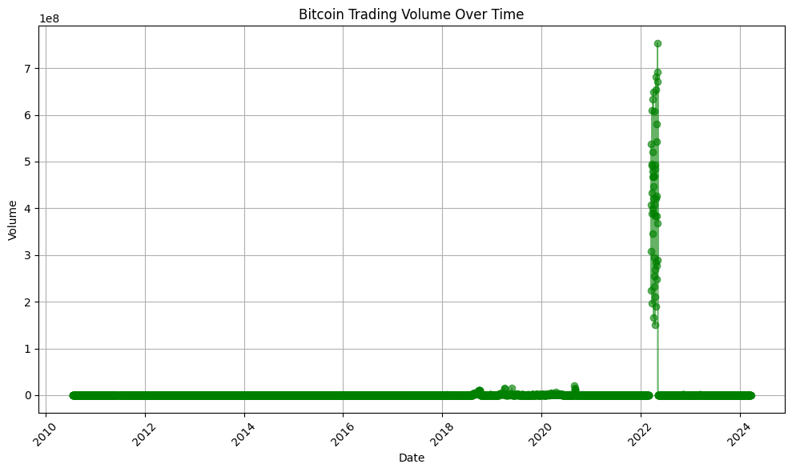
Se realiza la gráfica de los datos cercanos a los datos faltantes, con el fin de analizar el comportamiento
import matplotlib.pyplot as plt
start_date = '2011-06-10'
end_date = '2011-06-30'
plot_range = bitcoin_data[(bitcoin_data['Date'] >= start_date) & (bitcoin_data['Date'] <= end_date)]
# Crear la gráfica
plt.figure(figsize=(10, 6))
plt.plot(plot_range['Date'], plot_range['Vol.'], marker='o', linestyle='-', color='b', label='Volume')
plt.axvspan('2011-06-20', '2011-06-25', color='red', alpha=0.3, label='Missing Data') # Resaltar el rango de datos faltantes
plt.xlabel('Date')
plt.ylabel('Volume')
plt.title('Bitcoin Trading Volume Around Missing Data (06/20/2011 - 06/25/2011)')
plt.grid(True)
plt.xticks(rotation=45)
plt.legend()
plt.tight_layout()
plt.show()

# Calcular la mediana de los valores existentes en 'Vol.'
median_value = bitcoin_data['Vol.'].median()
# Rellenar los valores faltantes con la mediana calculada
bitcoin_data['Vol.'] = bitcoin_data['Vol.'].fillna(median_value)
# Verificar si hay valores faltantes después de la imputación
print(bitcoin_data['Vol.'].isnull().sum())
# Graficar los datos después de la imputación
import matplotlib.pyplot as plt
plt.figure(figsize=(10, 6))
plt.plot(bitcoin_data['Date'], bitcoin_data['Vol.'], color='b', linestyle='-', marker='o', alpha=0.6)
plt.xlabel('Date')
plt.ylabel('Volume')
plt.title('Bitcoin Trading Volume Over Time (After Median Imputation)')
plt.grid(True)
plt.xticks(rotation=45)
plt.tight_layout()
plt.show()
0
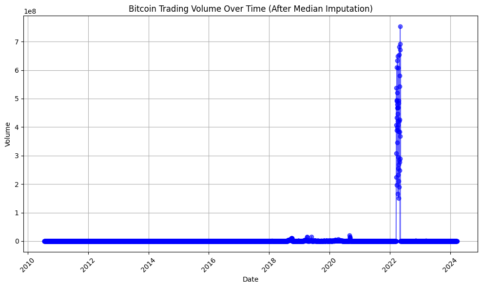
import matplotlib.pyplot as plt
start_date = '2011-06-10'
end_date = '2011-06-30'
plot_range = bitcoin_data[(bitcoin_data['Date'] >= start_date) & (bitcoin_data['Date'] <= end_date)]
plt.figure(figsize=(10, 6))
plt.plot(plot_range['Date'], plot_range['Vol.'], marker='o', linestyle='-', color='b', label='Volume (Imputed)')
plt.axvspan('2011-06-20', '2011-06-25', color='red', alpha=0.3, label='Previously Missing Data') # Resaltar el rango de datos faltantes
plt.xlabel('Date')
plt.ylabel('Volume')
plt.title('Bitcoin Trading Volume Around Previously Missing Data (With Median Imputation)')
plt.grid(True)
plt.xticks(rotation=45)
plt.legend()
plt.tight_layout()
plt.show()

Se realizó el input de los datos faltantes con la mediana, como se puede observar en el gráfico que esta en la parte superiro, el input de vol son los datos que se presentan en la franja roja
Item 3.#
Realice un grafico de velas utilizando la librería Plotly para la serie de tiempo (columna Price). Realice también un histograma con Plotly para representar el volumen tradeado diariamente (Volume)
import pandas as pd
import matplotlib.pyplot as plt
# Asegurarte de que las columnas son numéricas
bitcoin_data['Open'] = pd.to_numeric(bitcoin_data['Open'], errors='coerce')
bitcoin_data['High'] = pd.to_numeric(bitcoin_data['High'], errors='coerce')
bitcoin_data['Low'] = pd.to_numeric(bitcoin_data['Low'], errors='coerce')
bitcoin_data['Price'] = pd.to_numeric(bitcoin_data['Price'], errors='coerce')
# Asegurarte de que la columna Date esté en formato de fecha
bitcoin_data['Date'] = pd.to_datetime(bitcoin_data['Date'])
# Crear el gráfico
fig, ax = plt.subplots(figsize=(24, 12))
# Ancho de cada "vela"
width = 0.6
width2 = 0.2
# Colores para velas alcistas y bajistas
up = bitcoin_data['Price'] >= bitcoin_data['Open']
down = bitcoin_data['Price'] < bitcoin_data['Open']
# Velas alcistas (verde)
ax.bar(bitcoin_data['Date'][up], bitcoin_data['Price'][up] - bitcoin_data['Open'][up], width, bottom=bitcoin_data['Open'][up], color='green')
ax.bar(bitcoin_data['Date'][up], bitcoin_data['High'][up] - bitcoin_data['Price'][up], width2, bottom=bitcoin_data['Price'][up], color='green')
ax.bar(bitcoin_data['Date'][up], bitcoin_data['Low'][up] - bitcoin_data['Open'][up], width2, bottom=bitcoin_data['Low'][up], color='green')
# Velas bajistas (rojo)
ax.bar(bitcoin_data['Date'][down], bitcoin_data['Price'][down] - bitcoin_data['Open'][down], width, bottom=bitcoin_data['Open'][down], color='red')
ax.bar(bitcoin_data['Date'][down], bitcoin_data['High'][down] - bitcoin_data['Price'][down], width2, bottom=bitcoin_data['Price'][down], color='red')
ax.bar(bitcoin_data['Date'][down], bitcoin_data['Low'][down] - bitcoin_data['Open'][down], width2, bottom=bitcoin_data['Low'][down], color='red')
# Configuración del título y etiquetas
ax.set_title('Bitcoin Price Candlestick Chart')
ax.set_xlabel('Date')
ax.set_ylabel('Price')
# Rotar fechas en el eje x para claridad
plt.xticks(rotation=45)
plt.tight_layout()
plt.show()
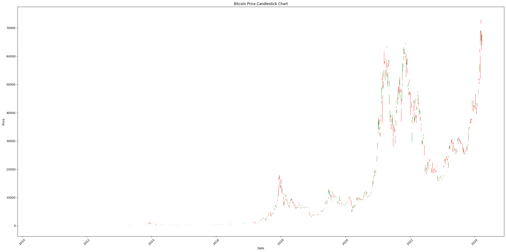
import pandas as pd
import matplotlib.pyplot as plt
# Asegurarte de que las columnas son numéricas
bitcoin_data['Open'] = pd.to_numeric(bitcoin_data['Open'], errors='coerce')
bitcoin_data['High'] = pd.to_numeric(bitcoin_data['High'], errors='coerce')
bitcoin_data['Low'] = pd.to_numeric(bitcoin_data['Low'], errors='coerce')
bitcoin_data['Price'] = pd.to_numeric(bitcoin_data['Price'], errors='coerce')
# Asegurarte de que la columna Date esté en formato de fecha
bitcoin_data['Date'] = pd.to_datetime(bitcoin_data['Date'])
# Filtrar un rango de fechas específico para el zoom
start_date = '2016-01-01'
end_date = '2017-01-01'
mask = (bitcoin_data['Date'] >= start_date) & (bitcoin_data['Date'] <= end_date)
bitcoin_data_zoom = bitcoin_data.loc[mask]
# Crear el gráfico con el rango de fechas especificado
fig, ax = plt.subplots(figsize=(12, 6))
# Ancho de cada "vela"
width = 0.6
width2 = 0.2
# Colores para velas alcistas y bajistas en el rango filtrado
up = bitcoin_data_zoom['Price'] >= bitcoin_data_zoom['Open']
down = bitcoin_data_zoom['Price'] < bitcoin_data_zoom['Open']
# Velas alcistas (verde)
ax.bar(bitcoin_data_zoom['Date'][up], bitcoin_data_zoom['Price'][up] - bitcoin_data_zoom['Open'][up], width, bottom=bitcoin_data_zoom['Open'][up], color='green')
ax.bar(bitcoin_data_zoom['Date'][up], bitcoin_data_zoom['High'][up] - bitcoin_data_zoom['Price'][up], width2, bottom=bitcoin_data_zoom['Price'][up], color='green')
ax.bar(bitcoin_data_zoom['Date'][up], bitcoin_data_zoom['Low'][up] - bitcoin_data_zoom['Open'][up], width2, bottom=bitcoin_data_zoom['Low'][up], color='green')
# Velas bajistas (rojo)
ax.bar(bitcoin_data_zoom['Date'][down], bitcoin_data_zoom['Price'][down] - bitcoin_data_zoom['Open'][down], width, bottom=bitcoin_data_zoom['Open'][down], color='red')
ax.bar(bitcoin_data_zoom['Date'][down], bitcoin_data_zoom['High'][down] - bitcoin_data_zoom['Price'][down], width2, bottom=bitcoin_data_zoom['Price'][down], color='red')
ax.bar(bitcoin_data_zoom['Date'][down], bitcoin_data_zoom['Low'][down] - bitcoin_data_zoom['Open'][down], width2, bottom=bitcoin_data_zoom['Low'][down], color='red')
# Configuración del título y etiquetas
ax.set_title('Bitcoin Price Candlestick Chart (Zoom)')
ax.set_xlabel('Date')
ax.set_ylabel('Price')
# Rotar fechas en el eje x para claridad
plt.xticks(rotation=45)
plt.tight_layout()
plt.show()
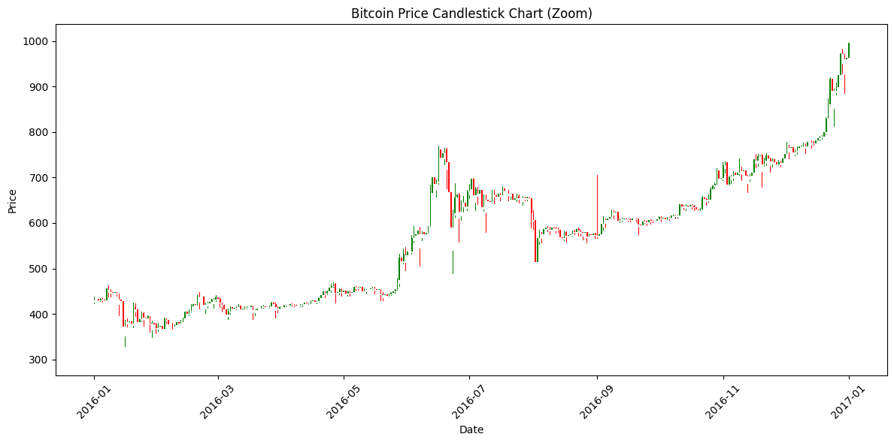
En el gráfico se puede observar que hasta el 2017 el comportamiento del birtcoin tuve pequeeñas fluctuaciones, por lo tanto se dice que el comportamiento fue relativamente estable. A partir de ese año el precio presento una tendencia alcista. Posteriormente se puede observar un patrón ciclico con crecimiento acelerado y caidas abruptas esto puede ser debido a reacciones de factores externos. En el 2020 se puede observar que la votalidad aumenta y esto pudo ser causado debido a la pandemia, luego de la pandemia queda la votatilidad persiste, se presenta un crecimeinto acumulado con caidad abruptas y en el 2024 presenta una tendencia alcista
import matplotlib.pyplot as plt
import pandas as pd
# Asegúrate de que 'Date' sea de tipo datetime
bitcoin_data['Date'] = pd.to_datetime(bitcoin_data['Date'])
bitcoin_data['Year'] = bitcoin_data['Date'].dt.year
# Agrupar los datos por año y sumar el volumen anual
annual_data = bitcoin_data.groupby('Year')['Vol.'].sum().reset_index()
# Crear el gráfico de barras en matplotlib
fig, ax = plt.subplots(figsize=(10, 6))
ax.bar(annual_data['Year'], annual_data['Vol.'], color='skyblue')
# Configuración del título y etiquetas
ax.set_title('Annual Traded Volume of Bitcoin')
ax.set_xlabel('Year')
ax.set_ylabel('Total Volume')
ax.set_yscale('log') # Establecer escala logarítmica en el eje y
# Ajuste del espacio entre las barras para mayor claridad
plt.xticks(rotation=45)
plt.tight_layout()
plt.show()
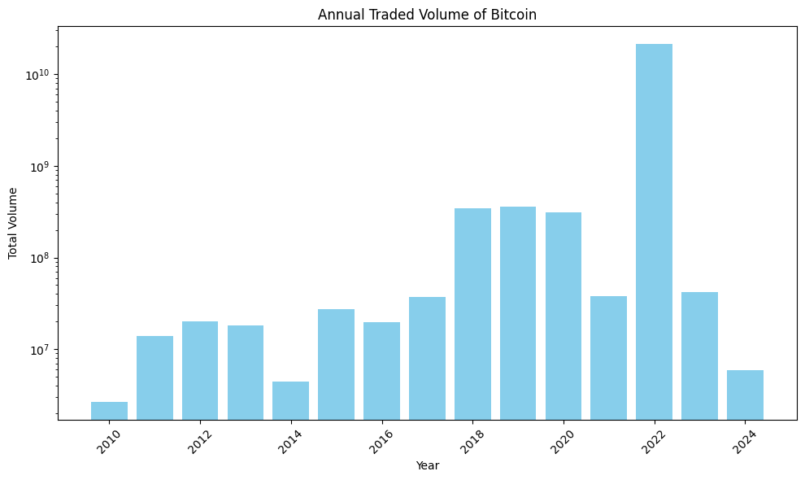
Se puede observar en la gráfica tiene una tendencia alcista en el # de transacciones por días, cuando llego la pandemia el la cantidad de transacciones empieza a disminuir, hasta el 2022 que aumenta y posteriormente se observa una caída marcada en el 2023 y 2024. Esta fluctuaciones pudieron ser generadas por factores externos
Item 4.#
Realice graficos de subseries considerando agrupación por semana, mes y año. Utilice graficos de series de tiempo y boxplots para analizar estas subseries.
bitcoin_data['Date'] = pd.to_datetime(bitcoin_data['Date'], errors='coerce')
bitcoin_data['Price'] = pd.to_numeric(bitcoin_data['Price'], errors='coerce')
bitcoin_data['Year'] = bitcoin_data['Date'].dt.year
bitcoin_data['Month'] = bitcoin_data['Date'].dt.month
bitcoin_data['Week'] = bitcoin_data['Date'].dt.isocalendar().week
print(bitcoin_data[['Date', 'Year', 'Month', 'Week']].head(10))
Date Year Month Week
0 2024-03-24 2024 3 12
1 2024-03-23 2024 3 12
2 2024-03-22 2024 3 12
3 2024-03-21 2024 3 12
4 2024-03-20 2024 3 12
5 2024-03-19 2024 3 12
6 2024-03-18 2024 3 12
7 2024-03-17 2024 3 11
8 2024-03-16 2024 3 11
9 2024-03-15 2024 3 11
datos_semanales = bitcoin_data.groupby(['Year', 'Week'])['Price'].mean().reset_index()
datos_mensuales = bitcoin_data.groupby(['Year', 'Month'])['Price'].mean().reset_index()
datos_anuales = bitcoin_data.groupby(['Year'])['Price'].mean().reset_index()
datos_semanales['Price'] = pd.to_numeric(datos_semanales['Price'], errors='coerce')
datos_mensuales['Price'] = pd.to_numeric(datos_mensuales['Price'], errors='coerce')
datos_anuales['Price'] = pd.to_numeric(datos_anuales['Price'], errors='coerce')
datos_semanales = datos_semanales.dropna(subset=['Price'])
datos_mensuales = datos_mensuales.dropna(subset=['Price'])
datos_anuales = datos_anuales.dropna(subset=['Price'])
print(datos_semanales.head(10))
print(datos_mensuales.head(10))
print(datos_anuales.head(10))
Year Week Price
0 2010 28 0.1
1 2010 29 0.1
2 2010 30 0.1
3 2010 31 0.1
4 2010 32 0.1
5 2010 33 0.1
6 2010 34 0.1
7 2010 35 0.1
8 2010 36 0.1
9 2010 37 0.1
Year Month Price
0 2010 7 0.100000
1 2010 8 0.100000
2 2010 9 0.100000
3 2010 10 0.119355
4 2010 11 0.263333
5 2010 12 0.238710
6 2011 1 0.354839
7 2011 2 0.925000
8 2011 3 0.858065
9 2011 4 1.250000
Year Price
0 2010 0.158683
1 2011 5.644658
2 2012 8.291803
3 2013 200.149041
4 2014 522.891233
5 2015 272.024110
6 2016 566.997814
7 2017 3981.072329
8 2018 7552.158356
9 2019 7371.821918
Serie semanal
import matplotlib.ticker as mticker
# Gráfico Semanal
plt.figure(figsize=(18, 8))
plt.plot(datos_semanales.index, datos_semanales['Price'], marker='o', label='promedio semanal')
plt.title('Serie Semanal', fontsize=14)
plt.xlabel('Index Semanal', fontsize=12)
plt.ylabel('Suma de Price', fontsize=12)
plt.legend()
plt.xticks(rotation=45)
plt.grid(True)
plt.gca().yaxis.set_major_formatter(mticker.FuncFormatter(lambda x, _: f'{x:,.0f}'))
plt.show()
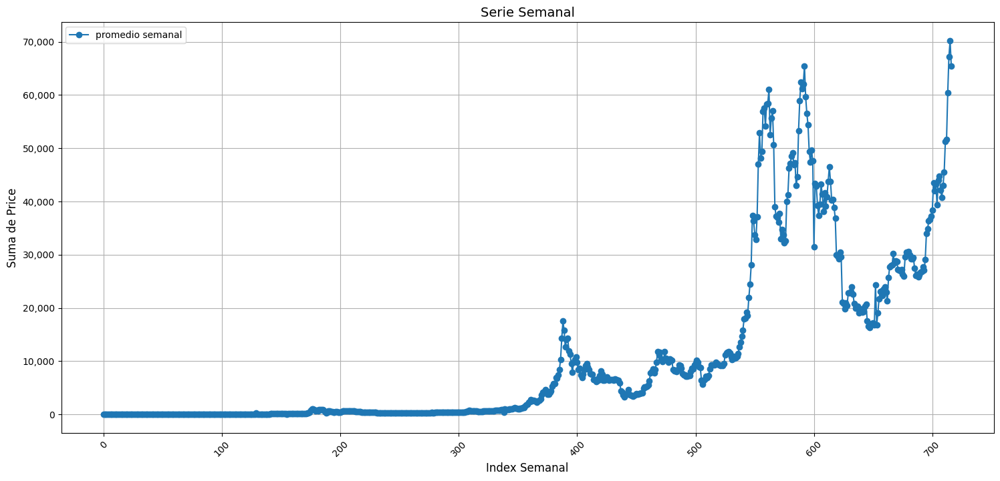
En la grafica de la serie semanal se puede observar una alta volatilidad, pero con tendencia creciente, especialemente al fianlizar la serie, ademas presenta alta variabilidad especialemnte al rededor de la semana 400 se puede observar mayor fluctuaciones. Ademas la grafica muestra patrones ciclicos para realizar un mejor analisis se realiza una descomposici[on para revisar los siguientes componentes: la tendencia de la serie, estacionalidad y resiadual
from statsmodels.tsa.seasonal import seasonal_decompose
import matplotlib.pyplot as plt
decomposition = seasonal_decompose(datos_semanales['Price'], model='additive', period=52)
fig, ax = plt.subplots(4, 1, figsize=(12, 10))
decomposition.observed.plot(ax=ax[0], title='Serie Observada')
decomposition.trend.plot(ax=ax[1], title='Tendencia')
decomposition.seasonal.plot(ax=ax[2], title='Estacionalidad')
decomposition.resid.plot(ax=ax[3], title='Residuo')
plt.tight_layout()
plt.show()
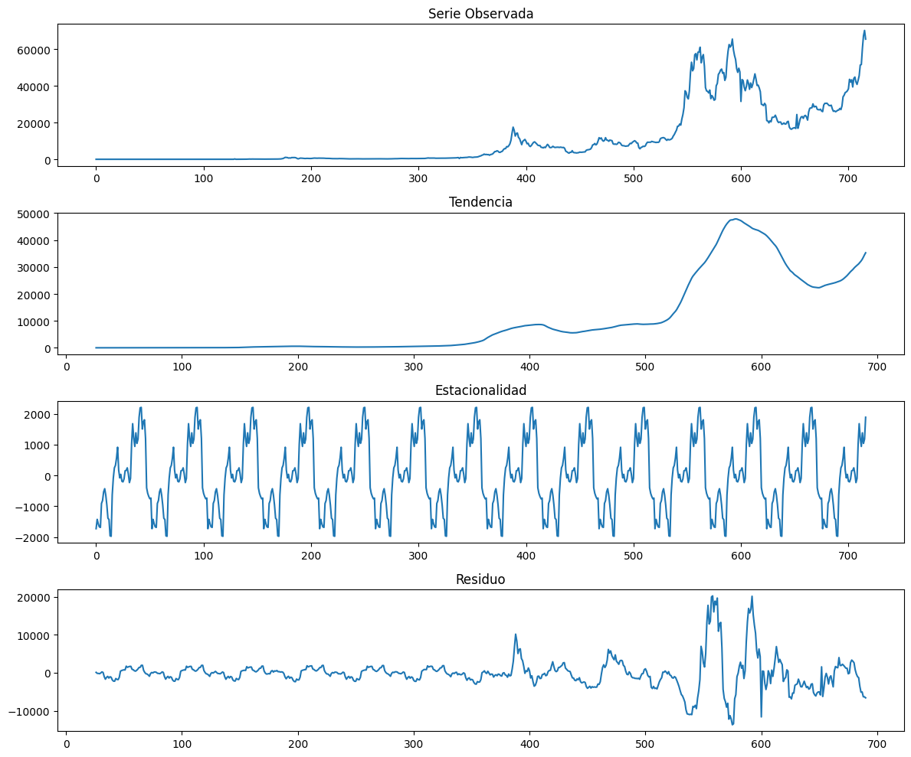
En el grafico de tendencia se puede observar un aunmento gradual, el cual se acelera al rededor de la semana 400, ademas de puede ver que al rededor de la semana 600 hay un pico en el precio del bitcoin. En el grafico se estacionalidad se puede percibir que hay un patron repetitivo. En la grafica se residuo se puede notar que hay eventos los cuales no pueden ser predecidos facilmente con la tendencia y la estacionalidad, por lo menos las oscilaciones en la semana 600 se pueden dar por eventos atipicos.
Serie mensual
# Gráfico Mensual
plt.figure(figsize=(18, 8))
plt.plot(datos_mensuales.index, datos_mensuales['Price'], marker='o', label='promedio Mensual', color='orange')
plt.title('Serie Mensual', fontsize=14)
plt.xlabel('Index Mensual', fontsize=12)
plt.ylabel('Suma de Price', fontsize=12)
plt.legend()
plt.xticks(rotation=45)
plt.grid(True)
plt.gca().yaxis.set_major_formatter(mticker.FuncFormatter(lambda x, _: f'{x:,.0f}'))
plt.show()
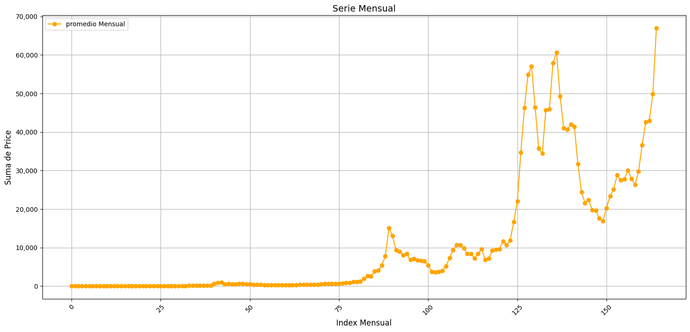
En la serie se puede observar que hay meses donde los precios del bitcoin se mantuvieron bajos, aproximandante apartir de la semana 75 se puede ver un aumento del precio. ademas se presentan varios picos y caidas del rpecio del Bitcoin
from statsmodels.tsa.seasonal import seasonal_decompose
import matplotlib.pyplot as plt
decomposition = seasonal_decompose(datos_mensuales['Price'], model='additive', period=12)
fig, ax = plt.subplots(4, 1, figsize=(12, 10))
decomposition.observed.plot(ax=ax[0], title='Serie Observada')
decomposition.trend.plot(ax=ax[1], title='Tendencia')
decomposition.seasonal.plot(ax=ax[2], title='Estacionalidad')
decomposition.resid.plot(ax=ax[3], title='Residuo')
plt.tight_layout()
plt.show()
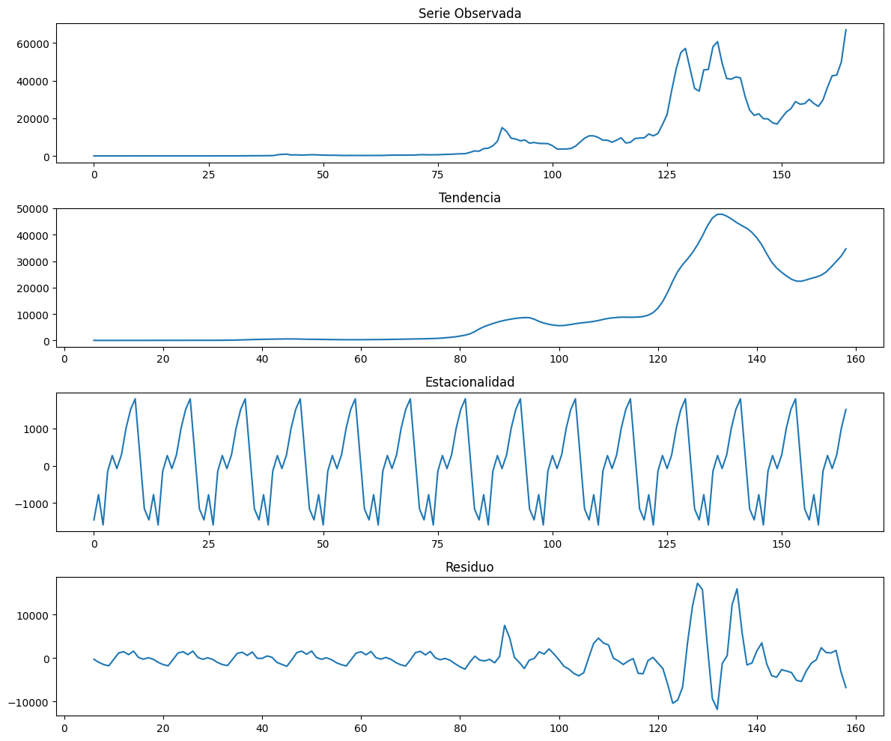
En el grafico de tendencia se puede ver un incremento a lo largo de los meses en el precio del Bitcoin, sobretodo a partir del mes 60. En el grafico de estacionalidad se puede observar que hay un patron estacional con repeticiones En el grafico de residuo se puede observra que estos tienen variaciones, por lo cual se dice que hay volatilidad en los datos la cual no puede ser explicada ni por la tendencia ni la estacionalidad
Serie anual
# Gráfico Anual
plt.figure(figsize=(18, 8))
plt.plot(datos_anuales['Year'], datos_anuales['Price'], marker='o', label='Suma Anual', color='green')
plt.title('Serie Anual', fontsize=14)
plt.xlabel('Anual', fontsize=12)
plt.ylabel('Suma de Price', fontsize=12)
plt.legend()
plt.xticks(rotation=45)
plt.grid(True)
plt.gca().yaxis.set_major_formatter(mticker.FuncFormatter(lambda x, _: f'{x:,.0f}'))
plt.show()
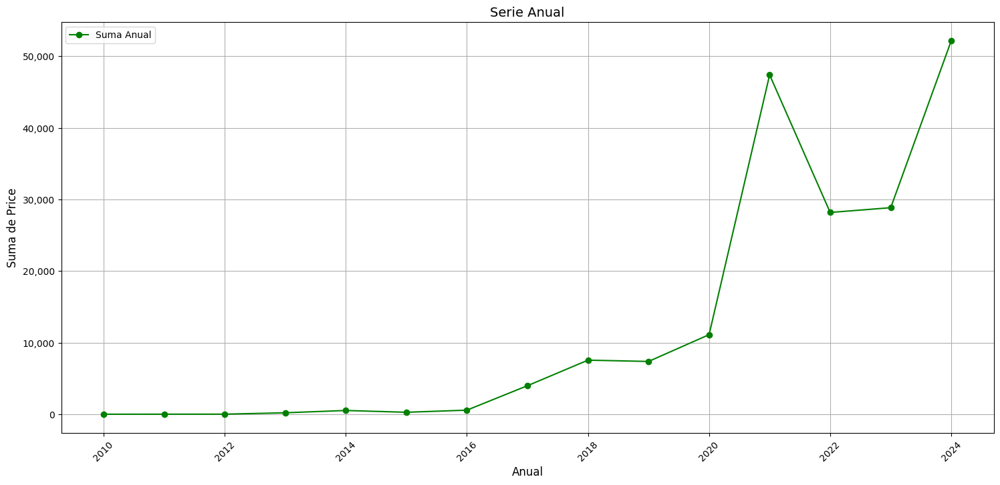
En la grafica se puede observar que desde los primeros años el precio del Bitcoin se mnatuvo bajo y estable, el cual empezo a incremental a partir dle 2016, En el 2017 se muestra un crecimiento significativo hasta el 2021, en este año el bitcoin alcanzo los valores maximos historicos, despuedes de esto se presenta una caida esto pudo ser causado por la pandemia
from statsmodels.tsa.seasonal import seasonal_decompose
import matplotlib.pyplot as plt
decomposition = seasonal_decompose(datos_anuales['Price'], model='additive', period=1)
fig, ax = plt.subplots(4, 1, figsize=(12, 10))
decomposition.observed.plot(ax=ax[0], title='Serie Observada')
decomposition.trend.plot(ax=ax[1], title='Tendencia')
decomposition.seasonal.plot(ax=ax[2], title='Estacionalidad')
decomposition.resid.plot(ax=ax[3], title='Residuo')
plt.tight_layout()
plt.show()
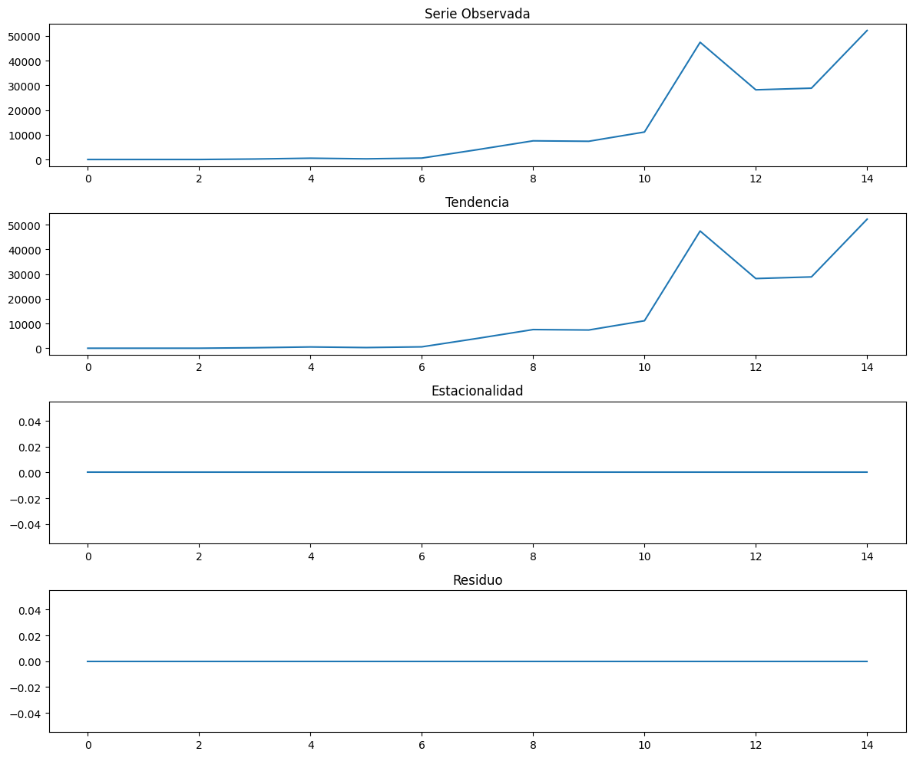
Segun la grafica se puede observar que el Bitcoin a novel anual no sigie patrones estacionales regulares como otras series
Boxplot semanal
import matplotlib.pyplot as plt
plt.figure(figsize=(10, 6))
plt.boxplot(datos_semanales['Price'])
plt.title('Boxplot promedio semanal del precio', fontsize=14)
plt.ylabel('Suma de Price', fontsize=12)
plt.grid(True)
plt.show()
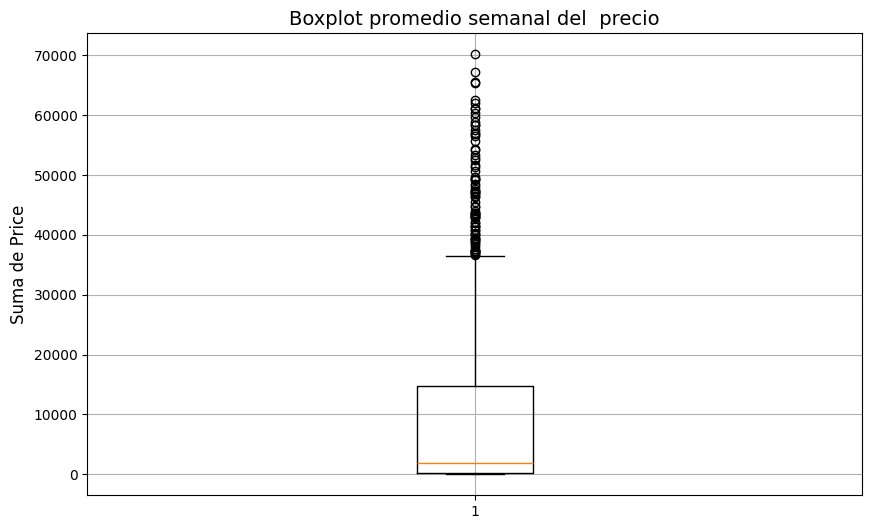
Se puede observar que la mediana de la suma semanal del precio se encuentra en un rango bajo,lo cual indica que la mayoria de semanas el precio del bitcoin fue bajo, Ademas se puede observar gran frecuencia de outliers, esto puede ser porque hubo semanaas en el cual el precio del bitcoin fue mayor que en las demas semanas. los datos son sesgados hacia la derecha.
Boxplot mensual
import matplotlib.pyplot as plt
plt.figure(figsize=(10, 6))
plt.boxplot(datos_mensuales['Price'])
plt.title('Boxplot promedio mensual del precio', fontsize=14)
plt.ylabel('Suma de Price', fontsize=12)
plt.grid(True)
plt.show()
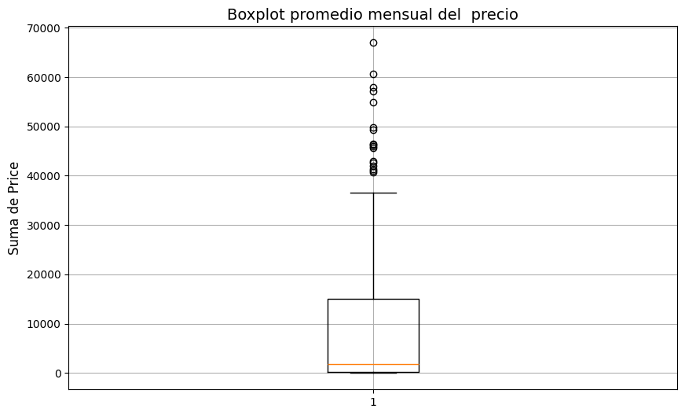
La mediana esta cerca del limite inferior esto es debido a que la gran parte del promedio del precio del bitcoin son bajos, la caja que representa el rango intercuartil muestra que aproximadamente el 50% de los datos estan en un rango estrecho, es decir, la mayoria de meses el precio del bitcoin no varia en gran cantidad. Ademas se observa gran cantidad de valores atipicos hacia arriba, debido a que hay meses en los cuales el valor del bitcoin fue alto en compracion a los otrso meses
import matplotlib.pyplot as plt
plt.figure(figsize=(10, 6))
plt.boxplot(datos_anuales['Price'])
plt.title('Boxplot promedio anual del precio', fontsize=14)
plt.ylabel('Suma de Price', fontsize=12)
plt.grid(True)
plt.show()
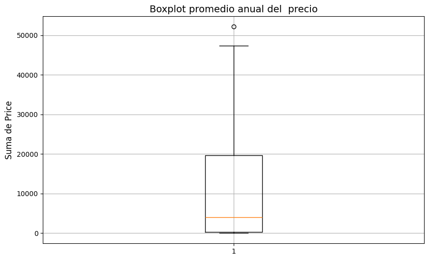
La mediana esta en la parte baja de la caja, debido a que la mayoria de precios anuales tienden a concentrase en valores mas bajos, los bigotes se extienden, lo cual indica que existen valores más altos que aún están dentro del rango normal de la distribución.
Item 5.#
Estudie estacionariedad de la serie de tiempo usando la ACF estudiada durante el curso el curso, asi como tambien los respectivos test estadísticos tales como Ljung-Box y Dickey Fuller. Aplique además las transformaciones necesarias para convertir la serie de tiempo en estacionaria.
import pandas as pd
from matplotlib import pyplot as plt
from statsmodels.graphics.tsaplots import plot_acf, plot_pacf
bitcoin_data['Date'] = pd.to_datetime(bitcoin_data['Date'])
bitcoin_data.set_index('Date', inplace=True)
plt.figure(figsize=(7, 5))
bitcoin_data['Price'].plot(color='b')
plt.title('Bitcoin Price Over Time')
plt.xlabel('Time')
plt.ylabel('Price')
plt.grid(True)
plt.show()
lag = range(0, 31)
bitcoin_acf = [bitcoin_data['Price'].autocorr(l) for l in lag]
plt.figure(figsize=(7, 5))
plt.plot(lag, bitcoin_acf, marker='.', color='b')
plt.title('Autocorrelation Function for Bitcoin Price')
plt.xlabel('Lag in terms of number of days')
plt.ylabel('Autocorrelation')
plt.grid(True)
plt.show()
plt.figure(figsize=(7, 5))
plot_acf(bitcoin_data['Price'], lags=30)
plt.grid(True)
plt.show()
plt.figure(figsize=(7, 5))
plot_pacf(bitcoin_data['Price'], lags=30)
plt.grid(True)
plt.show()
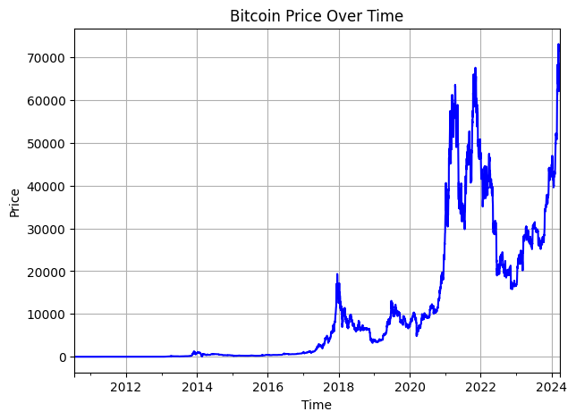
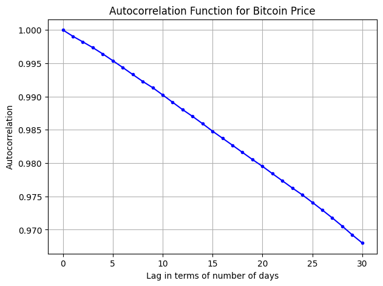
<Figure size 700x500 with 0 Axes>
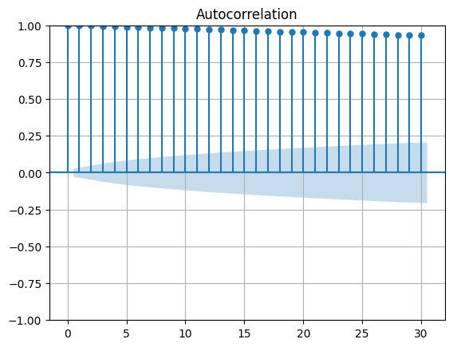
<Figure size 700x500 with 0 Axes>
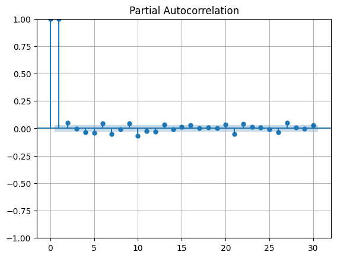
En el gráfico se puede observar que la autocorrelación empiezan en 1, debido a que essta serie esta perfectamente correlacionada, es decir, que los valores del precio del bitcoin estan fuertemente correlacionadas en cortos periodos de tiempo. Asimismo se puede observar que a medida que aumenta el lag, la autocorrelación disminuye de manera lineal. La serie de precios del Bitcoin tiene gran dependencia del pasado.
En el gráfico de autocorrelación parcial los dos primeros lags tienen valores altos signiifcativos, lo cuál indica hay una fuerte correlación directa directa entre el precio actual y los dos valores anteriores. Después de los primeros dos lagas el PACF cae rapidamente a valores cercanos de cero. lo cuál indica que la dependencia direcat disminuye después del segundo lag, lo que sugiere que los lags mas altos no aportan mucha información adicional
import pandas as pd
from matplotlib import pyplot as plt
from statsmodels.tsa import stattools
from pandas.plotting import autocorrelation_plot
bitcoin_data['Date'] = pd.to_datetime(bitcoin_data[['Year', 'Month', 'Week']].astype(str).agg('-'.join, axis=1), errors='coerce')
bitcoin_data.set_index('Date', inplace=True)
bitcoin_data = bitcoin_data.dropna(subset=['Price'])
first_order_diff = bitcoin_data['Price'].diff(1)
fig, ax = plt.subplots(2, sharex=True)
fig.set_size_inches(7, 5)
bitcoin_data['Price'].plot(ax=ax[0], color='b')
ax[0].set_title('Bitcoin Price Over Time')
first_order_diff.plot(ax=ax[1], color='r')
ax[1].set_title('First-order Differences of Bitcoin Price')
plt.tight_layout()
plt.show()
# Test de Ljung-Box para la serie original
acf_bitcoin, confint_bitcoin, qstat_bitcoin, pvalues_bitcoin = stattools.acf(
bitcoin_data['Price'], nlags=20, qstat=True, alpha=0.05
)
alpha = 0.05
print("Ljung-Box Test Results for Bitcoin Prices:")
for l, p_val in enumerate(pvalues_bitcoin):
if p_val > alpha:
print(f'Null hypothesis is accepted at lag = {l} for p-val = {p_val:.4f}')
else:
print(f'Null hypothesis is rejected at lag = {l} for p-val = {p_val:.4f}')
# Test de Ljung-Box para la primera diferencia de la serie
acf_first_diff, confint_first_diff, qstat_first_diff, pvalues_first_diff = stattools.acf(
first_order_diff.iloc[1:], nlags=20, qstat=True, alpha=0.05
)
print("\nLjung-Box Test Results for First Differences of Bitcoin Prices:")
for l, p_val in enumerate(pvalues_first_diff):
if p_val > alpha:
print(f'Null hypothesis is accepted at lag = {l} for p-val = {p_val:.4f}')
else:
print(f'Null hypothesis is rejected at lag = {l} for p-val = {p_val:.4f}')
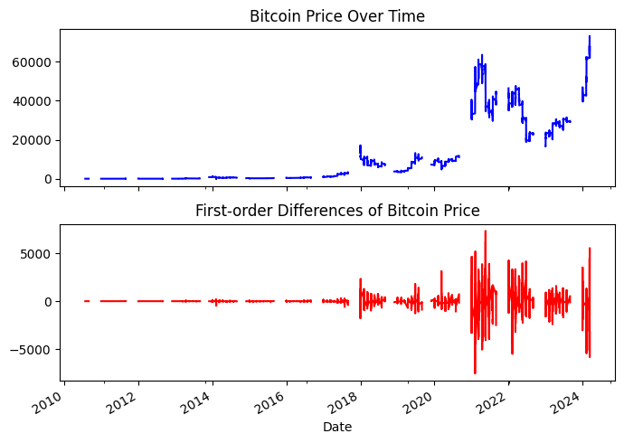
Ljung-Box Test Results for Bitcoin Prices:
Null hypothesis is rejected at lag = 0 for p-val = 0.0000
Null hypothesis is rejected at lag = 1 for p-val = 0.0000
Null hypothesis is rejected at lag = 2 for p-val = 0.0000
Null hypothesis is rejected at lag = 3 for p-val = 0.0000
Null hypothesis is rejected at lag = 4 for p-val = 0.0000
Null hypothesis is rejected at lag = 5 for p-val = 0.0000
Null hypothesis is rejected at lag = 6 for p-val = 0.0000
Null hypothesis is rejected at lag = 7 for p-val = 0.0000
Null hypothesis is rejected at lag = 8 for p-val = 0.0000
Null hypothesis is rejected at lag = 9 for p-val = 0.0000
Null hypothesis is rejected at lag = 10 for p-val = 0.0000
Null hypothesis is rejected at lag = 11 for p-val = 0.0000
Null hypothesis is rejected at lag = 12 for p-val = 0.0000
Null hypothesis is rejected at lag = 13 for p-val = 0.0000
Null hypothesis is rejected at lag = 14 for p-val = 0.0000
Null hypothesis is rejected at lag = 15 for p-val = 0.0000
Null hypothesis is rejected at lag = 16 for p-val = 0.0000
Null hypothesis is rejected at lag = 17 for p-val = 0.0000
Null hypothesis is rejected at lag = 18 for p-val = 0.0000
Null hypothesis is rejected at lag = 19 for p-val = 0.0000
Ljung-Box Test Results for First Differences of Bitcoin Prices:
Null hypothesis is rejected at lag = 0 for p-val = 0.0001
Null hypothesis is rejected at lag = 1 for p-val = 0.0004
Null hypothesis is rejected at lag = 2 for p-val = 0.0000
Null hypothesis is rejected at lag = 3 for p-val = 0.0000
Null hypothesis is rejected at lag = 4 for p-val = 0.0000
Null hypothesis is rejected at lag = 5 for p-val = 0.0000
Null hypothesis is rejected at lag = 6 for p-val = 0.0001
Null hypothesis is rejected at lag = 7 for p-val = 0.0000
Null hypothesis is rejected at lag = 8 for p-val = 0.0000
Null hypothesis is rejected at lag = 9 for p-val = 0.0000
Null hypothesis is rejected at lag = 10 for p-val = 0.0000
Null hypothesis is rejected at lag = 11 for p-val = 0.0000
Null hypothesis is rejected at lag = 12 for p-val = 0.0000
Null hypothesis is rejected at lag = 13 for p-val = 0.0000
Null hypothesis is rejected at lag = 14 for p-val = 0.0000
Null hypothesis is rejected at lag = 15 for p-val = 0.0000
Null hypothesis is rejected at lag = 16 for p-val = 0.0000
Null hypothesis is rejected at lag = 17 for p-val = 0.0000
Null hypothesis is rejected at lag = 18 for p-val = 0.0000
Null hypothesis is rejected at lag = 19 for p-val = 0.0000
Todos los p-values son 0, lo cuál indica que se rechaza la hipotesis nula (No hay autocorrelación en los lags) en cada lag, lo cuál indica indica que las serie original de precios tienen autocorrelación significativas. La presencia de autocorrelación
import pandas as pd
import matplotlib.pyplot as plt
from statsmodels.tsa import stattools
missing = pd.isnull(bitcoin_data['Price'])
# Filtrar los datos para eliminar valores faltantes
bitcoin_data = bitcoin_data.loc[~missing, :]
# Graficar los precios de Bitcoin
fig = plt.figure(figsize=(5.5, 5.5))
ax = fig.add_subplot(1,1,1)
bitcoin_data['Price'].plot(ax=ax)
ax.set_title('Bitcoin Price Time Series')
# Prueba de Dickey-Fuller aumentada
adf_result = stattools.adfuller(bitcoin_data['Price'], autolag='AIC')
print('p-value of the ADF test for Bitcoin price:', adf_result[1])
p-value of the ADF test for Bitcoin price: 0.07652825121387341
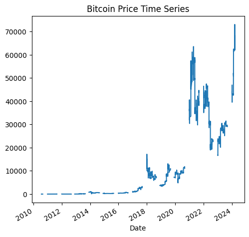
El p-value de la prueba de Dickey fuller es mayor al 5%, lo cuál quiere decir que la serie no es estacionaria, lo cuál indica que las serie sigue una tendencia o tiene una estructura no constante a lo largo del tiempo.
import pandas as pd
import matplotlib.pyplot as plt
bitcoin_data['Price_diff'] = bitcoin_data['Price'].diff()
plt.figure(figsize=(10, 6))
plt.plot(bitcoin_data['Price_diff'], color='red')
plt.title("First-order Differenced Bitcoin Price")
plt.xlabel("Date")
plt.ylabel("Price Difference")
plt.show()
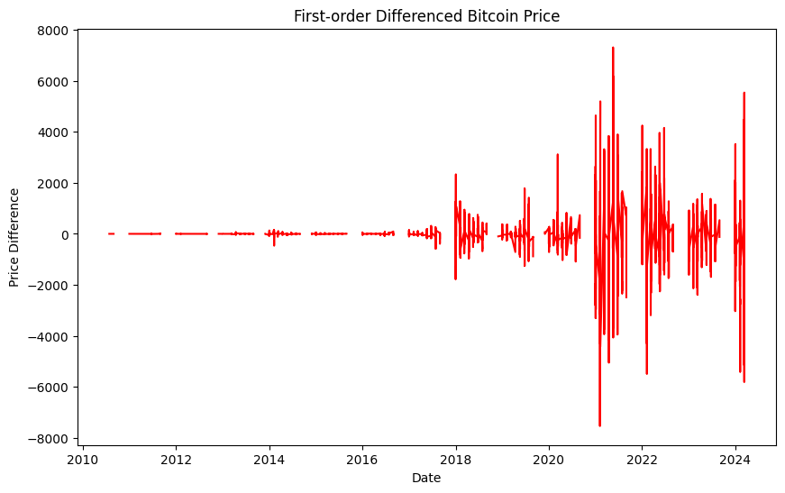
from statsmodels.tsa.stattools import adfuller
price_diff = bitcoin_data['Price_diff'].dropna()
result = adfuller(price_diff)
print(f'p-value: {result[1]}')
# Interpretación
if result[1] < 0.05:
print("La serie diferenciada es estacionaria (p-valor < 0.05).")
else:
print("La serie diferenciada no es estacionaria (p-valor >= 0.05).")
p-value: 1.2757808100480691e-18
La serie diferenciada es estacionaria (p-valor < 0.05).
print(bitcoin_data)
Price Open High Low Vol. Change % Year \
Date
2024-03-12 67211.9 64036.5 67587.8 63812.9 65590.0 4.96% 2024
2024-03-12 64037.8 63785.6 65972.4 63074.9 35110.0 0.40% 2024
2024-03-12 63785.5 65501.5 66633.3 62328.3 72430.0 -2.62% 2024
2024-03-12 65503.8 67860.0 68161.7 64616.1 75260.0 -3.46% 2024
2024-03-12 67854.0 62046.8 68029.5 60850.9 133530.0 9.35% 2024
... ... ... ... ... ... ... ...
2010-07-29 0.1 0.1 0.1 0.1 2160.0 0.00% 2010
2010-07-29 0.1 0.1 0.1 0.1 580.0 0.00% 2010
2010-07-29 0.1 0.1 0.1 0.1 260.0 0.00% 2010
2010-07-29 0.1 0.1 0.1 0.1 570.0 0.00% 2010
2010-07-28 0.1 0.0 0.1 0.1 80.0 0.00% 2010
Month Week Price_diff
Date
2024-03-12 3 12 NaN
2024-03-12 3 12 -3174.1
2024-03-12 3 12 -252.3
2024-03-12 3 12 1718.3
2024-03-12 3 12 2350.2
... ... ... ...
2010-07-29 7 29 0.0
2010-07-29 7 29 0.0
2010-07-29 7 29 0.0
2010-07-29 7 29 0.0
2010-07-28 7 28 0.0
[4999 rows x 10 columns]
El gráfico de la serie diferenciada, no presenta una tendencia persistente. el p-value es menor del 5%, lo cuál confirma que la serie diferenciada es estacionaria.
Item 6.#
Mediante agregación por grupos analice el comportamiento de la media y desviación estándar, agrupando por semanas, días, meses. Además, para estas agrupaciones, calcule estadísticos móviles. Dibuje la distribución de frecuencias para diferentes lags como se realizó en las notas del curos
6.1 Comportamiento de la media
import pandas as pd
import matplotlib.pyplot as plt
bitcoin_data['Price_diff'] = pd.to_numeric(bitcoin_data['Price_diff'], errors='coerce')
bitcoin_data = bitcoin_data.dropna(subset=['Price_diff'])
Agrupación
datos_diarios = bitcoin_data['Price_diff'].resample('D').agg(['mean', 'std'])
datos_diarios = datos_diarios.dropna(subset=['mean', 'std'])
print(datos_diarios.head(10))
mean std
Date
2010-07-29 0.000000 0.000000
2010-07-30 0.000000 0.000000
2010-08-31 0.000000 0.000000
2011-01-01 0.000000 0.000000
2011-01-02 0.000000 0.057735
2011-01-03 -0.014286 0.037796
2011-01-04 -0.014286 0.037796
2011-02-05 -0.033333 0.051640
2011-02-06 -0.028571 0.111270
2011-02-07 0.042857 0.053452
datos_semanales = bitcoin_data['Price_diff'].resample('W').agg(['mean', 'std'])
datos_semanales = datos_semanales.dropna(subset=['mean', 'std'])
print(datos_semanales.head(10))
mean std
Date
2010-08-01 0.000000 0.000000
2010-09-05 0.000000 0.000000
2011-01-02 0.000000 0.039223
2011-01-09 -0.026667 0.059362
2011-02-06 -0.030769 0.085485
2011-02-13 0.013333 0.074322
2011-03-13 0.003226 0.040693
2011-04-17 -0.073333 0.213240
2011-05-22 -0.212903 0.697014
2011-06-26 -0.193333 2.915586
datos_mensuales = bitcoin_data['Price_diff'].resample('ME').agg(['mean', 'std'])
datos_mensuales = datos_mensuales.dropna(subset=['mean', 'std'])
print(datos_mensuales.head(10))
mean std
Date
2010-07-31 0.000000 0.000000
2010-08-31 0.000000 0.000000
2011-01-31 -0.013793 0.051576
2011-02-28 -0.007143 0.081325
2011-03-31 0.003226 0.040693
2011-04-30 -0.073333 0.213240
2011-05-31 -0.212903 0.697014
2011-06-30 -0.193333 2.915586
2011-07-31 0.074194 0.540350
2011-08-31 0.757143 1.826524
print(bitcoin_data)
Price Open High Low Vol. Change % Year \
Date
2024-03-12 64037.8 63785.6 65972.4 63074.9 35110.0 0.40% 2024
2024-03-12 63785.5 65501.5 66633.3 62328.3 72430.0 -2.62% 2024
2024-03-12 65503.8 67860.0 68161.7 64616.1 75260.0 -3.46% 2024
2024-03-12 67854.0 62046.8 68029.5 60850.9 133530.0 9.35% 2024
2024-03-12 62050.0 67594.1 68099.6 61560.6 148080.0 -8.20% 2024
... ... ... ... ... ... ... ...
2010-07-29 0.1 0.1 0.1 0.1 2160.0 0.00% 2010
2010-07-29 0.1 0.1 0.1 0.1 580.0 0.00% 2010
2010-07-29 0.1 0.1 0.1 0.1 260.0 0.00% 2010
2010-07-29 0.1 0.1 0.1 0.1 570.0 0.00% 2010
2010-07-28 0.1 0.0 0.1 0.1 80.0 0.00% 2010
Month Week Price_diff
Date
2024-03-12 3 12 -3174.1
2024-03-12 3 12 -252.3
2024-03-12 3 12 1718.3
2024-03-12 3 12 2350.2
2024-03-12 3 12 -5804.0
... ... ... ...
2010-07-29 7 29 0.0
2010-07-29 7 29 0.0
2010-07-29 7 29 0.0
2010-07-29 7 29 0.0
2010-07-28 7 28 0.0
[4998 rows x 10 columns]
import matplotlib.pyplot as plt
plt.figure(figsize=(12, 6))
plt.plot(datos_diarios['mean'], label='Media Diaria Diferenciada', color='orange', alpha=0.5)
plt.plot(datos_semanales['mean'], label='Media Semanal Diferenciada', color='blue')
plt.plot(datos_mensuales['mean'], label='Media Mensual Diferenciada', color='green')
plt.xlabel('Fecha')
plt.ylabel('Media Diferenciada del Precio')
plt.title('Media Diferenciada del Precio de Bitcoin')
plt.legend()
plt.show()
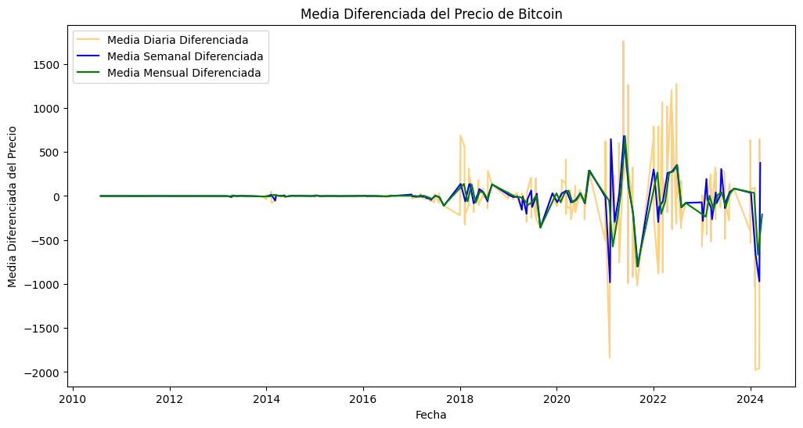
En la gráfica se puede observar que aproximadamente desde el 2010 hasta el 2017 las medias muestran un comportamiento estable, el cuál llega a ser cercano a cero. A partir del 2017 se puede ver la volatilidad en los precios del Bitcoin. Además la media diaria muestra una mayor fluctuación a corto plazo, en cambio la media semanal y mensual presenta que el precio del bitcoin estuvo mas suavizado
plt.figure(figsize=(12, 6))
plt.plot(datos_diarios['std'], label='Desviación Estándar Diaria Diferenciada', color='orange', alpha=0.5)
plt.plot(datos_semanales['std'], label='Desviación Estándar Semanal Diferenciada', color='blue')
plt.plot(datos_mensuales['std'], label='Desviación Estándar Mensual Diferenciada', color='green')
plt.xlabel('Fecha')
plt.ylabel('Desviación Estándar Diferenciada del Precio')
plt.title('Desviación Estándar Diferenciada del Precio de Bitcoin')
plt.legend()
plt.show()
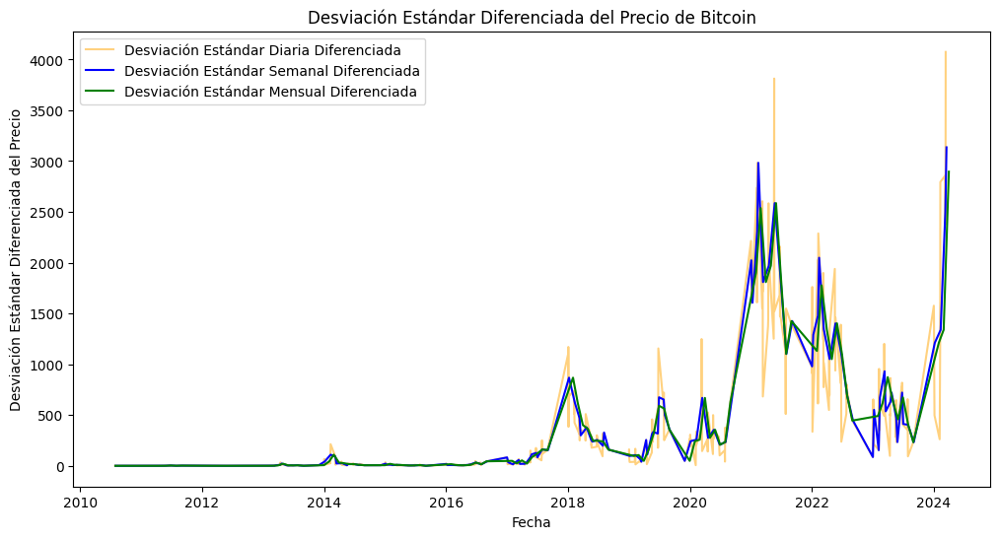
Desde 2010 hasta 2017 el precio del Bitocin no representaba gran variabilidad, además se puede observar que apartr del 2017 hay presencia de picos, debido a la alta volatilidad del Bitcoin, además como se observo en la gráfica de promedio, las graficas diarias muestran cambios mas abruptos y con alta volatilidad
En los gráficos se puede observar que hay mucha variabilidad a corto plazo, en cambio la media semanal suaviza algunas fluctuaciones y en la mensual si se puede observar aún mas sauvizada.En el 2020, parece haber mayor valitilidad
import matplotlib.pyplot as plt
# Desactivar temporalmente el uso de LaTeX
plt.rcParams['text.usetex'] = False
fig, axs = plt.subplots(3, 2, figsize=(12, 15), constrained_layout=True)
axs[0, 0].hist(datos_diarios['mean'].dropna(), bins=30, alpha=0.7, color='blue')
axs[0, 0].set_title('Histograma de Media Diaria')
axs[0, 1].hist(datos_diarios['std'].dropna(), bins=30, alpha=0.7, color='red')
axs[0, 1].set_title('Histograma de Desviación Estándar Diaria')
axs[1, 0].hist(datos_semanales['mean'].dropna(), bins=30, alpha=0.7, color='blue')
axs[1, 0].set_title('Histograma de Media Semanal')
axs[1, 1].hist(datos_semanales['std'].dropna(), bins=30, alpha=0.7, color='red')
axs[1, 1].set_title('Histograma de Desviación Estándar Semanal')
axs[2, 0].hist(datos_mensuales['mean'].dropna(), bins=30, alpha=0.7, color='blue')
axs[2, 0].set_title('Histograma de Media Mensual')
axs[2, 1].hist(datos_mensuales['std'].dropna(), bins=30, alpha=0.7, color='red')
axs[2, 1].set_title('Histograma de Desviación Estándar Mensual')
fig.savefig('output_histogramas.png', bbox_inches='tight')
plt.show()
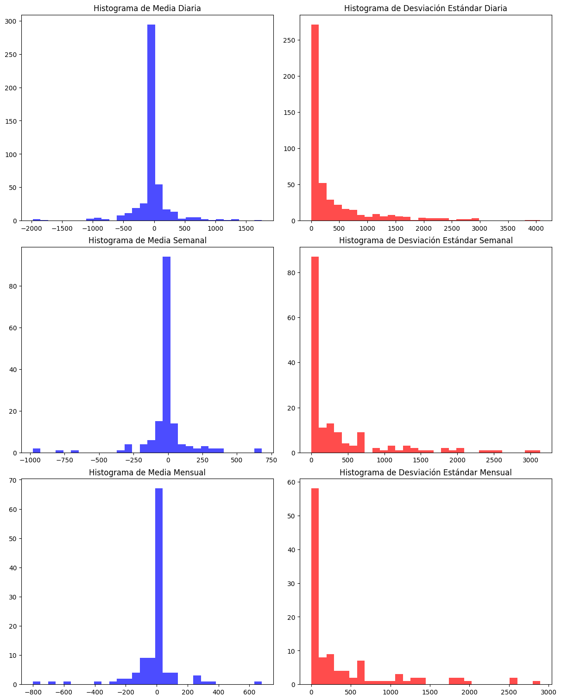
Los gráficos de la desviación esatandar muestra distribuciones sesgadas hacia la derecha, es decir que la mayoría de días,semanas o meses presentan una baja variabilidad, además se puede observar que la dispersión tiende a aumentar cuando es mayor el peridod de agrupación
En los gráficos de la media los histogramas tienen una alta concentración en los valores de cero, además se observan colas en los histogramas lo cuál se podría decir que es por presencia de datos atípicos
Item 7.#
Aplique las medias móviles M(2) t (t,t+1) , M(4) t , M(4) t , M(3) (t−1,t+1) t y M(3) a la serie del precio de cierre de BTC-USD. Posteriormente, úselas para remover tendencia y aplique la prueba de Dickey Fuller y LJung Box para verificar si se logró estacionariedad
M(2)
#M(2)
bitcoin_data['M2'] = bitcoin_data['Price'].rolling(window=2).mean()
print(bitcoin_data[['Price', 'M2']].head(10))
Price M2
Date
2024-03-12 64037.8 NaN
2024-03-12 63785.5 63911.65
2024-03-12 65503.8 64644.65
2024-03-12 67854.0 66678.90
2024-03-12 62050.0 64952.00
2024-03-12 67594.1 64822.05
2024-03-11 68391.2 67992.65
2024-03-11 65314.2 66852.70
2024-03-11 69463.7 67388.95
2024-03-11 71387.5 70425.60
# (M2(t, t+1))
bitcoin_data['M_2_t_t1'] = (bitcoin_data['Price'] + bitcoin_data['Price'].shift(-1)) / 2
print(bitcoin_data[['Price', 'M_2_t_t1']].head(10))
Price M_2_t_t1
Date
2024-03-12 64037.8 63911.65
2024-03-12 63785.5 64644.65
2024-03-12 65503.8 66678.90
2024-03-12 67854.0 64952.00
2024-03-12 62050.0 64822.05
2024-03-12 67594.1 67992.65
2024-03-11 68391.2 66852.70
2024-03-11 65314.2 67388.95
2024-03-11 69463.7 70425.60
2024-03-11 71387.5 72226.90
#M(4)
bitcoin_data['M_4'] = bitcoin_data['Price'].rolling(window=4).mean()
print(bitcoin_data[['Price', 'M_4']].head(10))
Price M_4
Date
2024-03-12 64037.8 NaN
2024-03-12 63785.5 NaN
2024-03-12 65503.8 NaN
2024-03-12 67854.0 65295.275
2024-03-12 62050.0 64798.325
2024-03-12 67594.1 65750.475
2024-03-11 68391.2 66472.325
2024-03-11 65314.2 65837.375
2024-03-11 69463.7 67690.800
2024-03-11 71387.5 68639.150
# (M_4_(t, t+1))
bitcoin_data['M_4_t_t1'] = (
bitcoin_data['Price'].rolling(window=4).mean() +
bitcoin_data['Price'].shift(-4).rolling(window=4).mean()
) / 2
print(bitcoin_data[['Price', 'M_4', 'M_4_t_t1']].head(10))
Price M_4 M_4_t_t1
Date
2024-03-12 64037.8 NaN NaN
2024-03-12 63785.5 NaN NaN
2024-03-12 65503.8 NaN NaN
2024-03-12 67854.0 65295.275 65566.3250
2024-03-12 62050.0 64798.325 66244.5625
2024-03-12 67594.1 65750.475 67194.8125
2024-03-11 68391.2 66472.325 68140.1250
2024-03-11 65314.2 65837.375 68592.1500
2024-03-11 69463.7 67690.800 69848.2875
2024-03-11 71387.5 68639.150 70019.6250
#Relleno de valores de NaN, debido a que no hay suficieentes datos
bitcoin_data['M_4'] = bitcoin_data['M_4'].fillna(0)
bitcoin_data['M_4_t_t1'] = bitcoin_data['M_4_t_t1'].fillna(0)
print(bitcoin_data[['Price', 'M_4', 'M_4_t_t1']].head(10))
Price M_4 M_4_t_t1
Date
2024-03-12 64037.8 0.000 0.0000
2024-03-12 63785.5 0.000 0.0000
2024-03-12 65503.8 0.000 0.0000
2024-03-12 67854.0 65295.275 65566.3250
2024-03-12 62050.0 64798.325 66244.5625
2024-03-12 67594.1 65750.475 67194.8125
2024-03-11 68391.2 66472.325 68140.1250
2024-03-11 65314.2 65837.375 68592.1500
2024-03-11 69463.7 67690.800 69848.2875
2024-03-11 71387.5 68639.150 70019.6250
M(3)
bitcoin_data['M_3'] = bitcoin_data['Price'].rolling(window=3).mean()
print(bitcoin_data[['Price', 'M_3']].head(10))
Price M_3
Date
2024-03-12 64037.8 NaN
2024-03-12 63785.5 NaN
2024-03-12 65503.8 64442.366667
2024-03-12 67854.0 65714.433333
2024-03-12 62050.0 65135.933333
2024-03-12 67594.1 65832.700000
2024-03-11 68391.2 66011.766667
2024-03-11 65314.2 67099.833333
2024-03-11 69463.7 67723.033333
2024-03-11 71387.5 68721.800000
#M3 (t-1, T+1)
bitcoin_data['M_3_t-1_t+1'] = bitcoin_data['Price'].shift(2)
# Mostrar algunos resultados
print(bitcoin_data[['Price', 'M_3_t-1_t+1']].head(10))
# Obtener el último valor calculado como pronóstico para el siguiente periodo
last_value_pred = bitcoin_data['M_3_t-1_t+1'].iloc[-1]
print("pronosticado para el siguiente periodo:", last_value_pred)
Price M_3_t-1_t+1
Date
2024-03-12 64037.8 NaN
2024-03-12 63785.5 NaN
2024-03-12 65503.8 64037.8
2024-03-12 67854.0 63785.5
2024-03-12 62050.0 65503.8
2024-03-12 67594.1 67854.0
2024-03-11 68391.2 62050.0
2024-03-11 65314.2 67594.1
2024-03-11 69463.7 68391.2
2024-03-11 71387.5 65314.2
pronosticado para el siguiente periodo: 0.1
#Relleno de valores de NaN, debido a que no hay suficieentes datos
bitcoin_data['M_3'] = bitcoin_data['M_3'].fillna(0)
bitcoin_data['M_3_t-1_t+1'] = bitcoin_data['M_3_t-1_t+1'].fillna(0)
print(bitcoin_data[['Price', 'M_4', 'M_4_t_t1']].head(10))
Price M_4 M_4_t_t1
Date
2024-03-12 64037.8 0.000 0.0000
2024-03-12 63785.5 0.000 0.0000
2024-03-12 65503.8 0.000 0.0000
2024-03-12 67854.0 65295.275 65566.3250
2024-03-12 62050.0 64798.325 66244.5625
2024-03-12 67594.1 65750.475 67194.8125
2024-03-11 68391.2 66472.325 68140.1250
2024-03-11 65314.2 65837.375 68592.1500
2024-03-11 69463.7 67690.800 69848.2875
2024-03-11 71387.5 68639.150 70019.6250
Remover tendencia de las medias moviles
Prueba de Dickey Fuller
bitcoin_data['Detrended_M2'] = bitcoin_data['Price'] - bitcoin_data['M2']
bitcoin_data['Detrended_M3'] = bitcoin_data['Price'] - bitcoin_data['M_3']
bitcoin_data['Detrended_M4'] = bitcoin_data['Price'] - bitcoin_data['M_4']
bitcoin_data['Detrended_M2_special'] = bitcoin_data['Price'] - bitcoin_data['M_2_t_t1']
bitcoin_data['Detrended_M3_special'] = bitcoin_data['Price'] - bitcoin_data['M_3_t-1_t+1']
bitcoin_data['Detrended_M4_special'] = bitcoin_data['Price'] - bitcoin_data['M_4_t_t1']
# Verifica que las columnas existan ahora
print(bitcoin_data[['Detrended_M2', 'Detrended_M3', 'Detrended_M4',
'Detrended_M2_special', 'Detrended_M3_special', 'Detrended_M4_special']].head(10))
Detrended_M2 Detrended_M3 Detrended_M4 Detrended_M2_special \
Date
2024-03-12 NaN 64037.800000 64037.800 126.15
2024-03-12 -126.15 63785.500000 63785.500 -859.15
2024-03-12 859.15 1061.433333 65503.800 -1175.10
2024-03-12 1175.10 2139.566667 2558.725 2902.00
2024-03-12 -2902.00 -3085.933333 -2748.325 -2772.05
2024-03-12 2772.05 1761.400000 1843.625 -398.55
2024-03-11 398.55 2379.433333 1918.875 1538.50
2024-03-11 -1538.50 -1785.633333 -523.175 -2074.75
2024-03-11 2074.75 1740.666667 1772.900 -961.90
2024-03-11 961.90 2665.700000 2748.350 -839.40
Detrended_M3_special Detrended_M4_special
Date
2024-03-12 64037.8 64037.8000
2024-03-12 63785.5 63785.5000
2024-03-12 1466.0 65503.8000
2024-03-12 4068.5 2287.6750
2024-03-12 -3453.8 -4194.5625
2024-03-12 -259.9 399.2875
2024-03-11 6341.2 251.0750
2024-03-11 -2279.9 -3277.9500
2024-03-11 1072.5 -384.5875
2024-03-11 6073.3 1367.8750
print(bitcoin_data.columns)
Index(['Price', 'Open', 'High', 'Low', 'Vol.', 'Change %', 'Year', 'Month',
'Week', 'Price_diff', 'M2', 'M_2_t_t1', 'M_4', 'M_4_t_t1', 'M_3',
'M_3_t-1_t+1', 'Detrended_M2', 'Detrended_M3', 'Detrended_M4',
'Detrended_M2_special', 'Detrended_M3_special', 'Detrended_M4_special'],
dtype='object')
from statsmodels.tsa.stattools import adfuller
series_to_test = [
'Detrended_M2', 'Detrended_M3', 'Detrended_M4',
'Detrended_M2_special', 'Detrended_M3_special', 'Detrended_M4_special'
]
for series in series_to_test:
result = adfuller(bitcoin_data[series].dropna())
print(f"Prueba de Dickey-Fuller para {series}:")
print("Estadístico:", result[0])
print("Valor p:", result[1])
print("Conclusión:", "Estacionaria" if result[1] < 0.05 else "No Estacionaria")
print("-" * 50)
Prueba de Dickey-Fuller para Detrended_M2:
Estadístico: -10.543135934028925
Valor p: 8.547251331773566e-19
Conclusión: Estacionaria
--------------------------------------------------
Prueba de Dickey-Fuller para Detrended_M3:
Estadístico: -10.96788692280554
Valor p: 8.01722384295987e-20
Conclusión: Estacionaria
--------------------------------------------------
Prueba de Dickey-Fuller para Detrended_M4:
Estadístico: -10.855893164566668
Valor p: 1.4880247329699229e-19
Conclusión: Estacionaria
--------------------------------------------------
Prueba de Dickey-Fuller para Detrended_M2_special:
Estadístico: -10.54313593402888
Valor p: 8.547251331775534e-19
Conclusión: Estacionaria
--------------------------------------------------
Prueba de Dickey-Fuller para Detrended_M3_special:
Estadístico: -10.728972754595134
Valor p: 3.0139786262895166e-19
Conclusión: Estacionaria
--------------------------------------------------
Prueba de Dickey-Fuller para Detrended_M4_special:
Estadístico: -13.998384444651801
Valor p: 3.9020705203144196e-26
Conclusión: Estacionaria
--------------------------------------------------
Todas las pruebas, tienen un valor de P bajo, por lo tanto se rechaza la hipótesis nula de no estacionariedad, es decir que la serie es estacionaria
from statsmodels.stats.diagnostic import acorr_ljungbox
series_to_test = [
'Detrended_M2', 'Detrended_M3', 'Detrended_M4',
'Detrended_M2_special', 'Detrended_M3_special', 'Detrended_M4_special'
]
for series in series_to_test:
ljung_box_result = acorr_ljungbox(bitcoin_data[series].dropna(), lags=[10], return_df=True)
print(f"Prueba de Ljung-Box para {series}:")
print(ljung_box_result)
print("-" * 50)
Prueba de Ljung-Box para Detrended_M2:
lb_stat lb_pvalue
10 74.708342 5.422002e-12
--------------------------------------------------
Prueba de Ljung-Box para Detrended_M3:
lb_stat lb_pvalue
10 1219.756304 7.886748e-256
--------------------------------------------------
Prueba de Ljung-Box para Detrended_M4:
lb_stat lb_pvalue
10 2721.863203 0.0
--------------------------------------------------
Prueba de Ljung-Box para Detrended_M2_special:
lb_stat lb_pvalue
10 74.708342 5.422002e-12
--------------------------------------------------
Prueba de Ljung-Box para Detrended_M3_special:
lb_stat lb_pvalue
10 1314.740356 2.520197e-276
--------------------------------------------------
Prueba de Ljung-Box para Detrended_M4_special:
lb_stat lb_pvalue
10 2456.464999 0.0
--------------------------------------------------
En todas las pruebas realizadas se puede observar autocorrelación significativa, debido a que los valores del P son pequeños
Item 8.#
Realice descomposición de la serie temporal del precio de cierre de BTC-USD usando medias moviles y además usando la librería statsmodels.tsa. Verifique al final independencia de los residuos mediante la prueba de LJung Box.
#Descomposición usando medias moviles
import pandas as pd
import matplotlib.pyplot as plt
bitcoin_data['Tendencia'] = bitcoin_data['Price'].rolling(window=6, center=True).mean()
# Calcular los residuos (componente aleatorio)
bitcoin_data['Residuos'] = bitcoin_data['Price'] - bitcoin_data['Tendencia']
# Graficar los componentes
plt.figure(figsize=(12, 8))
plt.subplot(3, 1, 1)
plt.plot(bitcoin_data['Price'], label='Original')
plt.title('Serie Original')
plt.legend()
plt.subplot(3, 1, 2)
plt.plot(bitcoin_data['Tendencia'], label='Tendencia', color='orange')
plt.title('Tendencia (Medias Móviles)')
plt.legend()
plt.subplot(3, 1, 3)
plt.plot(bitcoin_data['Residuos'], label='Residuos', color='green')
plt.title('Residuos')
plt.legend()
plt.tight_layout()
plt.show()
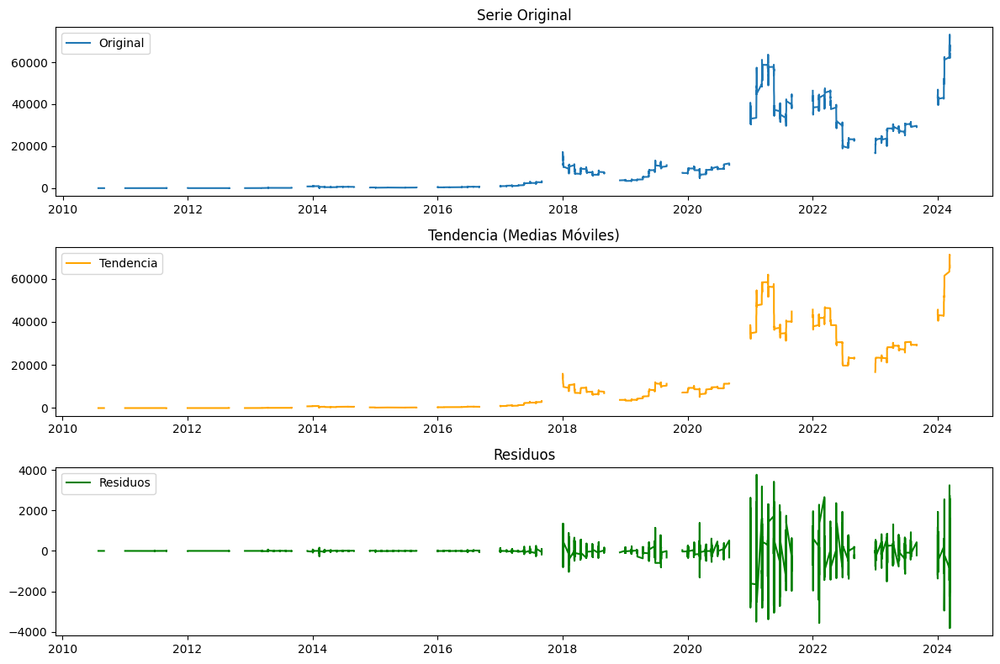
La media movil de 6, captura la mayoría de fluctuaciones y suaviza las pequeñas variaciones, además en el gráfico se residuos muestra que desde el 2021 hasta 2023 hay peridodos que no estan explocados por la tendencia suavizada
from statsmodels.tsa.seasonal import seasonal_decompose
decomposition = seasonal_decompose(bitcoin_data['Price'], model='additive', period=6)
tendencia = decomposition.trend
estacionalidad = decomposition.seasonal
residuos = decomposition.resid
# Graficar los componentes
plt.figure(figsize=(12, 8))
plt.subplot(4, 1, 1)
plt.plot(bitcoin_data['Price'], label='Original')
plt.title('Serie Original')
plt.legend()
plt.subplot(4, 1, 2)
plt.plot(tendencia, label='Tendencia', color='orange')
plt.title('Tendencia (Descomposición Additiva)')
plt.legend()
plt.subplot(4, 1, 3)
plt.plot(estacionalidad, label='Estacionalidad', color='blue')
plt.title('Estacionalidad')
plt.legend()
plt.subplot(4, 1, 4)
plt.plot(residuos, label='Residuos', color='green')
plt.title('Residuos')
plt.legend()
plt.tight_layout()
plt.show()
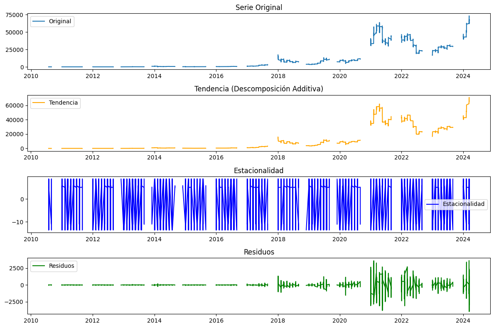
Antes del 2020, se puede observar que el precio es relativamente constante, a partir del 2020 es cuando presenta volatilidad en el precio. El patrón de los datos es repetitivo, lo cuál puede indicar que hay una componente ciclica en lso datos. y en los residuos se puede observar que hay variaciones las cuales no se explicna por la tendencia, ni por la estacionalidad
from statsmodels.stats.diagnostic import acorr_ljungbox
ljung_box_result = acorr_ljungbox(bitcoin_data['Residuos'].dropna(), lags=[10], return_df=True)
print("Prueba de Ljung-Box para los residuos (Medias Móviles):")
print(ljung_box_result)
ljung_box_result_decompose = acorr_ljungbox(residuos.dropna(), lags=[10], return_df=True)
print("\nPrueba de Ljung-Box para los residuos (`seasonal_decompose`):")
print(ljung_box_result_decompose)
Prueba de Ljung-Box para los residuos (Medias Móviles):
lb_stat lb_pvalue
10 538.539676 2.538692e-109
Prueba de Ljung-Box para los residuos (`seasonal_decompose`):
lb_stat lb_pvalue
10 798.173663 5.095812e-165
Se puede observar que hay autocorrelación significativa en los residuos
Parte 2#
Repita el análisis anterior para las series de tiempo de: retorno acumulado diario y volatilidad, para diferentes ventanas. Para esto tenga en cuenta las siguientes definiciones e implemente ma nualmente las funciones que definen cada serie de tiempo
#Calculo de retornos diarios
j = 0
at = []
for j in range(0, len(bitcoin_data['Price']) - 1):
aj = (bitcoin_data['Price'].iloc[j + 1] - bitcoin_data['Price'].iloc[j]) / (bitcoin_data['Price'].iloc[j])
at.append(aj)
at = np.nan_to_num(at)
# Agregar los retornos diarios al DataFrame (ten en cuenta que el primer valor será `None`)
bitcoin_data['Daily_Return'] = [None] + list(at)
# Verificar que los retornos diarios se calcularon correctamente
print(bitcoin_data[['Price', 'Daily_Return']].head(10))
Price Daily_Return
Date
2024-03-12 64037.8 NaN
2024-03-12 63785.5 -0.003940
2024-03-12 65503.8 0.026939
2024-03-12 67854.0 0.035879
2024-03-12 62050.0 -0.085537
2024-03-12 67594.1 0.089349
2024-03-11 68391.2 0.011792
2024-03-11 65314.2 -0.044991
2024-03-11 69463.7 0.063531
2024-03-11 71387.5 0.027695
# Retorno acumulado
def cum_return(at):
cum_ret = np.zeros(len(at))
for j in range(0, len(at)):
if j == 0:
cum_ret[j] = at[j]
else:
cum_ret[j] = at[j] + cum_ret[j - 1]
return cum_ret
ret_acum = cum_return(at)
retorno_acumulado = cum_return(at)
retorno_acumulado_series = pd.Series([None] + list(retorno_acumulado), index=bitcoin_data.index)
retorno_acumulado_series = retorno_acumulado_series.reindex(bitcoin_data.index)
bitcoin_data['Retorno_Acumulado'] = retorno_acumulado_series
print(bitcoin_data[['Daily_Return', 'Retorno_Acumulado']].head(10))
Daily_Return Retorno_Acumulado
Date
2024-03-12 NaN NaN
2024-03-12 -0.003940 -0.003940
2024-03-12 0.026939 0.022999
2024-03-12 0.035879 0.058878
2024-03-12 -0.085537 -0.026659
2024-03-12 0.089349 0.062690
2024-03-11 0.011792 0.074482
2024-03-11 -0.044991 0.029491
2024-03-11 0.063531 0.093023
2024-03-11 0.027695 0.120718
#Volatilidad
def volatility(w, at):
vols = []
for t in range(0, len(at) - w + 1):
sqr = []
r_list = at[t:t + w]
miu = (1 / w) * (sum(r_list))
for r in r_list:
dif = r - miu
sqr.append(dif ** 2)
# Verificar si la varianza es negativa o NaN
var = (1 / (w - 1)) * sum(sqr)
if var < 0 or np.isnan(var) or np.isinf(var):
vol = np.nan
else:
vol = np.sqrt(max(var, 0))
vols.append(vol)
vols = pd.Series(vols)
return vols
# Calcular la volatilidad para ventanas de 7, 14, 21 y 28 días
ventanas = [7, 14, 21, 28]
for w in ventanas:
vol = volatility(w, at)
if len(vol) < len(bitcoin_data):
bitcoin_data[f'Volatilidad_{w}d'] = [None] * (w - 1) + list(vol) + [None] * (len(bitcoin_data) - len(vol) - (w - 1))
else:
bitcoin_data[f'Volatilidad_{w}d'] = [None] * (w - 1) + list(vol)
print(bitcoin_data[['Daily_Return', 'Volatilidad_7d', 'Volatilidad_14d', 'Volatilidad_21d', 'Volatilidad_28d']].head(15))
#w=7, 14, 21, 28
Daily_Return Volatilidad_7d Volatilidad_14d Volatilidad_21d \
Date
2024-03-12 NaN NaN NaN NaN
2024-03-12 -0.003940 NaN NaN NaN
2024-03-12 0.026939 NaN NaN NaN
2024-03-12 0.035879 NaN NaN NaN
2024-03-12 -0.085537 NaN NaN NaN
2024-03-12 0.089349 NaN NaN NaN
2024-03-11 0.011792 0.056814 NaN NaN
2024-03-11 -0.044991 0.060785 NaN NaN
2024-03-11 0.063531 0.060813 NaN NaN
2024-03-11 0.027695 0.060247 NaN NaN
2024-03-11 0.023517 0.046199 NaN NaN
2024-03-11 -0.021845 0.035128 NaN NaN
2024-03-11 0.008799 0.040414 NaN NaN
2024-03-10 -0.043472 0.035415 0.045507 NaN
2024-03-10 -0.008675 0.025191 0.045490 NaN
Volatilidad_28d
Date
2024-03-12 NaN
2024-03-12 NaN
2024-03-12 NaN
2024-03-12 NaN
2024-03-12 NaN
2024-03-12 NaN
2024-03-11 NaN
2024-03-11 NaN
2024-03-11 NaN
2024-03-11 NaN
2024-03-11 NaN
2024-03-11 NaN
2024-03-11 NaN
2024-03-10 NaN
2024-03-10 NaN
Item 2.#
Identifique si existen datos faltantes y realice su imputación usando alguna de las técnicas básicas estudiadas durante el curso.
hay_faltantes = bitcoin_data.isnull().values.any()
print(f"¿Hay valores faltantes? {hay_faltantes}")
¿Hay valores faltantes? True
filas_faltantes = bitcoin_data[bitcoin_data[['Retorno_Acumulado', 'Volatilidad_7d', 'Volatilidad_14d', 'Volatilidad_21d', 'Volatilidad_28d']].isna().any(axis=1)]
print(filas_faltantes)
Price Open High Low Vol. Change % Year \
Date
2024-03-12 64037.8 63785.6 65972.4 63074.9 35110.0 0.40% 2024
2024-03-12 63785.5 65501.5 66633.3 62328.3 72430.0 -2.62% 2024
2024-03-12 65503.8 67860.0 68161.7 64616.1 75260.0 -3.46% 2024
2024-03-12 67854.0 62046.8 68029.5 60850.9 133530.0 9.35% 2024
2024-03-12 62050.0 67594.1 68099.6 61560.6 148080.0 -8.20% 2024
2024-03-12 67594.1 68389.7 68920.1 66601.4 78070.0 -1.17% 2024
2024-03-11 68391.2 65314.2 68857.7 64605.5 66070.0 4.71% 2024
2024-03-11 65314.2 69456.5 70037.0 64971.0 75820.0 -5.97% 2024
2024-03-11 69463.7 71387.1 72398.1 65765.6 148590.0 -2.69% 2024
2024-03-11 71387.5 73066.7 73740.9 68717.2 109430.0 -2.30% 2024
2024-03-11 73066.3 71461.9 73623.5 71338.4 77180.0 2.23% 2024
2024-03-11 71470.2 72099.1 72916.7 68845.6 105090.0 -0.87% 2024
2024-03-11 72099.1 68964.7 72771.5 67452.8 114720.0 4.54% 2024
2024-03-10 68964.8 68360.7 69905.3 68165.0 53490.0 0.88% 2024
2024-03-10 68366.5 68178.5 68576.9 67923.9 30710.0 0.29% 2024
2024-03-10 68172.0 66854.4 69904.0 66170.7 112670.0 1.97% 2024
2024-03-10 66855.3 66074.6 67985.5 65602.6 77470.0 1.17% 2024
2024-03-10 66080.4 63794.7 67604.9 62848.7 117910.0 3.59% 2024
2024-03-10 63792.6 68273.1 69063.1 60138.2 207600.0 -6.56% 2024
2024-03-10 68270.1 63135.8 68495.1 62746.8 130860.0 8.13% 2024
2024-03-09 63135.8 61955.6 63227.3 61399.4 38010.0 1.84% 2024
2024-03-09 61994.5 62397.7 62446.3 61621.9 33800.0 -0.65% 2024
2024-03-09 62397.7 61157.3 63147.3 60790.9 74960.0 2.01% 2024
2024-02-09 61169.3 62467.1 63653.4 60512.5 119290.0 -2.08% 2024
2024-02-09 62467.6 57048.7 63915.3 56704.9 173640.0 9.48% 2024
2024-02-09 57056.2 54491.1 57555.2 54464.0 100480.0 4.70% 2024
2024-02-09 54495.1 51722.7 54899.1 50925.2 78050.0 5.36% 2024
2010-07-28 0.1 0.0 0.1 0.1 80.0 0.00% 2010
Month Week Price_diff M2 M_2_t_t1 M_4 \
Date
2024-03-12 3 12 -3174.1 NaN 63911.65 0.000
2024-03-12 3 12 -252.3 63911.65 64644.65 0.000
2024-03-12 3 12 1718.3 64644.65 66678.90 0.000
2024-03-12 3 12 2350.2 66678.90 64952.00 65295.275
2024-03-12 3 12 -5804.0 64952.00 64822.05 64798.325
2024-03-12 3 12 5544.1 64822.05 67992.65 65750.475
2024-03-11 3 11 797.1 67992.65 66852.70 66472.325
2024-03-11 3 11 -3077.0 66852.70 67388.95 65837.375
2024-03-11 3 11 4149.5 67388.95 70425.60 67690.800
2024-03-11 3 11 1923.8 70425.60 72226.90 68639.150
2024-03-11 3 11 1678.8 72226.90 72268.25 69807.925
2024-03-11 3 11 -1596.1 72268.25 71784.65 71346.925
2024-03-11 3 11 628.9 71784.65 70531.95 72005.775
2024-03-10 3 10 -3134.3 70531.95 68665.65 71400.100
2024-03-10 3 10 -598.3 68665.65 68269.25 70225.150
2024-03-10 3 10 -194.5 68269.25 67513.65 69400.600
2024-03-10 3 10 -1316.7 67513.65 66467.85 68089.650
2024-03-10 3 10 -774.9 66467.85 64936.50 67368.550
2024-03-10 3 10 -2287.8 64936.50 66031.35 66225.075
2024-03-10 3 10 4477.5 66031.35 65702.95 66249.600
2024-03-09 3 9 -5134.3 65702.95 62565.15 65319.725
2024-03-09 3 9 -1141.3 62565.15 62196.10 64298.250
2024-03-09 3 9 403.2 62196.10 61783.50 63949.525
2024-02-09 2 9 -1228.4 61783.50 61818.45 62174.325
2024-02-09 2 9 1298.3 61818.45 59761.90 62007.275
2024-02-09 2 9 -5411.4 59761.90 55775.65 60772.700
2024-02-09 2 9 -2561.1 55775.65 53108.90 58797.050
2010-07-28 7 28 0.0 0.10 NaN 0.100
M_4_t_t1 M_3 M_3_t-1_t+1 Detrended_M2 Detrended_M3 \
Date
2024-03-12 0.0000 0.000000 0.0 NaN 64037.800000
2024-03-12 0.0000 0.000000 0.0 -126.15 63785.500000
2024-03-12 0.0000 64442.366667 64037.8 859.15 1061.433333
2024-03-12 65566.3250 65714.433333 63785.5 1175.10 2139.566667
2024-03-12 66244.5625 65135.933333 65503.8 -2902.00 -3085.933333
2024-03-12 67194.8125 65832.700000 67854.0 2772.05 1761.400000
2024-03-11 68140.1250 66011.766667 62050.0 398.55 2379.433333
2024-03-11 68592.1500 67099.833333 67594.1 -1538.50 -1785.633333
2024-03-11 69848.2875 67723.033333 68391.2 2074.75 1740.666667
2024-03-11 70019.6250 68721.800000 65314.2 961.90 2665.700000
2024-03-11 70016.5375 71305.833333 69463.7 839.40 1760.466667
2024-03-11 70373.7625 71974.666667 71387.5 -798.05 -504.466667
2024-03-11 70047.7125 72211.866667 73066.3 314.45 -112.766667
2024-03-10 69384.3250 70844.700000 71470.2 -1567.15 -1879.900000
2024-03-10 68225.1125 69810.133333 72099.1 -299.15 -1443.633333
2024-03-10 67825.1000 68501.100000 68964.8 -97.25 -329.100000
2024-03-10 66704.6875 67797.933333 68366.5 -658.35 -942.633333
2024-03-10 65833.4000 67035.900000 68172.0 -387.45 -955.500000
2024-03-10 65087.3000 65576.100000 66855.3 -1143.90 -1783.500000
2024-03-10 64211.9625 66047.700000 66080.4 2238.75 2222.400000
2024-03-09 63663.5000 65066.166667 63792.6 -2567.15 -1930.366667
2024-03-09 62535.4750 64466.800000 68270.1 -570.65 -2472.300000
2024-03-09 61373.2875 62509.333333 63135.8 201.60 -111.633333
2024-02-09 59304.8625 61853.833333 61994.5 -614.20 -684.533333
2024-02-09 57859.3375 62011.533333 62397.7 649.15 456.066667
2024-02-09 56452.5875 60231.033333 61169.3 -2705.70 -3174.833333
2024-02-09 55067.9250 58006.300000 62467.6 -1280.55 -3511.200000
2010-07-28 0.0000 0.100000 0.1 0.00 0.000000
Detrended_M4 Detrended_M2_special Detrended_M3_special \
Date
2024-03-12 64037.800 126.15 64037.8
2024-03-12 63785.500 -859.15 63785.5
2024-03-12 65503.800 -1175.10 1466.0
2024-03-12 2558.725 2902.00 4068.5
2024-03-12 -2748.325 -2772.05 -3453.8
2024-03-12 1843.625 -398.55 -259.9
2024-03-11 1918.875 1538.50 6341.2
2024-03-11 -523.175 -2074.75 -2279.9
2024-03-11 1772.900 -961.90 1072.5
2024-03-11 2748.350 -839.40 6073.3
2024-03-11 3258.375 798.05 3602.6
2024-03-11 123.275 -314.45 82.7
2024-03-11 93.325 1567.15 -967.2
2024-03-10 -2435.300 299.15 -2505.4
2024-03-10 -1858.650 97.25 -3732.6
2024-03-10 -1228.600 658.35 -792.8
2024-03-10 -1234.350 387.45 -1511.2
2024-03-10 -1288.150 1143.90 -2091.6
2024-03-10 -2432.475 -2238.75 -3062.7
2024-03-10 2020.500 2567.15 2189.7
2024-03-09 -2183.925 570.65 -656.8
2024-03-09 -2303.750 -201.60 -6275.6
2024-03-09 -1551.825 614.20 -738.1
2024-02-09 -1005.025 -649.15 -825.2
2024-02-09 460.325 2705.70 69.9
2024-02-09 -3716.500 1280.55 -4113.1
2024-02-09 -4301.950 1386.20 -7972.5
2010-07-28 0.000 NaN 0.0
Detrended_M4_special Tendencia Residuos Daily_Return \
Date
2024-03-12 64037.8000 NaN NaN NaN
2024-03-12 63785.5000 NaN NaN -0.003940
2024-03-12 65503.8000 NaN NaN 0.026939
2024-03-12 2287.6750 65137.533333 2716.466667 0.035879
2024-03-12 -4194.5625 65863.100000 -3813.100000 -0.085537
2024-03-12 399.2875 66117.883333 1476.216667 0.089349
2024-03-11 251.0750 66777.866667 1613.333333 0.011792
2024-03-11 -3277.9500 67366.783333 -2052.583333 -0.044991
2024-03-11 -384.5875 69202.833333 260.866667 0.063531
2024-03-11 1367.8750 69848.850000 1538.650000 0.027695
2024-03-11 3049.7625 70466.833333 2599.466667 0.023517
2024-03-11 1096.4375 71075.266667 394.933333 -0.021845
2024-03-11 2051.3875 70892.400000 1206.700000 0.008799
2024-03-10 -419.5250 70356.483333 -1391.683333 -0.043472
2024-03-10 141.3875 69321.316667 -954.816667 -0.008675
2024-03-10 346.9000 68423.016667 -251.016667 -0.002845
2024-03-10 150.6125 67038.600000 -183.300000 -0.019314
2024-03-10 247.0000 66922.816667 -842.416667 -0.011591
2024-03-10 -1294.7000 66051.033333 -2258.433333 -0.034621
2024-03-10 4058.1375 65021.450000 3248.650000 0.070188
2024-03-09 -527.7000 64278.516667 -1142.716667 -0.075206
2024-03-09 -540.9750 63460.000000 -1465.500000 -0.018077
2024-03-09 1024.4125 63239.166667 -841.466667 0.006504
2024-02-09 1864.4375 61370.183333 -200.883333 -0.019687
2024-02-09 4608.2625 59930.066667 2537.533333 0.021225
2024-02-09 603.6125 58218.100000 -1161.900000 -0.086627
2024-02-09 -572.8250 56413.750000 -1918.650000 -0.044887
2010-07-28 0.1000 NaN NaN 0.000000
Retorno_Acumulado Volatilidad_7d Volatilidad_14d \
Date
2024-03-12 NaN NaN NaN
2024-03-12 -0.003940 NaN NaN
2024-03-12 0.022999 NaN NaN
2024-03-12 0.058878 NaN NaN
2024-03-12 -0.026659 NaN NaN
2024-03-12 0.062690 NaN NaN
2024-03-11 0.074482 0.056814 NaN
2024-03-11 0.029491 0.060785 NaN
2024-03-11 0.093023 0.060813 NaN
2024-03-11 0.120718 0.060247 NaN
2024-03-11 0.144234 0.046199 NaN
2024-03-11 0.122390 0.035128 NaN
2024-03-11 0.131189 0.040414 NaN
2024-03-10 0.087717 0.035415 0.045507
2024-03-10 0.079042 0.025191 0.045490
2024-03-10 0.076197 0.021877 0.045510
2024-03-10 0.056882 0.016516 0.044585
2024-03-10 0.045292 0.018137 0.038866
2024-03-10 0.010670 0.037067 0.035795
2024-03-10 0.080859 0.043607 0.041005
2024-03-09 0.005653 0.043643 0.039588
2024-03-09 -0.012424 0.044148 0.034869
2024-03-09 -0.005920 0.044159 0.033508
2024-02-09 -0.025607 0.045890 0.033335
2024-02-09 -0.004382 0.054493 0.039024
2024-02-09 -0.091009 0.040146 0.039118
2024-02-09 -0.135897 0.036572 0.039521
2010-07-28 -4.275753 NaN NaN
Volatilidad_21d Volatilidad_28d
Date
2024-03-12 NaN NaN
2024-03-12 NaN NaN
2024-03-12 NaN NaN
2024-03-12 NaN NaN
2024-03-12 NaN NaN
2024-03-12 NaN NaN
2024-03-11 NaN NaN
2024-03-11 NaN NaN
2024-03-11 NaN NaN
2024-03-11 NaN NaN
2024-03-11 NaN NaN
2024-03-11 NaN NaN
2024-03-11 NaN NaN
2024-03-10 NaN NaN
2024-03-10 NaN NaN
2024-03-10 NaN NaN
2024-03-10 NaN NaN
2024-03-10 NaN NaN
2024-03-10 NaN NaN
2024-03-10 NaN NaN
2024-03-09 0.044712 NaN
2024-03-09 0.044731 NaN
2024-03-09 0.044479 NaN
2024-02-09 0.043961 NaN
2024-02-09 0.044064 NaN
2024-02-09 0.039487 NaN
2024-02-09 0.040163 NaN
2010-07-28 NaN NaN
filas_faltantes = bitcoin_data[['Retorno_Acumulado', 'Volatilidad_7d', 'Volatilidad_14d', 'Volatilidad_21d', 'Volatilidad_28d']].isna().sum()
print(filas_faltantes)
Retorno_Acumulado 1
Volatilidad_7d 7
Volatilidad_14d 14
Volatilidad_21d 21
Volatilidad_28d 28
dtype: int64
Hay 1 dato faltante del retorno acumulado, 7 de la volatilidad con w=7,14 de la volatilidad con w=14,21 de la volatilidad con w=21,28 de la volatilidad con w=28
pd.set_option('display.max_columns', None)
print(filas_faltantes)
Retorno_Acumulado 1
Volatilidad_7d 7
Volatilidad_14d 14
Volatilidad_21d 21
Volatilidad_28d 28
dtype: int64
print(bitcoin_data)
Price Open High Low Vol. Change % Year \
Date
2024-03-12 64037.8 63785.6 65972.4 63074.9 35110.0 0.40% 2024
2024-03-12 63785.5 65501.5 66633.3 62328.3 72430.0 -2.62% 2024
2024-03-12 65503.8 67860.0 68161.7 64616.1 75260.0 -3.46% 2024
2024-03-12 67854.0 62046.8 68029.5 60850.9 133530.0 9.35% 2024
2024-03-12 62050.0 67594.1 68099.6 61560.6 148080.0 -8.20% 2024
... ... ... ... ... ... ... ...
2010-07-29 0.1 0.1 0.1 0.1 2160.0 0.00% 2010
2010-07-29 0.1 0.1 0.1 0.1 580.0 0.00% 2010
2010-07-29 0.1 0.1 0.1 0.1 260.0 0.00% 2010
2010-07-29 0.1 0.1 0.1 0.1 570.0 0.00% 2010
2010-07-28 0.1 0.0 0.1 0.1 80.0 0.00% 2010
Month Week Price_diff M2 M_2_t_t1 M_4 \
Date
2024-03-12 3 12 -3174.1 NaN 63911.65 0.000
2024-03-12 3 12 -252.3 63911.65 64644.65 0.000
2024-03-12 3 12 1718.3 64644.65 66678.90 0.000
2024-03-12 3 12 2350.2 66678.90 64952.00 65295.275
2024-03-12 3 12 -5804.0 64952.00 64822.05 64798.325
... ... ... ... ... ... ...
2010-07-29 7 29 0.0 0.10 0.10 0.100
2010-07-29 7 29 0.0 0.10 0.10 0.100
2010-07-29 7 29 0.0 0.10 0.10 0.100
2010-07-29 7 29 0.0 0.10 0.10 0.100
2010-07-28 7 28 0.0 0.10 NaN 0.100
M_4_t_t1 M_3 M_3_t-1_t+1 Detrended_M2 Detrended_M3 \
Date
2024-03-12 0.0000 0.000000 0.0 NaN 64037.800000
2024-03-12 0.0000 0.000000 0.0 -126.15 63785.500000
2024-03-12 0.0000 64442.366667 64037.8 859.15 1061.433333
2024-03-12 65566.3250 65714.433333 63785.5 1175.10 2139.566667
2024-03-12 66244.5625 65135.933333 65503.8 -2902.00 -3085.933333
... ... ... ... ... ...
2010-07-29 0.1000 0.100000 0.1 0.00 0.000000
2010-07-29 0.0000 0.100000 0.1 0.00 0.000000
2010-07-29 0.0000 0.100000 0.1 0.00 0.000000
2010-07-29 0.0000 0.100000 0.1 0.00 0.000000
2010-07-28 0.0000 0.100000 0.1 0.00 0.000000
Detrended_M4 Detrended_M2_special Detrended_M3_special \
Date
2024-03-12 64037.800 126.15 64037.8
2024-03-12 63785.500 -859.15 63785.5
2024-03-12 65503.800 -1175.10 1466.0
2024-03-12 2558.725 2902.00 4068.5
2024-03-12 -2748.325 -2772.05 -3453.8
... ... ... ...
2010-07-29 0.000 0.00 0.0
2010-07-29 0.000 0.00 0.0
2010-07-29 0.000 0.00 0.0
2010-07-29 0.000 0.00 0.0
2010-07-28 0.000 NaN 0.0
Detrended_M4_special Tendencia Residuos Daily_Return \
Date
2024-03-12 64037.8000 NaN NaN NaN
2024-03-12 63785.5000 NaN NaN -0.003940
2024-03-12 65503.8000 NaN NaN 0.026939
2024-03-12 2287.6750 65137.533333 2716.466667 0.035879
2024-03-12 -4194.5625 65863.100000 -3813.100000 -0.085537
... ... ... ... ...
2010-07-29 0.0000 0.100000 0.000000 0.000000
2010-07-29 0.1000 0.100000 0.000000 0.000000
2010-07-29 0.1000 0.100000 0.000000 0.000000
2010-07-29 0.1000 NaN NaN 0.000000
2010-07-28 0.1000 NaN NaN 0.000000
Retorno_Acumulado Volatilidad_7d Volatilidad_14d \
Date
2024-03-12 NaN NaN NaN
2024-03-12 -0.003940 NaN NaN
2024-03-12 0.022999 NaN NaN
2024-03-12 0.058878 NaN NaN
2024-03-12 -0.026659 NaN NaN
... ... ... ...
2010-07-29 -4.275753 0.0 0.0
2010-07-29 -4.275753 0.0 0.0
2010-07-29 -4.275753 0.0 0.0
2010-07-29 -4.275753 0.0 0.0
2010-07-28 -4.275753 NaN NaN
Volatilidad_21d Volatilidad_28d
Date
2024-03-12 NaN NaN
2024-03-12 NaN NaN
2024-03-12 NaN NaN
2024-03-12 NaN NaN
2024-03-12 NaN NaN
... ... ...
2010-07-29 0.0 0.0
2010-07-29 0.0 0.0
2010-07-29 0.0 0.0
2010-07-29 0.0 0.0
2010-07-28 NaN NaN
[4998 rows x 30 columns]
from IPython.display import display
display(filas_faltantes)
Retorno_Acumulado 1
Volatilidad_7d 7
Volatilidad_14d 14
Volatilidad_21d 21
Volatilidad_28d 28
dtype: int64
print(bitcoin_data.index.duplicated().sum())
4493
No hay datos duplicados
bitcoin_data.columns = bitcoin_data.columns.str.strip()
bitcoin_data.reset_index(inplace=True)
import matplotlib.pyplot as plt
# Crear la figura y el primer eje (para las volatilidades)
fig, ax1 = plt.subplots(figsize=(12, 6))
# Graficar las series de volatilidad en el eje primario
ax1.plot(bitcoin_data['Date'], bitcoin_data['Volatilidad_7d'], label='Volatilidad 7d', linestyle='-', marker='x', alpha=0.6)
ax1.plot(bitcoin_data['Date'], bitcoin_data['Volatilidad_14d'], label='Volatilidad 14d', linestyle='-', marker='s', alpha=0.6)
ax1.plot(bitcoin_data['Date'], bitcoin_data['Volatilidad_21d'], label='Volatilidad 21d', linestyle='-', marker='^', alpha=0.6)
ax1.plot(bitcoin_data['Date'], bitcoin_data['Volatilidad_28d'], label='Volatilidad 28d', linestyle='-', marker='d', alpha=0.6)
# Configuración del eje primario
ax1.set_xlabel('Fecha')
ax1.set_ylabel('Volatilidad')
ax1.grid(True)
ax1.legend(loc='upper left')
ax1.tick_params(axis='x', rotation=45)
# Crear un segundo eje y para el Retorno Acumulado
ax2 = ax1.twinx()
ax2.plot(bitcoin_data['Date'], bitcoin_data['Retorno_Acumulado'], label='Retorno Acumulado', color='purple', linestyle='-', marker='o', alpha=0.6)
# Configuración del eje secundario
ax2.set_ylabel('Retorno Acumulado')
ax2.legend(loc='upper right')
# Configuración del título y ajuste del diseño
plt.title('Retorno acumulado y volatilidad diaria')
plt.tight_layout()
plt.show()
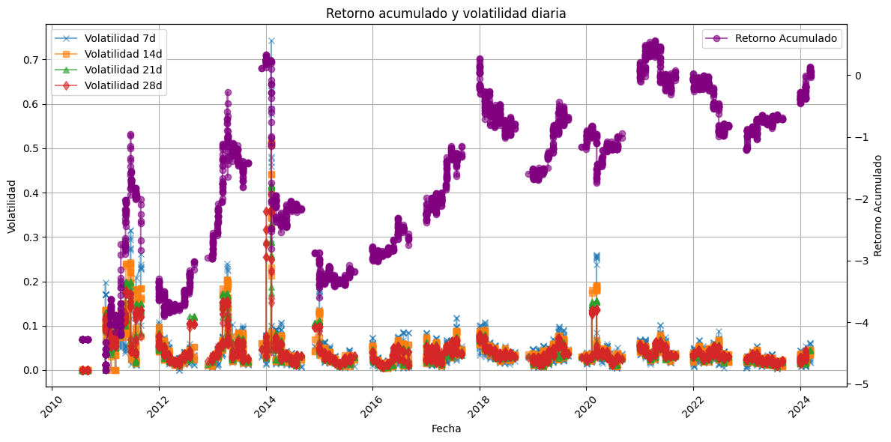
El retorno acumualdo tiene un aumento de manera progresiva La volatilidad en la mayoria del tiempo tiende a cero
bitcoin_data[['Retorno_Acumulado', 'Volatilidad_7d', 'Volatilidad_14d', 'Volatilidad_21d', 'Volatilidad_28d']] = bitcoin_data[['Retorno_Acumulado', 'Volatilidad_7d', 'Volatilidad_14d', 'Volatilidad_21d', 'Volatilidad_28d']].fillna(method='bfill')
C:\Users\FBA\AppData\Local\Temp\ipykernel_15160\2375788008.py:1: FutureWarning: DataFrame.fillna with 'method' is deprecated and will raise in a future version. Use obj.ffill() or obj.bfill() instead.
bitcoin_data[['Retorno_Acumulado', 'Volatilidad_7d', 'Volatilidad_14d', 'Volatilidad_21d', 'Volatilidad_28d']] = bitcoin_data[['Retorno_Acumulado', 'Volatilidad_7d', 'Volatilidad_14d', 'Volatilidad_21d', 'Volatilidad_28d']].fillna(method='bfill')
Para realizar la inputación de datos faltantes se utilizo el método Backfill debido a que en el caso del bitcoin, en especial al inicio de la serie donde se ubican faltantes presenta una estabilidad inicial, ya que el Bitcoin cuando empezó tenian un comportamiento estable
datos_faltantes = bitcoin_data[['Retorno_Acumulado', 'Volatilidad_7d', 'Volatilidad_14d', 'Volatilidad_21d', 'Volatilidad_28d']].isna().sum()
print(datos_faltantes)
Retorno_Acumulado 0
Volatilidad_7d 1
Volatilidad_14d 1
Volatilidad_21d 1
Volatilidad_28d 1
dtype: int64
Despues de realizar el método de input “Backfill”, no se presentan datos faltantes
import matplotlib.pyplot as plt
# Crear la figura y el primer eje (para volatilidad)
fig, ax1 = plt.subplots(figsize=(12, 6))
# Graficar las series de volatilidad en el eje primario
ax1.plot(bitcoin_data['Date'], bitcoin_data['Volatilidad_7d'], label='Volatilidad 7d', linestyle='-', marker='x', alpha=0.6)
ax1.plot(bitcoin_data['Date'], bitcoin_data['Volatilidad_14d'], label='Volatilidad 14d', linestyle='-', marker='s', alpha=0.6)
ax1.plot(bitcoin_data['Date'], bitcoin_data['Volatilidad_21d'], label='Volatilidad 21d', linestyle='-', marker='^', alpha=0.6)
ax1.plot(bitcoin_data['Date'], bitcoin_data['Volatilidad_28d'], label='Volatilidad 28d', linestyle='-', marker='d', alpha=0.6)
# Configuración del eje primario
ax1.set_xlabel('Fecha')
ax1.set_ylabel('Volatilidad')
ax1.grid(True)
ax1.legend(loc='upper left')
ax1.tick_params(axis='x', rotation=45)
# Crear un segundo eje y para el Retorno Acumulado
ax2 = ax1.twinx()
ax2.plot(bitcoin_data['Date'], bitcoin_data['Retorno_Acumulado'], label='Retorno Acumulado', color='purple', linestyle='-', marker='o', alpha=0.6)
# Configuración del eje secundario
ax2.set_ylabel('Retorno Acumulado')
ax2.legend(loc='upper right')
# Configuración del título y ajuste del diseño
plt.title('Retorno diario y volatilidad sin datos faltantes')
plt.tight_layout()
plt.show()
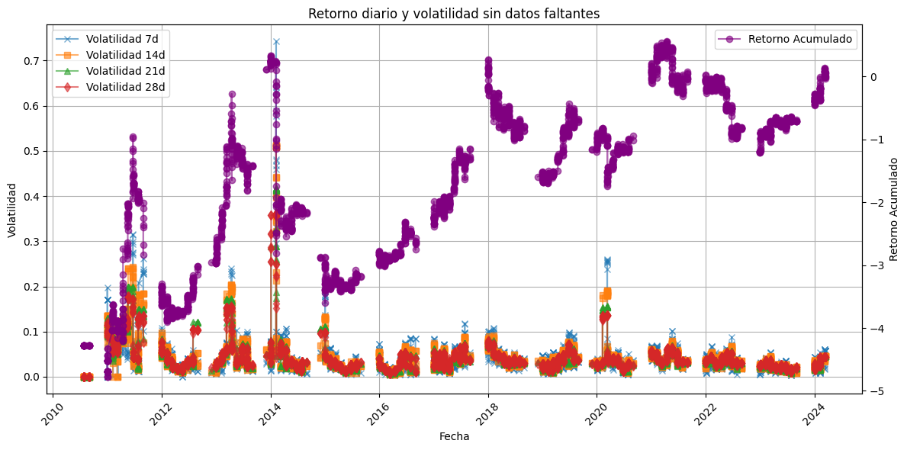
Se puede observra que el retorno acumualdo tiene un comportamiento ascendente, con peridoos de estabilidad hasta 2011, después de esto se obsrvan incrementos significativos En la volatilidad se puede observar que al princpio tiende a ser baja durante gran parte del tiempo y presenta algunos picos, los cuáles pueden ser dados por eventos ocurridos en el mercado.
Item 3.#
Realice también un histograma con Plotly para representar el volumen tradeado diariamente (Volume)
import matplotlib.pyplot as plt
# Asegúrate de reemplazar 'bitcoin_data' por el nombre de tu DataFrame
plt.figure(figsize=(10, 6))
plt.hist(bitcoin_data['Retorno_Acumulado'], bins=30, color='skyblue', edgecolor='black')
plt.title('Histograma del Retorno Acumulado')
plt.xlabel('Retorno Acumulado')
plt.ylabel('Frecuencia')
plt.grid(True)
plt.show()
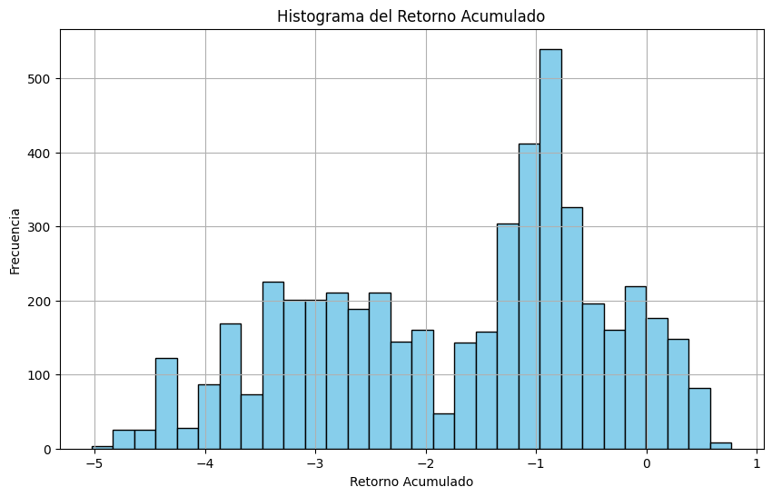
En el histograma del retorno acumulado se puede observar, que la mayoría de los datos acumulados están en el extremo derecho y pocos valores se encunetran distribuidos en la parte izquierda, es decir que el Bitcoin muestra que la mayor parte del tiempo del retorno fue positivo.
import matplotlib.pyplot as plt
# Configuración del tamaño de la figura
fig, axs = plt.subplots(2, 2, figsize=(12, 8))
# Histograma de volatilidad para 7 días
axs[0, 0].hist(bitcoin_data['Volatilidad_7d'], bins=30, color='skyblue', edgecolor='black')
axs[0, 0].set_title('Volatilidad 7d')
axs[0, 0].set_xlabel('Volatilidad')
axs[0, 0].set_ylabel('Frecuencia')
# Histograma de volatilidad para 14 días
axs[0, 1].hist(bitcoin_data['Volatilidad_14d'], bins=30, color='lightcoral', edgecolor='black')
axs[0, 1].set_title('Volatilidad 14d')
axs[0, 1].set_xlabel('Volatilidad')
axs[0, 1].set_ylabel('Frecuencia')
# Histograma de volatilidad para 21 días
axs[1, 0].hist(bitcoin_data['Volatilidad_21d'], bins=30, color='lightgreen', edgecolor='black')
axs[1, 0].set_title('Volatilidad 21d')
axs[1, 0].set_xlabel('Volatilidad')
axs[1, 0].set_ylabel('Frecuencia')
# Histograma de volatilidad para 28 días
axs[1, 1].hist(bitcoin_data['Volatilidad_28d'], bins=30, color='gold', edgecolor='black')
axs[1, 1].set_title('Volatilidad 28d')
axs[1, 1].set_xlabel('Volatilidad')
axs[1, 1].set_ylabel('Frecuencia')
# Título general y ajustes finales
fig.suptitle("Histogramas de Volatilidad para W=7,14,21,28")
plt.tight_layout(rect=[0, 0.03, 1, 0.95])
plt.show()
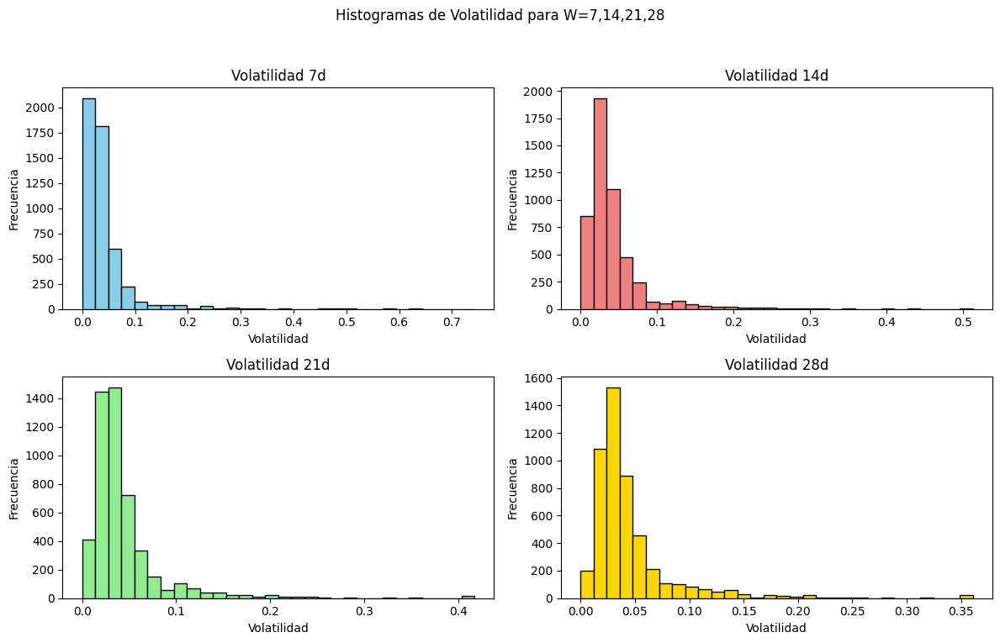
EN los histogramas presentados para la volatilidad en 7,14,21,28 la distribución es segada hacía la derecha y donde la mayoría de datos están concentardos cerca de 0. Además se puede observar que los rangos de volatilidd son pequeños, es decir que el mercado del bitcoin ha tenido peridos constantes donde la fluctuaciones fueron pequeñas. Además se observa que a medida que la ventana aumenta, la distribución se mantiene similar, es decir, que en las ventanas mas grandes/largas, es más probable ver fluctiaciones moderadas, que cuando se mira la volatilidad de los eventos pequeños.
Item 4.#
Realice graficos de subseries considerando agrupación por semana, mes y año. Utilice graficos de series de tiempo y boxplots para analizar estas subseries.
bitcoin_data.set_index('Date', inplace=True)
bitcoin_data.index = pd.to_datetime(bitcoin_data.index)
volatilidad_7_mes_mean = bitcoin_data['Volatilidad_7d'].resample('ME').mean()
volatilidad_14_mes_mean = bitcoin_data['Volatilidad_14d'].resample('ME').mean()
volatilidad_21_mes_mean = bitcoin_data['Volatilidad_21d'].resample('ME').mean()
volatilidad_28_mes_mean = bitcoin_data['Volatilidad_28d'].resample('ME').mean()
retorno_acumulado_mes_mean = bitcoin_data['Retorno_Acumulado'].resample('ME').mean()
volatilidad_7_sem_mean = bitcoin_data['Volatilidad_7d'].resample('W').mean()
volatilidad_14_sem_mean = bitcoin_data['Volatilidad_14d'].resample('W').mean()
volatilidad_21_sem_mean = bitcoin_data['Volatilidad_21d'].resample('W').mean()
volatilidad_28_sem_mean = bitcoin_data['Volatilidad_28d'].resample('W').mean()
retorno_acumulado_sem_mean = bitcoin_data['Retorno_Acumulado'].resample('W').mean()
volatilidad_7_año_mean = bitcoin_data['Volatilidad_7d'].resample('YE').mean()
volatilidad_14_año_mean = bitcoin_data['Volatilidad_14d'].resample('YE').mean()
volatilidad_21_año_mean = bitcoin_data['Volatilidad_21d'].resample('YE').mean()
volatilidad_28_año_mean = bitcoin_data['Volatilidad_28d'].resample('YE').mean()
retorno_acumulado_año_mean = bitcoin_data['Retorno_Acumulado'].resample('YE').mean()
import matplotlib.pyplot as plt
# Diccionario de series agrupadas
series_agrupadas = {
'Mensual': {
'Volatilidad 7d': volatilidad_7_mes_mean,
'Volatilidad 14d': volatilidad_14_mes_mean,
'Volatilidad 21d': volatilidad_21_mes_mean,
'Volatilidad 28d': volatilidad_28_mes_mean,
'Retorno Acumulado': retorno_acumulado_mes_mean
},
'Semanal': {
'Volatilidad 7d': volatilidad_7_sem_mean,
'Volatilidad 14d': volatilidad_14_sem_mean,
'Volatilidad 21d': volatilidad_21_sem_mean,
'Volatilidad 28d': volatilidad_28_sem_mean,
'Retorno Acumulado': retorno_acumulado_sem_mean
},
'Anual': {
'Volatilidad 7d': volatilidad_7_año_mean,
'Volatilidad 14d': volatilidad_14_año_mean,
'Volatilidad 21d': volatilidad_21_año_mean,
'Volatilidad 28d': volatilidad_28_año_mean,
'Retorno Acumulado': retorno_acumulado_año_mean
}
}
for agrupacion, series in series_agrupadas.items():
fig, ax1 = plt.subplots(figsize=(10, 6))
# Graficar series de volatilidad en el eje primario
for nombre_serie, datos in series.items():
if nombre_serie != 'Retorno Acumulado':
ax1.plot(datos.index, datos, label=nombre_serie)
ax1.set_title(f'Series de Tiempo Agrupadas {agrupacion}')
ax1.set_xlabel('Fecha')
ax1.set_ylabel('Volatilidad (mean)')
ax1.legend(loc='upper left')
ax1.grid(True)
# Graficar el Retorno Acumulado en el eje secundario
ax2 = ax1.twinx()
ax2.plot(series['Retorno Acumulado'].index, series['Retorno Acumulado'], label='Retorno Acumulado', color='purple')
ax2.set_ylabel('Retorno Acumulado (mean)')
ax2.legend(loc='upper right')
plt.show()
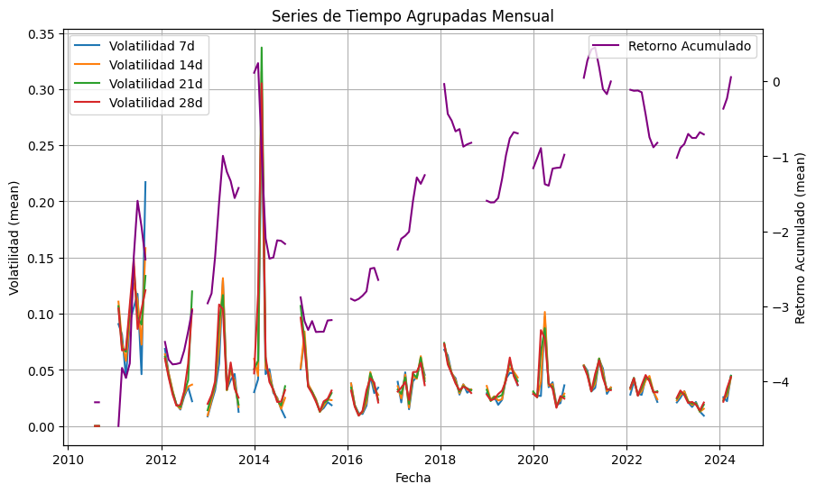
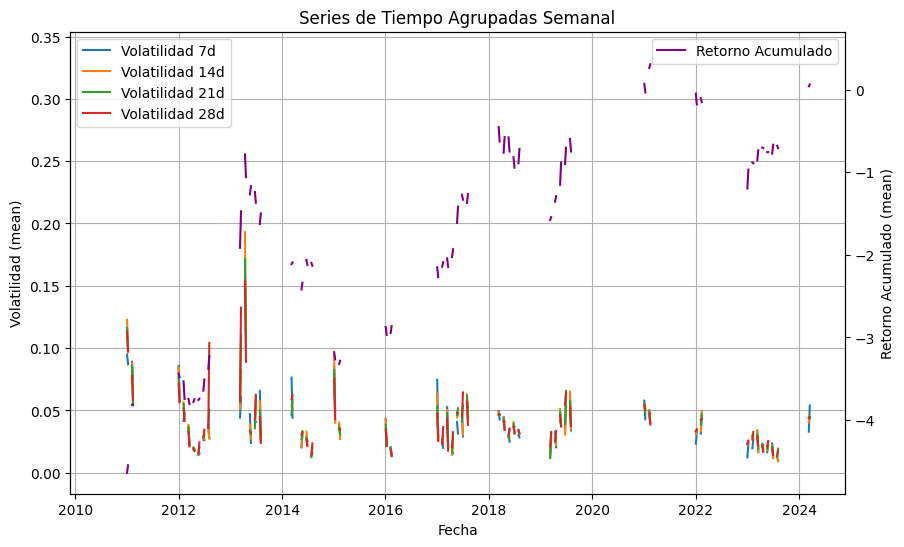
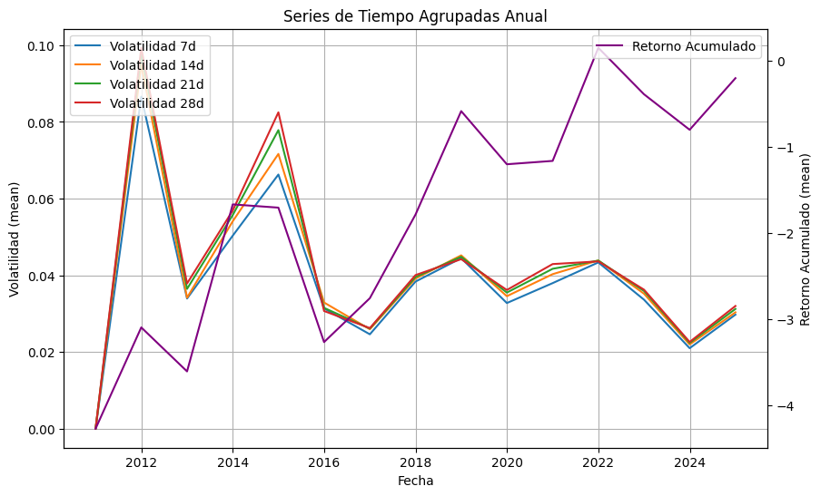
-Retorno acumulado y valatilidad mensual=En el retorno acumulado se puede observar un incremento de forma gradual desde el 2011, hasta el 2017, además presenta unos picos al rededor del 2013 hasta el 2016. En la voltidad se puede observar valores planos, por lo cuál se puede decir el la volatilidad del Bitcoin es estable
-Retorno acumulado y valatilidad semanal= el retorno acumulado semanal tiene un comportamiento similar al mensual, con la diferencia que la semanal tiene un poco más de detalle. En cambio la volatilidad se mantiene bajas durante la gran mayoría de periodos
-Retorno acumulado y valatilidad anual= en el retorno acumulado se muestra un crecimiento sostenido, donde tuvo su crecimeinto mas notable entre el 2012 y el 2014. Además se puede observar que la voaltilidad en las diferentes ventanas es plana, lo que queire decir es que esta se suaviza cuando se calculan los promedios mensuales.
Los gráficos mensual y semanal tienen una visión más al detalle, en cambio en el anual se ve logra observar la tendencia, pero sin tanto detalle
import numpy as np
import matplotlib.pyplot as plt
# Asegurarse de que no haya NaN o valores infinitos en cada lista
volatilidad_7_mes_mean = [x for x in volatilidad_7_mes_mean if not (np.isnan(x) or np.isinf(x))]
volatilidad_14_mes_mean = [x for x in volatilidad_14_mes_mean if not (np.isnan(x) or np.isinf(x))]
volatilidad_21_mes_mean = [x for x in volatilidad_21_mes_mean if not (np.isnan(x) or np.isinf(x))]
volatilidad_28_mes_mean = [x for x in volatilidad_28_mes_mean if not (np.isnan(x) or np.isinf(x))]
retorno_acumulado_mes_mean = [x for x in retorno_acumulado_mes_mean if not (np.isnan(x) or np.isinf(x))]
# Datos para volatilidades y nombres
volatilidades = [volatilidad_7_mes_mean, volatilidad_14_mes_mean, volatilidad_21_mes_mean, volatilidad_28_mes_mean]
nombres_volatilidades = ['Volatilidad 7d (Mensual)', 'Volatilidad 14d (Mensual)', 'Volatilidad 21d (Mensual)', 'Volatilidad 28d (Mensual)']
# Crear la figura y el primer eje
fig, ax1 = plt.subplots(figsize=(10, 6))
# Gráfico de cajas para las series de volatilidad en el eje primario
box1 = ax1.boxplot(volatilidades, positions=range(len(volatilidades)), patch_artist=True,
boxprops=dict(facecolor="skyblue", color="blue"))
ax1.set_xticks(range(len(nombres_volatilidades) + 1)) # +1 para incluir la posición del retorno acumulado
ax1.set_xticklabels(nombres_volatilidades + ['Retorno Acumulado (Mensual)'], rotation=45, ha='right')
ax1.set_ylabel('Volatilidad')
ax1.set_title('Box Plots de Volatilidad y Retorno Acumulado mensual')
ax1.grid(True)
# Crear un eje secundario para el Retorno Acumulado y graficarlo como un boxplot en una posición separada
ax2 = ax1.twinx()
box2 = ax2.boxplot([retorno_acumulado_mes_mean], positions=[len(volatilidades)], patch_artist=True,
boxprops=dict(facecolor="lightcoral", color="red"))
ax2.set_ylabel('Retorno Acumulado')
plt.tight_layout()
plt.show()
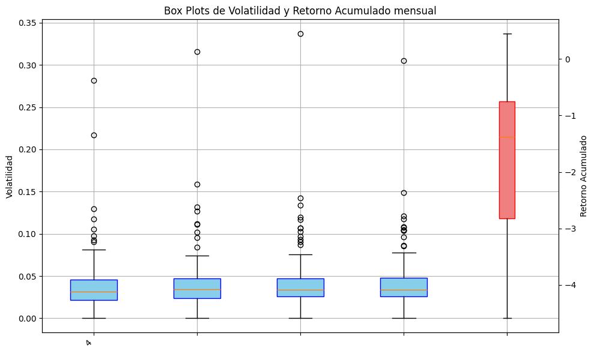
En la gráfica donde se cuentran los box plot, se puede observar que el de retorno acumulado se puede observar que hay una mediana, hay alta acumualción de datos entre el cuartil 1 y cuartil 3, además se observan outliers, que represnatn variaciones significatuvas.En los gráficos de volatilidad, esta es baja, en la ventana W=7, se observa que la volatilidad mensual es baja, además hay presencia de valores atípicos y estos son peridos donde hubo mayor volatilidad;En la venatana W=14 la volatilidad también es baja, además hay presencia de valores atípicos; en w=21 la volatilidad es baja, inclusive se podría decir que es aún más baja que las mencionadas anteriormente, además tambien se observa presencia de outlier; por último en W=28 tiene el mismo patrón que las volatilidades anteriormente mencionadas.
import numpy as np
import matplotlib.pyplot as plt
# Asegurarse de que no haya NaN o valores infinitos en cada lista
volatilidad_7_sem_mean = [x for x in volatilidad_7_sem_mean if not (np.isnan(x) or np.isinf(x))]
volatilidad_14_sem_mean = [x for x in volatilidad_14_sem_mean if not (np.isnan(x) or np.isinf(x))]
volatilidad_21_sem_mean = [x for x in volatilidad_21_sem_mean if not (np.isnan(x) or np.isinf(x))]
volatilidad_28_sem_mean = [x for x in volatilidad_28_sem_mean if not (np.isnan(x) or np.isinf(x))]
retorno_acumulado_mes_mean = [x for x in retorno_acumulado_mes_mean if not (np.isnan(x) or np.isinf(x))]
# Datos para volatilidades y nombres
volatilidades = [volatilidad_7_sem_mean, volatilidad_14_sem_mean, volatilidad_21_sem_mean, volatilidad_28_sem_mean]
nombres_volatilidades = ['Volatilidad w=7 semanal', 'Volatilidad w=14 semanal', 'Volatilidad w=21 semanal', 'Volatilidad w=28 semanal']
# Crear la figura
fig, ax1 = plt.subplots(figsize=(10, 6))
# Gráfico de violín para las series de volatilidad en el eje primario
violin1 = ax1.violinplot(volatilidades, showmeans=True, showmedians=True)
ax1.set_xticks(range(1, len(nombres_volatilidades) + 2)) # +2 para incluir espacio del eje secundario
ax1.set_xticklabels(nombres_volatilidades + ['Retorno Acumulado semanal'], rotation=45, ha='right')
ax1.set_ylabel('Volatilidad')
ax1.set_title('Distribución de Volatilidad y Retorno Acumulado semanal')
ax1.grid(True)
# Crear un eje secundario para el Retorno Acumulado y graficarlo como un violín en una posición separada
ax2 = ax1.twinx()
violin2 = ax2.violinplot([retorno_acumulado_mes_mean], positions=[len(volatilidades) + 1], showmeans=True, showmedians=True)
ax2.set_ylabel('Retorno Acumulado')
plt.tight_layout()
plt.show()
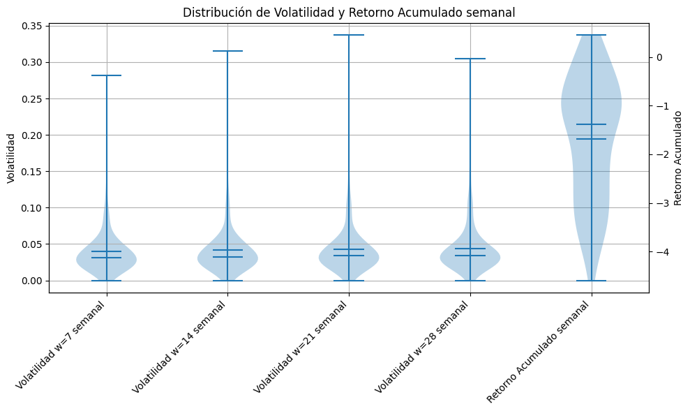
Los box plots de volatilidad muestran que la mediana de la volatilidad tiene media cero y baja variabilidad en la semana, presenta outliers esto es debido que hay semanas en las cuales se produce un aumento en el precio del Bitcoin, en cambio el box plot acumualdo semanal tiene una distribución amplia con presencia de outliers lo cuapl indica que hay semanas en las cuales se observa una alta variación en el retorno
import numpy as np
import matplotlib.pyplot as plt
# Asegurarse de que no haya NaN o valores infinitos en cada lista
volatilidad_7_año_mean = [x for x in volatilidad_7_año_mean if not (np.isnan(x) or np.isinf(x))]
volatilidad_14_año_mean = [x for x in volatilidad_14_año_mean if not (np.isnan(x) or np.isinf(x))]
volatilidad_21_año_mean = [x for x in volatilidad_21_año_mean if not (np.isnan(x) or np.isinf(x))]
volatilidad_28_año_mean = [x for x in volatilidad_28_año_mean if not (np.isnan(x) or np.isinf(x))]
retorno_acumulado_mes_mean = [x for x in retorno_acumulado_mes_mean if not (np.isnan(x) or np.isinf(x))]
# Datos para volatilidades y nombres
volatilidades = [volatilidad_7_año_mean, volatilidad_14_año_mean, volatilidad_21_año_mean, volatilidad_28_año_mean]
nombres_volatilidades = ['Volatilidad w=7 anual', 'Volatilidad w=14 anual', 'Volatilidad w=21 anual', 'Volatilidad w=28 anual']
# Crear la figura y el primer eje
fig, ax1 = plt.subplots(figsize=(10, 6))
# Gráfico de cajas para las series de volatilidad en el eje primario
box1 = ax1.boxplot(volatilidades, positions=range(len(volatilidades)), patch_artist=True,
boxprops=dict(facecolor="skyblue", color="blue"))
ax1.set_xticks(range(len(nombres_volatilidades) + 1)) # +1 para incluir la posición del retorno acumulado
ax1.set_xticklabels(nombres_volatilidades + ['Retorno Acumulado anual'], rotation=45, ha='right')
ax1.set_ylabel('Volatilidad')
ax1.set_title('Box Plots de Volatilidad y Retorno Acumulado anual')
ax1.grid(True)
# Crear un eje secundario para el Retorno Acumulado y graficarlo como un boxplot en una posición separada
ax2 = ax1.twinx()
box2 = ax2.boxplot([retorno_acumulado_mes_mean], positions=[len(volatilidades)], patch_artist=True,
boxprops=dict(facecolor="lightcoral", color="red"))
ax2.set_ylabel('Retorno Acumulado')
plt.tight_layout()
plt.show()
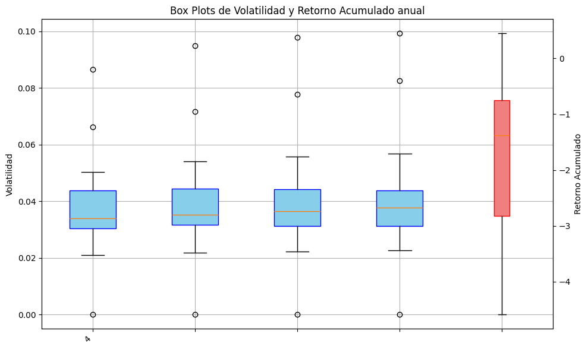
Los box plot de volatilidad presentan valores con mediana cercana a cero, con cajas estrechas y una baja presencia de outlier por lo tanto la volatilidad se mantiene contastante anual. En cambio en el box plot de retornos acumulados se muestra una mayor variabilidad, con la mediana posicionada en el rango inferior, es decir, en promedio el creciemiento no es significativo, además hay presencia de outliers en donde el bitcoin pudo haber tenido altos y bajos
import pandas as pd
volatilidad_7_semanal = bitcoin_data['Volatilidad_7d'].resample('W').mean().fillna(method='ffill')
volatilidad_14_semanal = bitcoin_data['Volatilidad_14d'].resample('W').mean().fillna(method='ffill')
volatilidad_21_semanal = bitcoin_data['Volatilidad_21d'].resample('W').mean().fillna(method='ffill')
volatilidad_28_semanal = bitcoin_data['Volatilidad_28d'].resample('W').mean().fillna(method='ffill')
retorno_acumulado_semanal = bitcoin_data['Retorno_Acumulado'].resample('W').mean().fillna(method='ffill')
volatilidad_7_mensual = bitcoin_data['Volatilidad_7d'].resample('M').mean().fillna(method='ffill')
volatilidad_14_mensual = bitcoin_data['Volatilidad_14d'].resample('M').mean().fillna(method='ffill')
volatilidad_21_mensual = bitcoin_data['Volatilidad_21d'].resample('M').mean().fillna(method='ffill')
volatilidad_28_mensual = bitcoin_data['Volatilidad_28d'].resample('M').mean().fillna(method='ffill')
retorno_acumulado_mensual = bitcoin_data['Retorno_Acumulado'].resample('M').mean().fillna(method='ffill')
volatilidad_7_anual = bitcoin_data['Volatilidad_7d'].resample('Y').mean().fillna(method='ffill')
volatilidad_14_anual = bitcoin_data['Volatilidad_14d'].resample('Y').mean().fillna(method='ffill')
volatilidad_21_anual = bitcoin_data['Volatilidad_21d'].resample('Y').mean().fillna(method='ffill')
volatilidad_28_anual = bitcoin_data['Volatilidad_28d'].resample('Y').mean().fillna(method='ffill')
retorno_acumulado_anual = bitcoin_data['Retorno_Acumulado'].resample('Y').mean().fillna(method='ffill')
C:\Users\FBA\AppData\Local\Temp\ipykernel_15160\3555333478.py:3: FutureWarning: Series.fillna with 'method' is deprecated and will raise in a future version. Use obj.ffill() or obj.bfill() instead.
volatilidad_7_semanal = bitcoin_data['Volatilidad_7d'].resample('W').mean().fillna(method='ffill')
C:\Users\FBA\AppData\Local\Temp\ipykernel_15160\3555333478.py:4: FutureWarning: Series.fillna with 'method' is deprecated and will raise in a future version. Use obj.ffill() or obj.bfill() instead.
volatilidad_14_semanal = bitcoin_data['Volatilidad_14d'].resample('W').mean().fillna(method='ffill')
C:\Users\FBA\AppData\Local\Temp\ipykernel_15160\3555333478.py:5: FutureWarning: Series.fillna with 'method' is deprecated and will raise in a future version. Use obj.ffill() or obj.bfill() instead.
volatilidad_21_semanal = bitcoin_data['Volatilidad_21d'].resample('W').mean().fillna(method='ffill')
C:\Users\FBA\AppData\Local\Temp\ipykernel_15160\3555333478.py:6: FutureWarning: Series.fillna with 'method' is deprecated and will raise in a future version. Use obj.ffill() or obj.bfill() instead.
volatilidad_28_semanal = bitcoin_data['Volatilidad_28d'].resample('W').mean().fillna(method='ffill')
C:\Users\FBA\AppData\Local\Temp\ipykernel_15160\3555333478.py:7: FutureWarning: Series.fillna with 'method' is deprecated and will raise in a future version. Use obj.ffill() or obj.bfill() instead.
retorno_acumulado_semanal = bitcoin_data['Retorno_Acumulado'].resample('W').mean().fillna(method='ffill')
C:\Users\FBA\AppData\Local\Temp\ipykernel_15160\3555333478.py:9: FutureWarning: 'M' is deprecated and will be removed in a future version, please use 'ME' instead.
volatilidad_7_mensual = bitcoin_data['Volatilidad_7d'].resample('M').mean().fillna(method='ffill')
C:\Users\FBA\AppData\Local\Temp\ipykernel_15160\3555333478.py:9: FutureWarning: Series.fillna with 'method' is deprecated and will raise in a future version. Use obj.ffill() or obj.bfill() instead.
volatilidad_7_mensual = bitcoin_data['Volatilidad_7d'].resample('M').mean().fillna(method='ffill')
C:\Users\FBA\AppData\Local\Temp\ipykernel_15160\3555333478.py:10: FutureWarning: 'M' is deprecated and will be removed in a future version, please use 'ME' instead.
volatilidad_14_mensual = bitcoin_data['Volatilidad_14d'].resample('M').mean().fillna(method='ffill')
C:\Users\FBA\AppData\Local\Temp\ipykernel_15160\3555333478.py:10: FutureWarning: Series.fillna with 'method' is deprecated and will raise in a future version. Use obj.ffill() or obj.bfill() instead.
volatilidad_14_mensual = bitcoin_data['Volatilidad_14d'].resample('M').mean().fillna(method='ffill')
C:\Users\FBA\AppData\Local\Temp\ipykernel_15160\3555333478.py:11: FutureWarning: 'M' is deprecated and will be removed in a future version, please use 'ME' instead.
volatilidad_21_mensual = bitcoin_data['Volatilidad_21d'].resample('M').mean().fillna(method='ffill')
C:\Users\FBA\AppData\Local\Temp\ipykernel_15160\3555333478.py:11: FutureWarning: Series.fillna with 'method' is deprecated and will raise in a future version. Use obj.ffill() or obj.bfill() instead.
volatilidad_21_mensual = bitcoin_data['Volatilidad_21d'].resample('M').mean().fillna(method='ffill')
C:\Users\FBA\AppData\Local\Temp\ipykernel_15160\3555333478.py:12: FutureWarning: 'M' is deprecated and will be removed in a future version, please use 'ME' instead.
volatilidad_28_mensual = bitcoin_data['Volatilidad_28d'].resample('M').mean().fillna(method='ffill')
C:\Users\FBA\AppData\Local\Temp\ipykernel_15160\3555333478.py:12: FutureWarning: Series.fillna with 'method' is deprecated and will raise in a future version. Use obj.ffill() or obj.bfill() instead.
volatilidad_28_mensual = bitcoin_data['Volatilidad_28d'].resample('M').mean().fillna(method='ffill')
C:\Users\FBA\AppData\Local\Temp\ipykernel_15160\3555333478.py:13: FutureWarning: 'M' is deprecated and will be removed in a future version, please use 'ME' instead.
retorno_acumulado_mensual = bitcoin_data['Retorno_Acumulado'].resample('M').mean().fillna(method='ffill')
C:\Users\FBA\AppData\Local\Temp\ipykernel_15160\3555333478.py:13: FutureWarning: Series.fillna with 'method' is deprecated and will raise in a future version. Use obj.ffill() or obj.bfill() instead.
retorno_acumulado_mensual = bitcoin_data['Retorno_Acumulado'].resample('M').mean().fillna(method='ffill')
C:\Users\FBA\AppData\Local\Temp\ipykernel_15160\3555333478.py:15: FutureWarning: 'Y' is deprecated and will be removed in a future version, please use 'YE' instead.
volatilidad_7_anual = bitcoin_data['Volatilidad_7d'].resample('Y').mean().fillna(method='ffill')
C:\Users\FBA\AppData\Local\Temp\ipykernel_15160\3555333478.py:15: FutureWarning: Series.fillna with 'method' is deprecated and will raise in a future version. Use obj.ffill() or obj.bfill() instead.
volatilidad_7_anual = bitcoin_data['Volatilidad_7d'].resample('Y').mean().fillna(method='ffill')
C:\Users\FBA\AppData\Local\Temp\ipykernel_15160\3555333478.py:16: FutureWarning: 'Y' is deprecated and will be removed in a future version, please use 'YE' instead.
volatilidad_14_anual = bitcoin_data['Volatilidad_14d'].resample('Y').mean().fillna(method='ffill')
C:\Users\FBA\AppData\Local\Temp\ipykernel_15160\3555333478.py:16: FutureWarning: Series.fillna with 'method' is deprecated and will raise in a future version. Use obj.ffill() or obj.bfill() instead.
volatilidad_14_anual = bitcoin_data['Volatilidad_14d'].resample('Y').mean().fillna(method='ffill')
C:\Users\FBA\AppData\Local\Temp\ipykernel_15160\3555333478.py:17: FutureWarning: 'Y' is deprecated and will be removed in a future version, please use 'YE' instead.
volatilidad_21_anual = bitcoin_data['Volatilidad_21d'].resample('Y').mean().fillna(method='ffill')
C:\Users\FBA\AppData\Local\Temp\ipykernel_15160\3555333478.py:17: FutureWarning: Series.fillna with 'method' is deprecated and will raise in a future version. Use obj.ffill() or obj.bfill() instead.
volatilidad_21_anual = bitcoin_data['Volatilidad_21d'].resample('Y').mean().fillna(method='ffill')
C:\Users\FBA\AppData\Local\Temp\ipykernel_15160\3555333478.py:18: FutureWarning: 'Y' is deprecated and will be removed in a future version, please use 'YE' instead.
volatilidad_28_anual = bitcoin_data['Volatilidad_28d'].resample('Y').mean().fillna(method='ffill')
C:\Users\FBA\AppData\Local\Temp\ipykernel_15160\3555333478.py:18: FutureWarning: Series.fillna with 'method' is deprecated and will raise in a future version. Use obj.ffill() or obj.bfill() instead.
volatilidad_28_anual = bitcoin_data['Volatilidad_28d'].resample('Y').mean().fillna(method='ffill')
C:\Users\FBA\AppData\Local\Temp\ipykernel_15160\3555333478.py:19: FutureWarning: 'Y' is deprecated and will be removed in a future version, please use 'YE' instead.
retorno_acumulado_anual = bitcoin_data['Retorno_Acumulado'].resample('Y').mean().fillna(method='ffill')
C:\Users\FBA\AppData\Local\Temp\ipykernel_15160\3555333478.py:19: FutureWarning: Series.fillna with 'method' is deprecated and will raise in a future version. Use obj.ffill() or obj.bfill() instead.
retorno_acumulado_anual = bitcoin_data['Retorno_Acumulado'].resample('Y').mean().fillna(method='ffill')
import pandas as pd
import statsmodels.api as sm
import matplotlib.pyplot as plt
def descomponer_y_graficar(serie, nombre):
result = sm.tsa.seasonal_decompose(serie, model='additive') # o 'multiplicative'
plt.figure(figsize=(15, 10))
plt.subplot(3, 1, 1)
plt.plot(result.observed, label='Serie Observada')
plt.title(f'Serie Observada - {nombre}')
plt.legend()
plt.subplot(3, 1, 2)
plt.plot(result.trend, label='Tendencia', color='orange')
plt.title('Tendencia')
plt.legend()
plt.subplot(3, 1, 3)
plt.plot(result.seasonal, label='Estacionalidad', color='green')
plt.title('Estacionalidad')
plt.legend()
plt.tight_layout()
plt.show()
return result
resultados_semanales = {
'Volatilidad 7d': descomponer_y_graficar(volatilidad_7_semanal, 'Volatilidad 7d'),
'Volatilidad 14d': descomponer_y_graficar(volatilidad_14_semanal, 'Volatilidad 14d'),
'Volatilidad 21d': descomponer_y_graficar(volatilidad_21_semanal, 'Volatilidad 21d'),
'Volatilidad 28d': descomponer_y_graficar(volatilidad_28_semanal, 'Volatilidad 28d'),
'Retorno Acumulado': descomponer_y_graficar(retorno_acumulado_semanal, 'Retorno Acumulado')
}
resultados_mensuales = {
'Volatilidad 7d': descomponer_y_graficar(volatilidad_7_mensual, 'Volatilidad 7d'),
'Volatilidad 14d': descomponer_y_graficar(volatilidad_14_mensual, 'Volatilidad 14d'),
'Volatilidad 21d': descomponer_y_graficar(volatilidad_21_mensual, 'Volatilidad 21d'),
'Volatilidad 28d': descomponer_y_graficar(volatilidad_28_mensual, 'Volatilidad 28d'),
'Retorno Acumulado': descomponer_y_graficar(retorno_acumulado_mensual, 'Retorno Acumulado')
}
resultados_anuales = {
'Volatilidad 7d': descomponer_y_graficar(volatilidad_7_anual, 'Volatilidad 7d'),
'Volatilidad 14d': descomponer_y_graficar(volatilidad_14_anual, 'Volatilidad 14d'),
'Volatilidad 21d': descomponer_y_graficar(volatilidad_21_anual, 'Volatilidad 21d'),
'Volatilidad 28d': descomponer_y_graficar(volatilidad_28_anual, 'Volatilidad 28d'),
'Retorno Acumulado': descomponer_y_graficar(retorno_acumulado_anual, 'Retorno Acumulado')
}
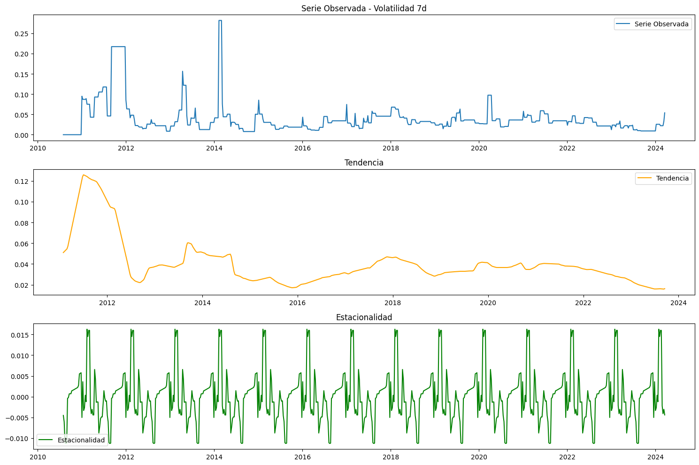
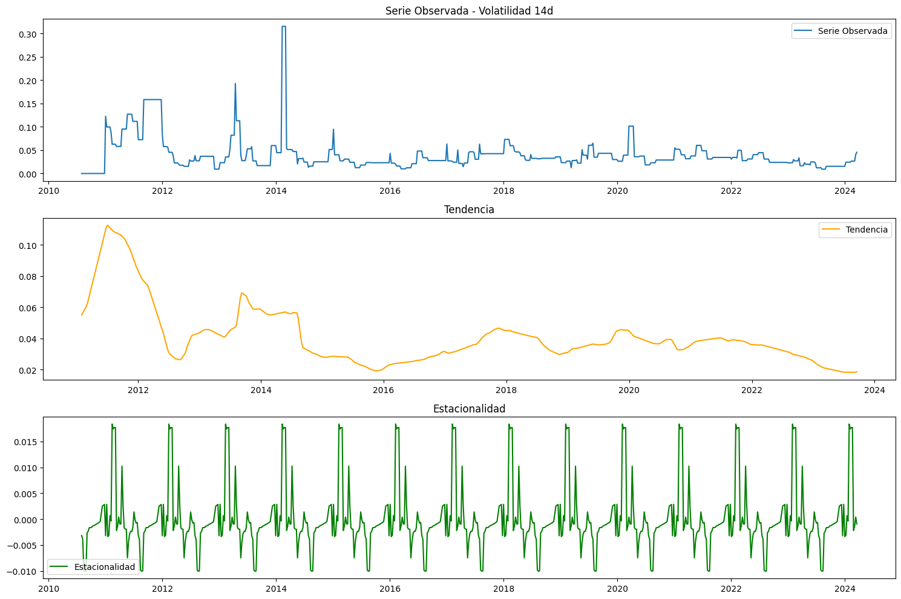
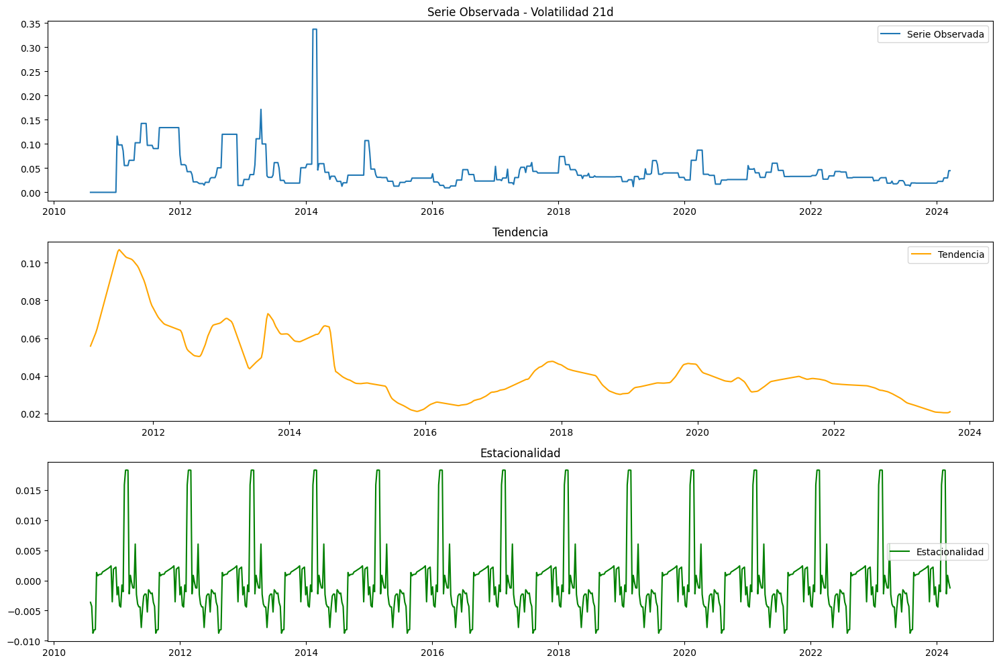
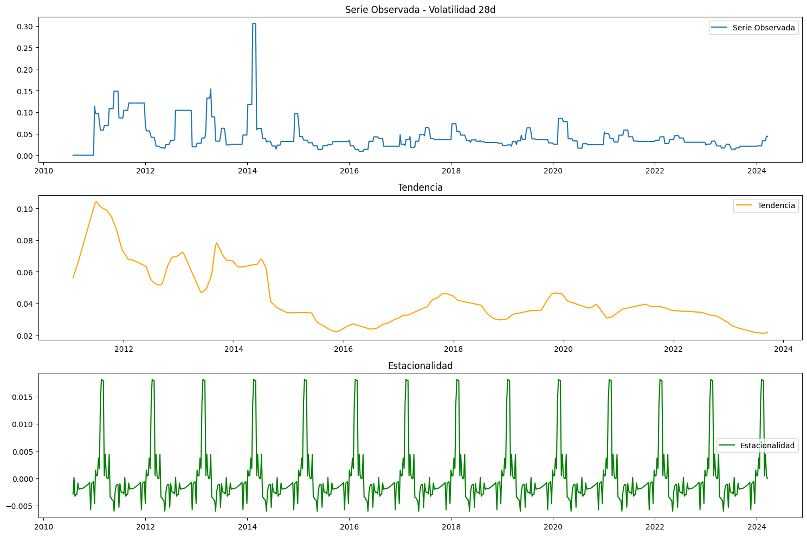
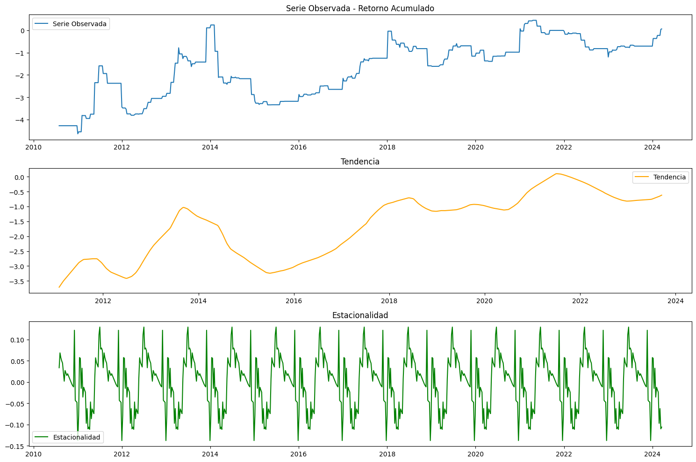
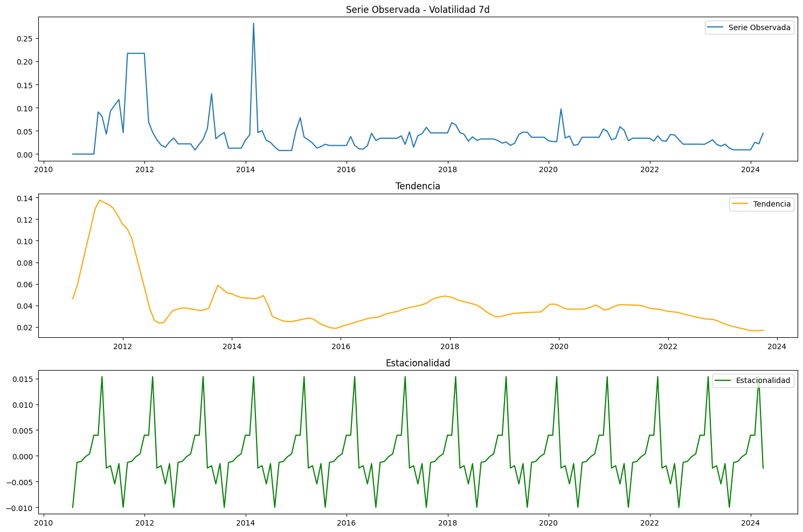
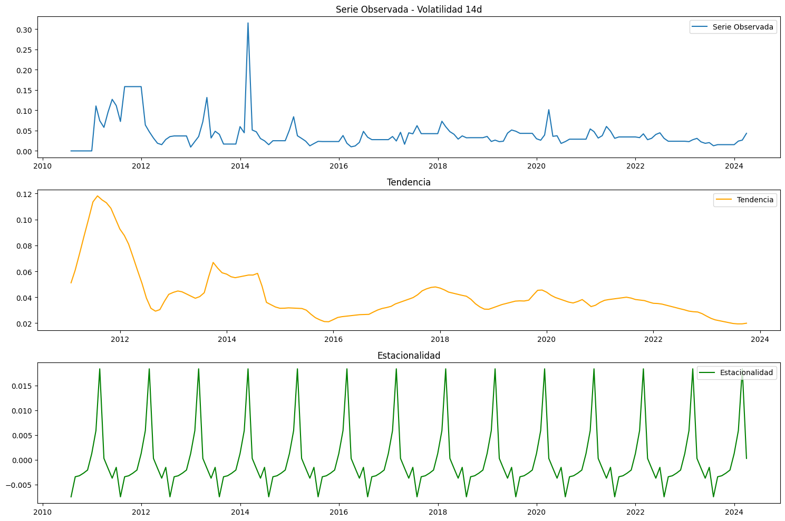
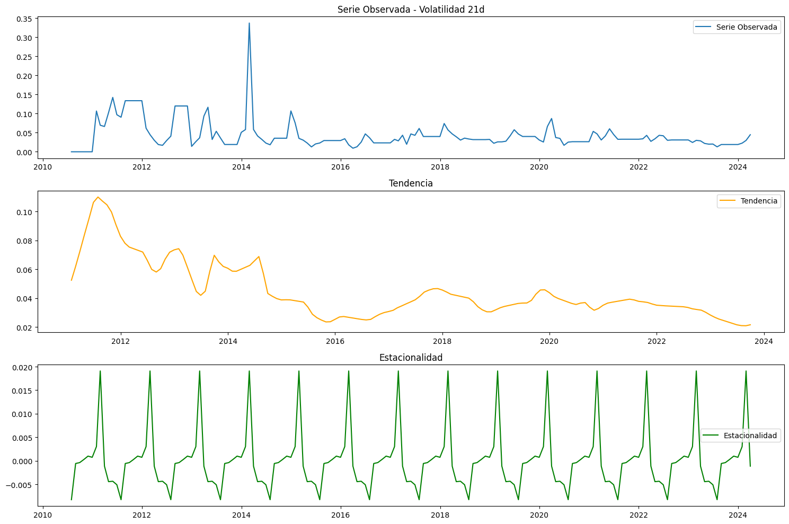
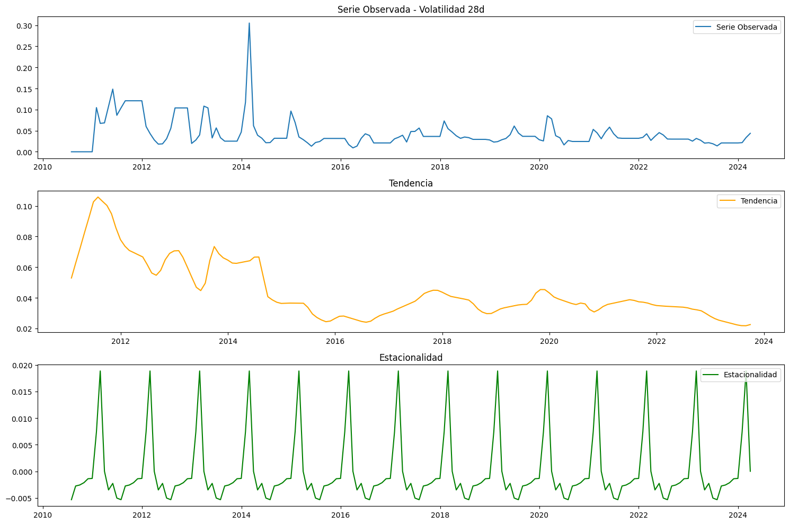
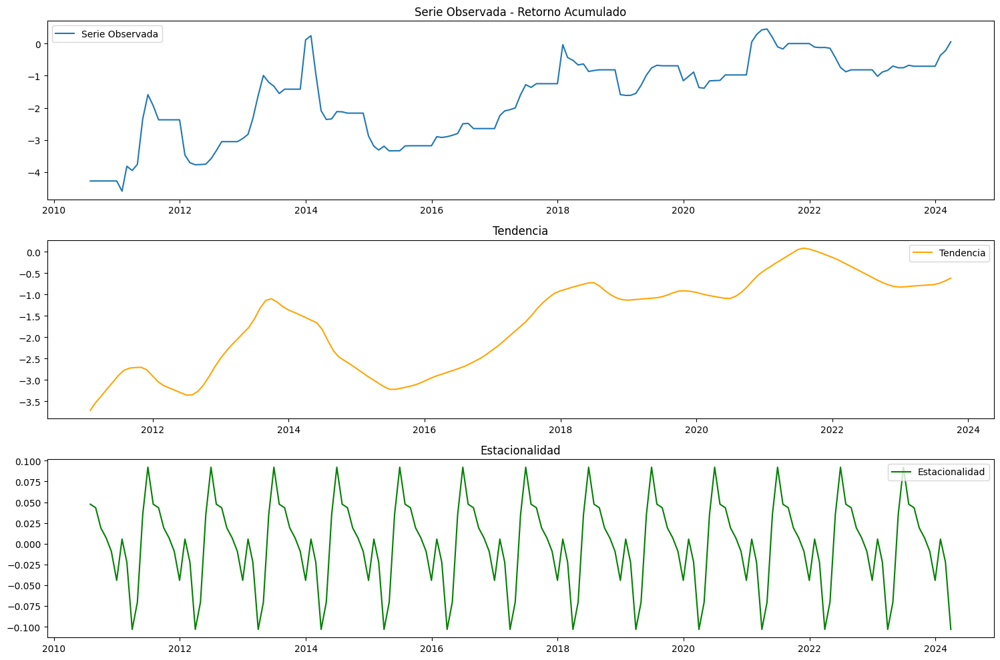
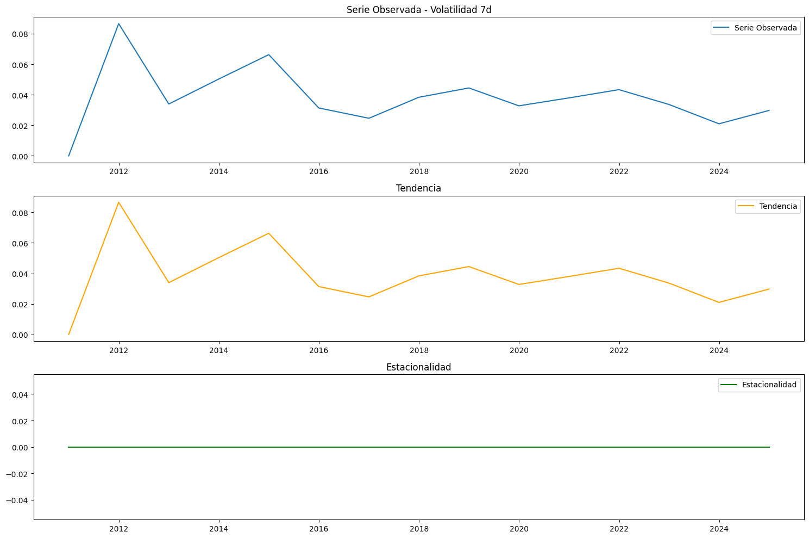
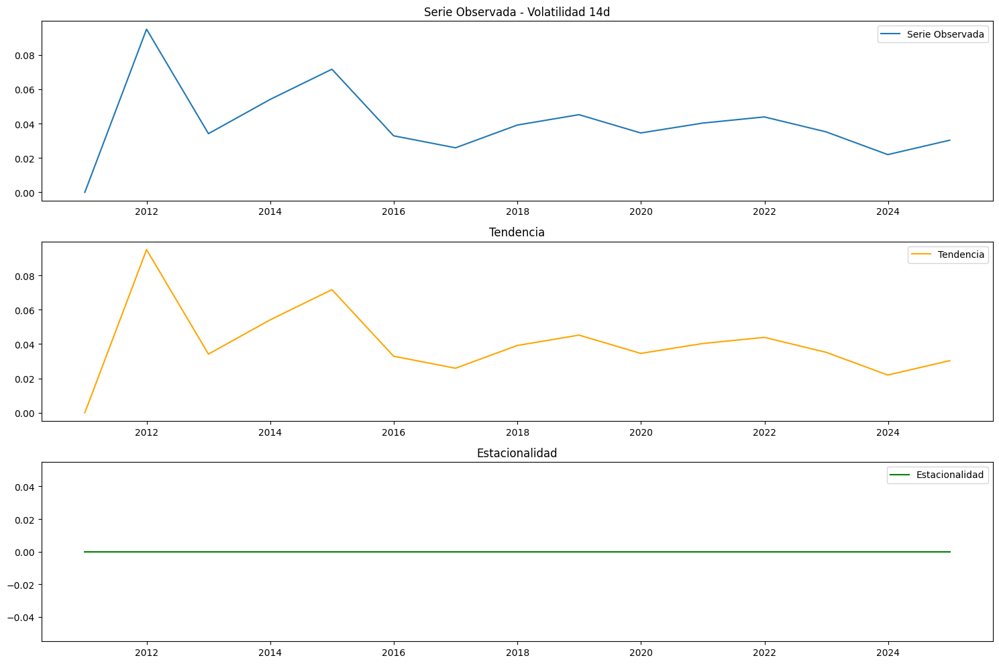
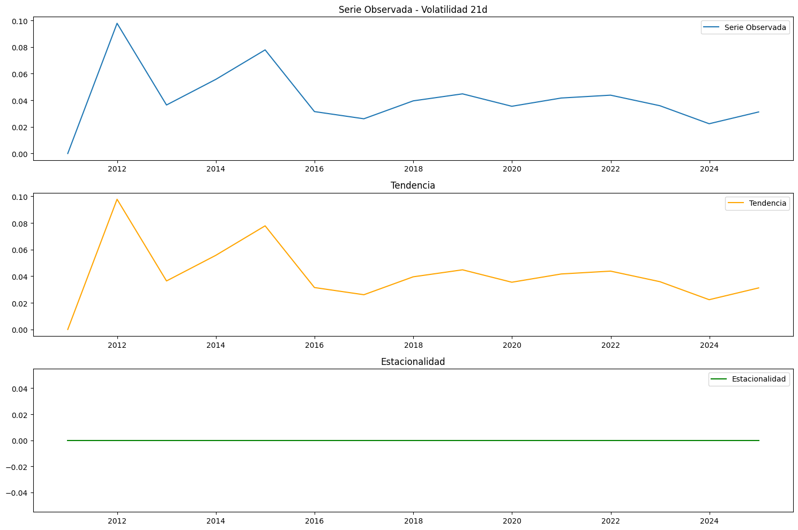
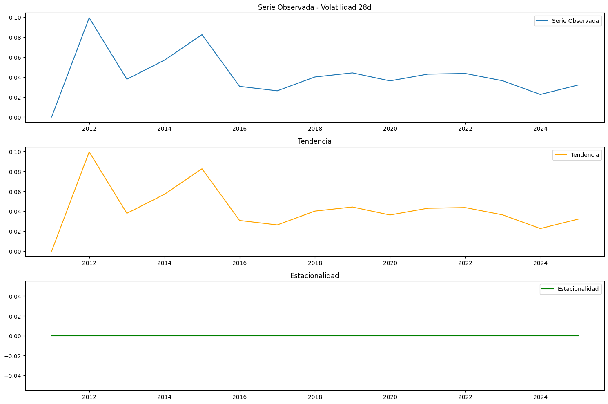
Item 5.#
Estudie estacionariedad de la serie de tiempo usando la ACF estudiada durante el curso, así como también los respectivos test estadísticos tales como Ljung-Box y Dickey Fuller. Aplique además las transformaciones necesarias para convertir la serie de tiempo en estacionaria.
from statsmodels.tsa.stattools import adfuller
def prueba_dickey_fuller(serie, nombre):
resultado = adfuller(serie.dropna())
print(f'Prueba de Dickey-Fuller para {nombre}:')
print(f'Estadístico: {resultado[0]}')
print(f'Valor p: {resultado[1]}')
print(f'Número de retardos utilizados: {resultado[2]}')
print(f'Número de observaciones utilizadas: {resultado[3]}')
print('Valores críticos:')
for key, value in resultado[4].items():
print(f' {key}: {value}')
print('\n')
# Asegúrate de tener tus datos en un DataFrame llamado `df`
prueba_dickey_fuller(bitcoin_data['Volatilidad_7d'], 'Volatilidad 7')
prueba_dickey_fuller(bitcoin_data['Volatilidad_14d'], 'Volatilidad 14')
prueba_dickey_fuller(bitcoin_data['Volatilidad_21d'], 'Volatilidad 21')
prueba_dickey_fuller(bitcoin_data['Volatilidad_28d'], 'Volatilidad 28')
prueba_dickey_fuller(bitcoin_data['Retorno_Acumulado'], 'Retorno_Acumulado')
Prueba de Dickey-Fuller para Volatilidad 7:
Estadístico: -7.470877323489327
Valor p: 5.058843771700714e-11
Número de retardos utilizados: 32
Número de observaciones utilizadas: 4964
Valores críticos:
1%: -3.4316680267467183
5%: -2.862122424368673
10%: -2.5670800253574324
Prueba de Dickey-Fuller para Volatilidad 14:
Estadístico: -6.803042873467541
Valor p: 2.212037885322242e-09
Número de retardos utilizados: 28
Número de observaciones utilizadas: 4968
Valores críticos:
1%: -3.4316669649844727
5%: -2.8621219552891963
10%: -2.5670797756478825
Prueba de Dickey-Fuller para Volatilidad 21:
Estadístico: -6.749076106589255
Valor p: 2.9828849576575963e-09
Número de retardos utilizados: 31
Número de observaciones utilizadas: 4965
Valores críticos:
1%: -3.431667761145687
5%: -2.8621223070279247
10%: -2.5670799628923104
Prueba de Dickey-Fuller para Volatilidad 28:
Estadístico: -5.344657815908784
Valor p: 4.422214391059568e-06
Número de retardos utilizados: 30
Número de observaciones utilizadas: 4966
Valores críticos:
1%: -3.4316674956516784
5%: -2.8621221897344484
10%: -2.567079900452355
Prueba de Dickey-Fuller para Retorno_Acumulado:
Estadístico: -1.670235550675
Valor p: 0.44650955490315725
Número de retardos utilizados: 32
Número de observaciones utilizadas: 4965
Valores críticos:
1%: -3.431667761145687
5%: -2.8621223070279247
10%: -2.5670799628923104
Las pruebas de dickey fuller aplicadas para la volatilidad indican que son estacionarias , es decir que las series no presentan una tendencia signifiactiva y el retorno acumulado no es estacionario, por lo tanto puede tener una tendencia que afecte el comportaminto
from statsmodels.stats.diagnostic import acorr_ljungbox
def prueba_ljung_box(serie, nombre, lags=10):
lb_test = acorr_ljungbox(serie.dropna(), lags=[lags], return_df=True)
print(f'Prueba de Ljung-Box para {nombre}:')
print(lb_test)
print('-' * 50)
prueba_ljung_box(bitcoin_data['Volatilidad_7d'], 'Volatilidad 7d Semanal', lags=6)
prueba_ljung_box(bitcoin_data['Volatilidad_14d'], 'Volatilidad 14d Semanal', lags=6)
prueba_ljung_box(bitcoin_data['Volatilidad_21d'], 'Volatilidad 21d Semanal', lags=6)
prueba_ljung_box(bitcoin_data['Volatilidad_28d'], 'Volatilidad 28d Semanal', lags=6)
prueba_ljung_box(bitcoin_data['Retorno_Acumulado'], 'Retorno acumulado', lags=6)
Prueba de Ljung-Box para Volatilidad 7d Semanal:
lb_stat lb_pvalue
6 17405.218794 0.0
--------------------------------------------------
Prueba de Ljung-Box para Volatilidad 14d Semanal:
lb_stat lb_pvalue
6 24268.643611 0.0
--------------------------------------------------
Prueba de Ljung-Box para Volatilidad 21d Semanal:
lb_stat lb_pvalue
6 26526.369484 0.0
--------------------------------------------------
Prueba de Ljung-Box para Volatilidad 28d Semanal:
lb_stat lb_pvalue
6 27507.436177 0.0
--------------------------------------------------
Prueba de Ljung-Box para Retorno acumulado:
lb_stat lb_pvalue
6 29701.921964 0.0
--------------------------------------------------
Los resultado arrojados por la prueba de Ljung box, no dicen que hay autocorrelación en las series, por lo tanto los errores de predicción no son independientes
import matplotlib.pyplot as plt
from statsmodels.graphics.tsaplots import plot_acf
def graficar_acf(serie, nombre, lags=40):
plt.figure(figsize=(10, 6))
plot_acf(serie.dropna(), lags=lags)
plt.title(f'ACF para {nombre}')
plt.xlabel('Lags')
plt.ylabel('Autocorrelación')
plt.grid(True)
plt.show()
graficar_acf(bitcoin_data['Volatilidad_7d'], 'Volatilidad 7d Semanal', lags=20)
graficar_acf(bitcoin_data['Volatilidad_14d'], 'Volatilidad 14d Semanal', lags=20)
graficar_acf(bitcoin_data['Volatilidad_21d'], 'Volatilidad 21d Semanal', lags=20)
graficar_acf(bitcoin_data['Volatilidad_28d'], 'Volatilidad 28d Semanal', lags=20)
graficar_acf(bitcoin_data['Retorno_Acumulado'], 'Retornoa acumualdo', lags=20)
<Figure size 1000x600 with 0 Axes>
<Figure size 1000x600 with 0 Axes>
<Figure size 1000x600 with 0 Axes>
<Figure size 1000x600 with 0 Axes>
<Figure size 1000x600 with 0 Axes>
Las series de voaltilidad muestran una autocorrelación significativa en los primeros lags y el retorno acumulado tambien muestra autocorrelación pero esta menos pronunciada
Item 6.#
Mediante agregación por grupos analice el comportamiento de la media y desviación estándar, agrupando por semanas, días, meses. Además, para estas agrupaciones, calcule estadísticos móviles. Dibuje la distribución de frecuencias para diferentes lags como se realizó en las notas
import matplotlib.pyplot as plt
import pandas as pd
def graficar_media_movil(serie, nombre, window=6):
plt.figure(figsize=(10, 6))
plt.plot(serie, label='Serie Original', alpha=0.5)
media_movil = serie.rolling(window=window).mean()
plt.plot(media_movil, label=f'Media Móvil ({window} días)', color='orange', linewidth=2)
plt.title(f'Comportamiento de la Media para {nombre}')
plt.xlabel('Fecha')
plt.ylabel('Valor')
plt.legend()
plt.grid(True)
plt.show()
graficar_media_movil(bitcoin_data['Volatilidad_7d'], 'Volatilidad 7d Semanal', window=7)
graficar_media_movil(bitcoin_data['Volatilidad_14d'], 'Volatilidad 14d Semanal', window=14)
graficar_media_movil(bitcoin_data['Volatilidad_21d'], 'Volatilidad 21d Semanal', window=21)
graficar_media_movil(bitcoin_data['Volatilidad_28d'], 'Volatilidad 28d Semanal', window=28)
graficar_media_movil(bitcoin_data['Retorno_Acumulado'], 'Retorno acumulado', window=28)
En comparación con la serie original, la media movil, con la window=6, tiene un coportamiento muy similar con la serie original
def graficar_desviacion_estandar_movil(serie, nombre, window=6):
plt.figure(figsize=(10, 6))
desviacion_movil = serie.rolling(window=window).std()
plt.plot(desviacion_movil, label=f'Desviación Estándar Móvil ({window} días)', color='red', linewidth=2)
plt.title(f'Comportamiento de la Desviación Estándar para {nombre}')
plt.xlabel('Fecha')
plt.ylabel('Desviación Estándar')
plt.legend()
plt.grid(True)
plt.show()
graficar_desviacion_estandar_movil(bitcoin_data['Volatilidad_7d'], 'Volatilidad 7d Semanal', window=7)
graficar_desviacion_estandar_movil(bitcoin_data['Volatilidad_14d'], 'Volatilidad 14d Semanal', window=14)
graficar_desviacion_estandar_movil(bitcoin_data['Volatilidad_21d'], 'Volatilidad 21d Semanal', window=21)
graficar_desviacion_estandar_movil(bitcoin_data['Volatilidad_28d'], 'Volatilidad 28d Semanal', window=28)
graficar_desviacion_estandar_movil(bitcoin_data['Retorno_Acumulado'], 'retorno acumulado', window=6)
Se observa que la desviación estandar se mantiene baja hasta el 2014, en este año se registran picos significativos
Item 7.#
Aplique las medias móviles M(2) t (t,t+1) , M(4) t , M(4) t , M(3) (t−1,t+1) t y M(3) a la serie del precio de cierre de BTC-USD. Posteriormente, úselas para remover tendencia y aplique la prueba de Dickey Fuller y LJung Box para verificar si se logró estacionariedad
#M2
bitcoin_data['M2R'] = bitcoin_data['Retorno_Acumulado'].rolling(window=6).mean()
bitcoin_data['M27'] = bitcoin_data['Volatilidad_7d'].rolling(window=7).mean()
bitcoin_data['M214'] = bitcoin_data['Volatilidad_14d'].rolling(window=14).mean()
bitcoin_data['M221'] = bitcoin_data['Volatilidad_21d'].rolling(window=21).mean()
bitcoin_data['M228'] = bitcoin_data['Volatilidad_28d'].rolling(window=28).mean()
prueba_dickey_fuller(bitcoin_data['M2R'], 'M2R')
prueba_dickey_fuller(bitcoin_data['M27'], 'M27')
prueba_dickey_fuller(bitcoin_data['M214'], 'M214')
prueba_dickey_fuller(bitcoin_data['M221'], 'M221')
prueba_dickey_fuller(bitcoin_data['M228'], 'M228')
Prueba de Dickey-Fuller para M2R:
Estadístico: -1.8604877156924164
Valor p: 0.35087099552411827
Número de retardos utilizados: 31
Número de observaciones utilizadas: 4961
Valores críticos:
1%: -3.4316688241926
5%: -2.8621227766748327
10%: -2.5670802129039485
Prueba de Dickey-Fuller para M27:
Estadístico: -6.8514562842150655
Valor p: 1.6901179144523168e-09
Número de retardos utilizados: 31
Número de observaciones utilizadas: 4959
Valores críticos:
1%: -3.4316693563594916
5%: -2.862123011782489
10%: -2.5670803380610705
Prueba de Dickey-Fuller para M214:
Estadístico: -6.949918797279923
Valor p: 9.75242434595773e-10
Número de retardos utilizados: 32
Número de observaciones utilizadas: 4951
Valores críticos:
1%: -3.4316714893287616
5%: -2.862123954113155
10%: -2.5670808397010965
Prueba de Dickey-Fuller para M221:
Estadístico: -5.633467279240362
Valor p: 1.0762654771144731e-06
Número de retardos utilizados: 32
Número de observaciones utilizadas: 4944
Valores críticos:
1%: -3.431673361342282
5%: -2.8621247811548693
10%: -2.5670812799683316
Prueba de Dickey-Fuller para M228:
Estadístico: -6.970902588416266
Valor p: 8.670308171693362e-10
Número de retardos utilizados: 31
Número de observaciones utilizadas: 4938
Valores críticos:
1%: -3.4316749701517963
5%: -2.862125491914587
10%: -2.5670816583341
La media movil de los datos de volatilidad arroja que es estacionaria y los de retorno acumulado arroja que no son estacionarios
# (M2(t, t+1))
bitcoin_data['M_2_t_t1R'] = (bitcoin_data['Retorno_Acumulado'] + bitcoin_data['Price'].shift(-1)) / 2
bitcoin_data['M_2_t_t17'] = (bitcoin_data['Volatilidad_7d'] + bitcoin_data['Price'].shift(-1)) / 2
bitcoin_data['M_2_t_t114'] = (bitcoin_data['Volatilidad_14d'] + bitcoin_data['Price'].shift(-1)) / 2
bitcoin_data['M_2_t_t121'] = (bitcoin_data['Volatilidad_21d'] + bitcoin_data['Price'].shift(-1)) / 2
bitcoin_data['M_2_t_t128'] = (bitcoin_data['Volatilidad_28d'] + bitcoin_data['Price'].shift(-1)) / 2
En este caso ninguno de los casos es estacioanrio
prueba_dickey_fuller(bitcoin_data['M_2_t_t1R'], 'M_2_t_t1R')
prueba_dickey_fuller(bitcoin_data['M_2_t_t17'], 'M_2_t_t17')
prueba_dickey_fuller(bitcoin_data['M_2_t_t114'], 'M_2_t_t114')
prueba_dickey_fuller(bitcoin_data['M_2_t_t121'], 'M_2_t_t121')
prueba_dickey_fuller(bitcoin_data['M_2_t_t128'], 'M_2_t_t128')
Prueba de Dickey-Fuller para M_2_t_t1R:
Estadístico: -2.601209501033324
Valor p: 0.09274754575399546
Número de retardos utilizados: 32
Número de observaciones utilizadas: 4964
Valores críticos:
1%: -3.4316680267467183
5%: -2.862122424368673
10%: -2.5670800253574324
Prueba de Dickey-Fuller para M_2_t_t17:
Estadístico: -2.6012938056976473
Valor p: 0.09273015884661912
Número de retardos utilizados: 32
Número de observaciones utilizadas: 4964
Valores críticos:
1%: -3.4316680267467183
5%: -2.862122424368673
10%: -2.5670800253574324
Prueba de Dickey-Fuller para M_2_t_t114:
Estadístico: -2.6012949170521327
Valor p: 0.09272992965871374
Número de retardos utilizados: 32
Número de observaciones utilizadas: 4964
Valores críticos:
1%: -3.4316680267467183
5%: -2.862122424368673
10%: -2.5670800253574324
Prueba de Dickey-Fuller para M_2_t_t121:
Estadístico: -2.6012949602826487
Valor p: 0.09272992074355496
Número de retardos utilizados: 32
Número de observaciones utilizadas: 4964
Valores críticos:
1%: -3.4316680267467183
5%: -2.862122424368673
10%: -2.5670800253574324
Prueba de Dickey-Fuller para M_2_t_t128:
Estadístico: -2.601294889624968
Valor p: 0.09272993531484658
Número de retardos utilizados: 32
Número de observaciones utilizadas: 4964
Valores críticos:
1%: -3.4316680267467183
5%: -2.862122424368673
10%: -2.5670800253574324
#M(4)
bitcoin_data['M_4R'] = bitcoin_data['Retorno_Acumulado'].rolling(window=4).mean()
bitcoin_data['M_47'] = bitcoin_data['Volatilidad_7d'].rolling(window=4).mean()
bitcoin_data['M_414'] = bitcoin_data['Volatilidad_14d'].rolling(window=4).mean()
bitcoin_data['M_421'] = bitcoin_data['Volatilidad_21d'].rolling(window=4).mean()
bitcoin_data['M_428'] = bitcoin_data['Volatilidad_28d'].rolling(window=4).mean()
print(bitcoin_data[['Price', 'M_4']].head(10))
Price M_4
Date
2024-03-12 64037.8 0.000
2024-03-12 63785.5 0.000
2024-03-12 65503.8 0.000
2024-03-12 67854.0 65295.275
2024-03-12 62050.0 64798.325
2024-03-12 67594.1 65750.475
2024-03-11 68391.2 66472.325
2024-03-11 65314.2 65837.375
2024-03-11 69463.7 67690.800
2024-03-11 71387.5 68639.150
prueba_dickey_fuller(bitcoin_data['M_4R'], 'M_4R')
prueba_dickey_fuller(bitcoin_data['M_47'], 'M_47')
prueba_dickey_fuller(bitcoin_data['M_414'], 'M_414')
prueba_dickey_fuller(bitcoin_data['M_421'], 'M_421')
prueba_dickey_fuller(bitcoin_data['M_428'], 'M_428')
Prueba de Dickey-Fuller para M_4R:
Estadístico: -1.787168785631062
Valor p: 0.38685038524649784
Número de retardos utilizados: 29
Número de observaciones utilizadas: 4965
Valores críticos:
1%: -3.431667761145687
5%: -2.8621223070279247
10%: -2.5670799628923104
Prueba de Dickey-Fuller para M_47:
Estadístico: -6.945535775466764
Valor p: 9.994786594681288e-10
Número de retardos utilizados: 32
Número de observaciones utilizadas: 4961
Valores críticos:
1%: -3.4316688241926
5%: -2.8621227766748327
10%: -2.5670802129039485
Prueba de Dickey-Fuller para M_414:
Estadístico: -6.045631468227909
Valor p: 1.3139730867007032e-07
Número de retardos utilizados: 32
Número de observaciones utilizadas: 4961
Valores críticos:
1%: -3.4316688241926
5%: -2.8621227766748327
10%: -2.5670802129039485
Prueba de Dickey-Fuller para M_421:
Estadístico: -6.477956550118083
Valor p: 1.3166855124616981e-08
Número de retardos utilizados: 32
Número de observaciones utilizadas: 4961
Valores críticos:
1%: -3.4316688241926
5%: -2.8621227766748327
10%: -2.5670802129039485
Prueba de Dickey-Fuller para M_428:
Estadístico: -4.924429689137654
Valor p: 3.125040311713768e-05
Número de retardos utilizados: 32
Número de observaciones utilizadas: 4961
Valores críticos:
1%: -3.4316688241926
5%: -2.8621227766748327
10%: -2.5670802129039485
Las medias moviles de los retorno acumulados es no estacioanrios y las de la volatilidad son estacionarias
# (M_4_(t, t+1))
bitcoin_data['M_4_t_t1R'] = (
bitcoin_data['Retorno_Acumulado'].rolling(window=4).mean() +
bitcoin_data['Retorno_Acumulado'].shift(-4).rolling(window=4).mean()
) / 2
bitcoin_data['M_4_t_t17'] = (
bitcoin_data['Volatilidad_7d'].rolling(window=4).mean() +
bitcoin_data['Volatilidad_7d'].shift(-4).rolling(window=4).mean()
) / 2
bitcoin_data['M_4_t_t114'] = (
bitcoin_data['Volatilidad_14d'].rolling(window=4).mean() +
bitcoin_data['Volatilidad_14d'].shift(-4).rolling(window=4).mean()
) / 2
bitcoin_data['M_4_t_t121'] = (
bitcoin_data['Volatilidad_21d'].rolling(window=4).mean() +
bitcoin_data['Volatilidad_21d'].shift(-4).rolling(window=4).mean()
) / 2
bitcoin_data['M_4_t_t128'] = (
bitcoin_data['Volatilidad_28d'].rolling(window=4).mean() +
bitcoin_data['Volatilidad_28d'].shift(-4).rolling(window=4).mean()
) / 2
prueba_dickey_fuller(bitcoin_data['M_4_t_t1R'], 'M_4_t_t1R')
prueba_dickey_fuller(bitcoin_data['M_4_t_t17'], 'M_4_t_t17')
prueba_dickey_fuller(bitcoin_data['M_4_t_t114'], 'M_4_t_t114')
prueba_dickey_fuller(bitcoin_data['M_4_t_t121'], 'M_4_t_t121')
prueba_dickey_fuller(bitcoin_data['M_4_t_t128'], 'M_4_t_t128')
Prueba de Dickey-Fuller para M_4_t_t1R:
Estadístico: -1.5361725785665399
Valor p: 0.5155474807056786
Número de retardos utilizados: 32
Número de observaciones utilizadas: 4958
Valores críticos:
1%: -3.4316696226040238
5%: -2.8621231294074683
10%: -2.5670804006775105
Prueba de Dickey-Fuller para M_4_t_t17:
Estadístico: -6.986060373048003
Valor p: 7.96339937994057e-10
Número de retardos utilizados: 32
Número de observaciones utilizadas: 4957
Valores críticos:
1%: -3.4316698889560326
5%: -2.8621232470799196
10%: -2.5670804633192237
Prueba de Dickey-Fuller para M_4_t_t114:
Estadístico: -6.622850773022658
Valor p: 5.976618198538989e-09
Número de retardos utilizados: 32
Número de observaciones utilizadas: 4957
Valores críticos:
1%: -3.4316698889560326
5%: -2.8621232470799196
10%: -2.5670804633192237
Prueba de Dickey-Fuller para M_4_t_t121:
Estadístico: -6.4870887278353395
Valor p: 1.2530701118184623e-08
Número de retardos utilizados: 32
Número de observaciones utilizadas: 4957
Valores críticos:
1%: -3.4316698889560326
5%: -2.8621232470799196
10%: -2.5670804633192237
Prueba de Dickey-Fuller para M_4_t_t128:
Estadístico: -5.052383601632606
Valor p: 1.7462553651205248e-05
Número de retardos utilizados: 31
Número de observaciones utilizadas: 4958
Valores críticos:
1%: -3.4316696226040238
5%: -2.8621231294074683
10%: -2.5670804006775105
Las medias moviles de los retorno acumulados es no estacioanrios y las de la volatilidad son estacionarias
bitcoin_data['M_3R'] = bitcoin_data['Retorno_Acumulado'].rolling(window=3).mean()
bitcoin_data['M_37'] = bitcoin_data['Volatilidad_7d'].rolling(window=3).mean()
bitcoin_data['M_314'] = bitcoin_data['Volatilidad_14d'].rolling(window=3).mean()
bitcoin_data['M_321'] = bitcoin_data['Volatilidad_21d'].rolling(window=3).mean()
bitcoin_data['M_328'] = bitcoin_data['Volatilidad_28d'].rolling(window=3).mean()
prueba_dickey_fuller(bitcoin_data['M_3R'], 'M_3R')
prueba_dickey_fuller(bitcoin_data['M_37'], 'M_37')
prueba_dickey_fuller(bitcoin_data['M_314'], 'M_314')
prueba_dickey_fuller(bitcoin_data['M_321'], 'M_321')
prueba_dickey_fuller(bitcoin_data['M_328'], 'M_328')
Prueba de Dickey-Fuller para M_3R:
Estadístico: -1.7022031359032352
Valor p: 0.42997771395789497
Número de retardos utilizados: 32
Número de observaciones utilizadas: 4963
Valores críticos:
1%: -3.431668292454838
5%: -2.862122541756721
10%: -2.567080087847736
Prueba de Dickey-Fuller para M_37:
Estadístico: -7.079756473413681
Valor p: 4.699666674599143e-10
Número de retardos utilizados: 32
Número de observaciones utilizadas: 4962
Valores críticos:
1%: -3.4316685582701103
5%: -2.862122659192098
10%: -2.5670801503632363
Prueba de Dickey-Fuller para M_314:
Estadístico: -6.151972438661141
Valor p: 7.524259944856608e-08
Número de retardos utilizados: 32
Número de observaciones utilizadas: 4962
Valores críticos:
1%: -3.4316685582701103
5%: -2.862122659192098
10%: -2.5670801503632363
Prueba de Dickey-Fuller para M_321:
Estadístico: -6.919467609114153
Valor p: 1.1564359164908902e-09
Número de retardos utilizados: 32
Número de observaciones utilizadas: 4962
Valores críticos:
1%: -3.4316685582701103
5%: -2.862122659192098
10%: -2.5670801503632363
Prueba de Dickey-Fuller para M_328:
Estadístico: -5.520012357414762
Valor p: 1.8869135652565833e-06
Número de retardos utilizados: 31
Número de observaciones utilizadas: 4963
Valores críticos:
1%: -3.431668292454838
5%: -2.862122541756721
10%: -2.567080087847736
Las medias moviles de los retorno acumulados es no estacioanrios y las de la volatilidad son estacionarias
#M3 (t-1, T+1)
bitcoin_data['M_3_t-1_t+1R'] = bitcoin_data['Retorno_Acumulado'].shift(2)
bitcoin_data['M_3_t-1_t+17'] = bitcoin_data['Volatilidad_7d'].shift(2)
bitcoin_data['M_3_t-1_t+114'] = bitcoin_data['Volatilidad_14d'].shift(2)
bitcoin_data['M_3_t-1_t+121'] = bitcoin_data['Volatilidad_21d'].shift(2)
bitcoin_data['M_3_t-1_t+128'] = bitcoin_data['Volatilidad_28d'].shift(2)
prueba_dickey_fuller(bitcoin_data['M_3_t-1_t+1R'], 'M_3_t-1_t+1R')
prueba_dickey_fuller(bitcoin_data['M_3_t-1_t+17'], 'M_3_t-1_t+17')
prueba_dickey_fuller(bitcoin_data['M_3_t-1_t+114'], 'M_3_t-1_t+114')
prueba_dickey_fuller(bitcoin_data['M_4_t_t1R'], 'M_4_t_t1R')
prueba_dickey_fuller(bitcoin_data['M_3_t-1_t+121'], 'M_3_t-1_t+121')
prueba_dickey_fuller(bitcoin_data['M_3_t-1_t+128'], 'M_3_t-1_t+128')
Prueba de Dickey-Fuller para M_3_t-1_t+1R:
Estadístico: -1.6706185163633218
Valor p: 0.4463107129795939
Número de retardos utilizados: 32
Número de observaciones utilizadas: 4963
Valores críticos:
1%: -3.431668292454838
5%: -2.862122541756721
10%: -2.567080087847736
Prueba de Dickey-Fuller para M_3_t-1_t+17:
Estadístico: -7.471390933702815
Valor p: 5.043926908976128e-11
Número de retardos utilizados: 32
Número de observaciones utilizadas: 4963
Valores críticos:
1%: -3.431668292454838
5%: -2.862122541756721
10%: -2.567080087847736
Prueba de Dickey-Fuller para M_3_t-1_t+114:
Estadístico: -6.803434056280165
Valor p: 2.2072405949815065e-09
Número de retardos utilizados: 28
Número de observaciones utilizadas: 4967
Valores críticos:
1%: -3.4316672302646283
5%: -2.8621220724882153
10%: -2.5670798380375506
Prueba de Dickey-Fuller para M_4_t_t1R:
Estadístico: -1.5361725785665399
Valor p: 0.5155474807056786
Número de retardos utilizados: 32
Número de observaciones utilizadas: 4958
Valores críticos:
1%: -3.4316696226040238
5%: -2.8621231294074683
10%: -2.5670804006775105
Prueba de Dickey-Fuller para M_3_t-1_t+121:
Estadístico: -6.7495011618536145
Valor p: 2.975881680456167e-09
Número de retardos utilizados: 31
Número de observaciones utilizadas: 4964
Valores críticos:
1%: -3.4316680267467183
5%: -2.862122424368673
10%: -2.5670800253574324
Prueba de Dickey-Fuller para M_3_t-1_t+128:
Estadístico: -5.345005404464667
Valor p: 4.414842852990247e-06
Número de retardos utilizados: 30
Número de observaciones utilizadas: 4965
Valores críticos:
1%: -3.431667761145687
5%: -2.8621223070279247
10%: -2.5670799628923104
Las medias moviles de los retorno acumulados es no estacioanrios y las de la volatilidad son estacionarias